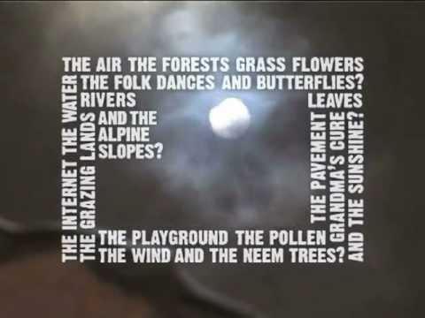
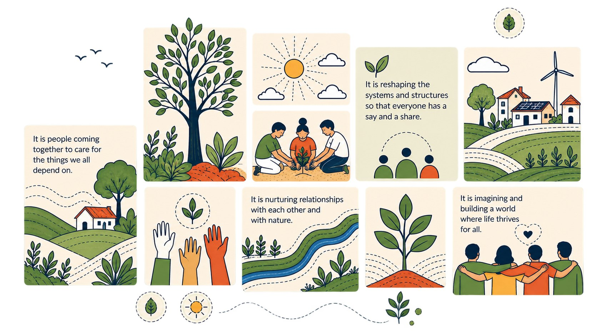
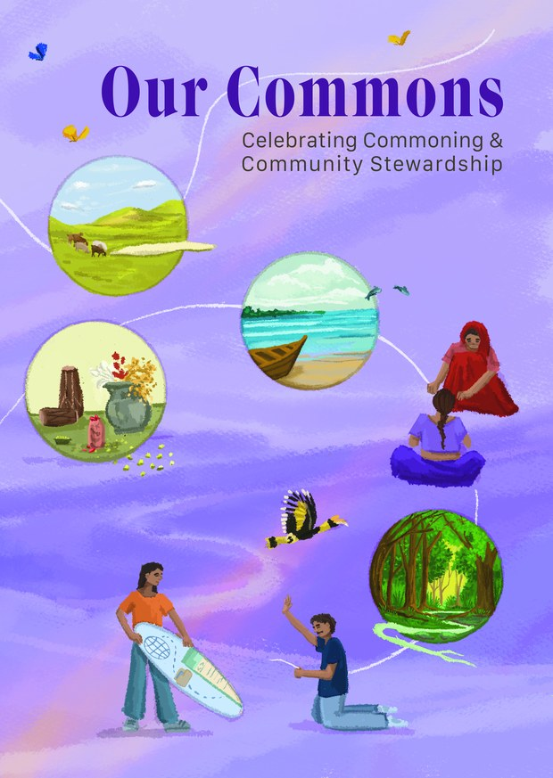
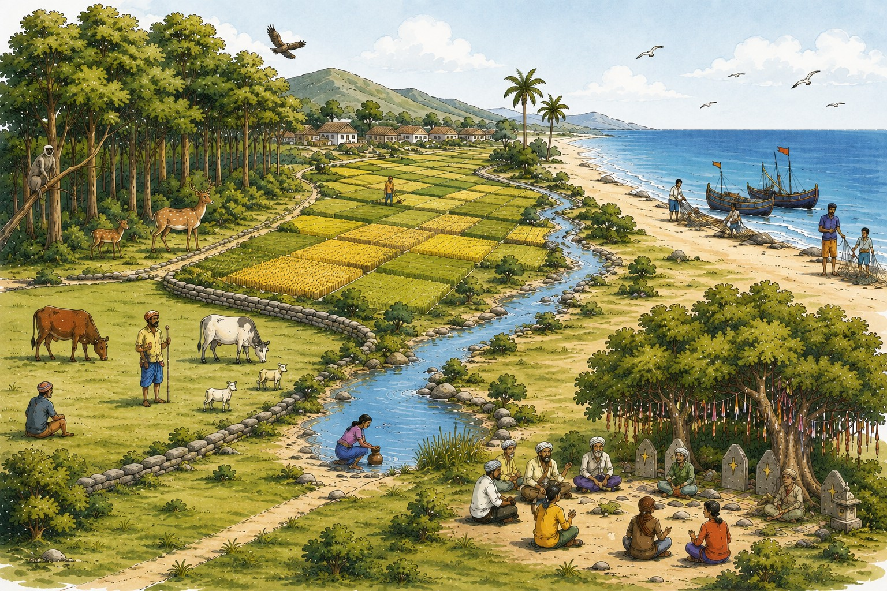

<!doctype html>
<html lang="en">
<head>
<meta charset="utf-8">
<meta name="viewport" content="width=device-width, initial-scale=1">
<title>Understanding Commons — Platform</title>
<link rel="preconnect" href="https://fonts.googleapis.com">
<link rel="preconnect" href="https://fonts.gstatic.com" crossorigin>
<link href="https://fonts.googleapis.com/css2?family=Inter:wght@400;500;600;700;800&display=swap" rel="stylesheet">
<script src="https://unpkg.com/lucide@0.474.0/dist/umd/lucide.min.js"></script>
<link rel="stylesheet" href="https://unpkg.com/leaflet@1.9.4/dist/leaflet.css">
<script src="https://unpkg.com/leaflet@1.9.4/dist/leaflet.js"></script>
<style>
/* ============================================================
   UNDERSTANDING COMMONS — UI DESIGN
   Design system: FES / India Observatory platform language
   navy ink · blue CTAs · green accent · rounded cards · soft depth
   ============================================================ */
:root{
  --ink:#2B3674; --ink-2:#3a4660; --ink-3:#242f63;
  /* primary: sage green · secondary: gold — from the Facilitating Commoning palette */
  --blue:#4e7c59; --blue-h:#40684a; --blue-soft:#edf3ee;
  --green:#4e7c59; --green-d:#3f6549; --green-soft:#edf3ee; --green-line:#cfe0d4;
  --cta:#d4a24c; --cta-h:#c08f3d; --cta-ink:#fff;
  --muted:#5b6472; --muted-2:#6b7280; --faint:#8a909a;
  --line:#eef0f4; --line-2:#dfe3ea; --bg-soft:#f6f8fc; --chip:#f4f7fb; --white:#fff;
  --amber:#d4a24c; --amber-soft:#fbf4e7; --amber-line:#ecd9b4; --amber-d:#8a6520;
  --red:#E11D48; --red-soft:#FFF1F4;
  /* the five commons families */
  --t-forest:#2E8540;   --t-forest-s:#EAF5EC;
  --t-pasture:#B26A00;  --t-pasture-s:#FFF4E0;
  --t-water:#1565C0;    --t-water-s:#E8F1FD;
  --t-coastal:#0E9488;  --t-coastal-s:#E1F5F3;
  --t-cultural:#7C3AED; --t-cultural-s:#F2ECFE;
  --sans:'Inter','Helvetica Neue',Helvetica,'Segoe UI',Roboto,system-ui,Arial,sans-serif;
  --mono:'SFMono-Regular',Consolas,'Liberation Mono',Menlo,monospace;
  --shadow-card:0 1px 2px rgba(43,54,116,.03),0 14px 34px -22px rgba(43,54,116,.22);
  --shadow-lift:0 22px 46px -22px rgba(43,54,116,.32);
  --shadow-float:0 16px 36px -12px rgba(43,54,116,.28);
  --sh-cta:0 8px 18px -8px rgba(212,162,76,.55); --sh-cta-h:0 12px 26px -8px rgba(212,162,76,.6);
  --sh-green-h:0 12px 26px -8px rgba(78,124,89,.6);
  --r:.9rem; --r-sm:.6rem; --r-lg:1.1rem;
}
*{box-sizing:border-box}
html{scroll-behavior:smooth}
body{margin:0;background:var(--white);color:var(--ink);font-family:var(--sans);font-size:16px;
  line-height:1.55;letter-spacing:.1px;-webkit-font-smoothing:antialiased;-moz-osx-font-smoothing:grayscale}
a{color:inherit;text-decoration:none}
button{font-family:inherit;cursor:pointer}
img{max-width:100%;display:block}
h1{font-size:clamp(2rem,4.2vw,2.6rem);font-weight:800;letter-spacing:-.03em;color:var(--ink);line-height:1.12;margin:0}
h2{font-weight:800;letter-spacing:-.02em;color:var(--ink);margin:0}
h3,h4,h5{font-weight:700;color:var(--ink);margin:0}
p{margin:0}
em{font-style:normal;color:var(--green)}
:focus-visible{outline:2px solid var(--blue);outline-offset:2px}
.mx{max-width:90rem;margin:0 auto;padding:0 2rem}
.mx-sm{max-width:56rem;margin:0 auto;padding:0 2rem}
@media(max-width:560px){.mx,.mx-sm{padding:0 1.15rem}}

/* ---------- nav ---------- */
nav.top{position:sticky;top:0;z-index:60;background:#fff;border-bottom:1px solid var(--line);
  box-shadow:0 1px 14px -8px rgba(43,54,116,.35)}
nav.top .bar{display:flex;align-items:center;gap:1.75rem;height:5rem;max-width:90rem;margin:0 auto;padding:0 2rem}
.brand{display:inline-flex;align-items:center;gap:10px;cursor:pointer;flex:none}
.brand .mk{width:38px;height:38px;border-radius:11px;background:var(--green);display:grid;place-items:center;
  color:#fff;flex:none;box-shadow:0 8px 16px -8px rgba(57,162,72,.6)}
.brand .mk i,.brand .mk svg.lucide{width:21px;height:21px}
.brand .bt{font-size:1.05rem;font-weight:800;letter-spacing:-.02em;color:var(--ink);line-height:1.05}
.brand .bt em{display:block;font-size:.62rem;font-weight:700;letter-spacing:.14em;color:var(--muted-2);text-transform:uppercase;margin-top:2px}
nav.top .links{display:flex;align-items:center;gap:2rem;flex:1;justify-content:flex-end;min-width:0}
nav.top .links a{color:var(--muted);font-size:.95rem;font-weight:500;padding:.35rem 0;
  white-space:nowrap;transition:color .15s}
nav.top .links a:hover{color:var(--ink);background:none}
nav.top .links a.active{color:var(--green-d);background:none;font-weight:700}
.navright{display:flex;align-items:center;gap:1rem;flex:none}
.navdiv{width:1px;height:1.6rem;background:var(--line-2);flex:none}
.nav-ic{border:0;background:none;padding:.25rem;color:var(--ink);display:grid;place-items:center;transition:color .15s}
.nav-ic:hover{color:var(--green-d)}
.nav-ic i,.nav-ic svg.lucide{width:1.25rem;height:1.25rem}
.langw{position:relative}
.langbtn{display:inline-flex;align-items:center;gap:.3rem;border:0;background:none;padding:.25rem;
  font:inherit;font-size:.92rem;font-weight:600;color:var(--ink);transition:color .15s}
.langbtn:hover{color:var(--green-d)}
.langbtn i,.langbtn svg.lucide{width:.95rem;height:.95rem;color:var(--faint);transition:transform .15s}
.langw.open .langbtn i,.langw.open .langbtn svg.lucide{transform:rotate(180deg)}
.lang-menu{position:absolute;right:0;top:calc(100% + .6rem);min-width:9rem;background:#fff;border:1px solid var(--line);
  box-shadow:var(--shadow-float);padding:.3rem;display:none;z-index:70}
.langw.open .lang-menu{display:block}
.lang-opt{display:block;width:100%;text-align:left;border:0;background:none;padding:.55rem .7rem;font:inherit;
  font-size:.9rem;font-weight:600;color:var(--ink)}
.lang-opt:hover{background:var(--bg-soft)}
.lang-opt.on{color:var(--green-d)}
@media(max-width:980px){.navdiv,.langw{display:none}}
.iconbtn{width:2.4rem;height:2.4rem;border-radius:.65rem;border:1px solid var(--line-2);background:#fff;
  display:grid;place-items:center;color:var(--muted);transition:.15s}
.iconbtn:hover{border-color:var(--blue);color:var(--blue);background:var(--blue-soft)}
.iconbtn i,.iconbtn svg.lucide{width:1.05rem;height:1.05rem}
.signin-btn{background:var(--blue);color:#fff;border:none;border-radius:.55rem;padding:.6rem 1.15rem;
  font-size:.9rem;font-weight:700;display:inline-flex;align-items:center;gap:.45rem;transition:.15s}
.signin-btn:hover{background:var(--blue-h)}
.signin-btn i,.signin-btn svg.lucide{width:1rem;height:1rem}
.navtoggle{display:none;width:2.4rem;height:2.4rem;border-radius:.65rem;border:1px solid var(--line-2);
  background:#fff;color:var(--ink);place-items:center}
.navtoggle i,.navtoggle svg.lucide{width:1.2rem;height:1.2rem}
@media(max-width:1320px){nav.top .links a{font-size:.82rem;padding:.45rem .5rem}}
@media(max-width:980px){nav.top .links{display:none}.navtoggle{display:grid}}
@media(max-width:700px){
  nav.top .bar{gap:.5rem;padding:0 1.15rem}
  .navright{gap:.5rem}
  .brand .bt{font-size:.95rem}
  .brand .mk{width:34px;height:34px}
  .signin-btn{padding:.55rem .8rem}
  .profilew-menu{width:14.5rem}
}
/* mobile drawer */
.mobnav{display:none;border-top:1px solid var(--line);background:#fff;padding:.75rem 1.15rem 1.15rem;
  box-shadow:0 12px 20px -14px rgba(43,54,116,.4)}
.mobnav.open{display:block}
.mobnav a{display:flex;align-items:center;gap:.65rem;padding:.7rem .75rem;border-radius:.6rem;
  font-size:.95rem;font-weight:600;color:var(--muted)}
.mobnav a.active{background:var(--blue-soft);color:var(--blue)}
.mobnav a i,.mobnav a svg.lucide{width:1.05rem;height:1.05rem;color:var(--faint)}

/* profile chip */
.profilew{position:relative}
.profilew-btn{display:inline-flex;align-items:center;border:0;background:none;padding:0;border-radius:50%;
  transition:box-shadow .15s}
.profilew-btn:hover,.profilew.open .profilew-btn{box-shadow:0 0 0 3px rgba(46,133,64,.25)}
.profilew-btn .pw-av{width:2.1rem;height:2.1rem;font-size:.75rem}
.pw-av{width:1.85rem;height:1.85rem;border-radius:999px;background:linear-gradient(135deg,#2B3674,#1F4397);
  color:#fff;display:grid;place-items:center;font-size:.68rem;font-weight:800;flex:none}
.pw-av.lg{width:2.9rem;height:2.9rem;font-size:.95rem}
.pw-cv{width:.9rem;height:.9rem;color:var(--faint);transition:transform .15s}
.profilew.open .pw-cv{transform:rotate(180deg)}
.profilew-menu{position:absolute;right:0;top:calc(100% + .55rem);width:16rem;background:#fff;border:1px solid var(--line);
  border-radius:.8rem;box-shadow:var(--shadow-float);padding:.4rem;display:none;z-index:70}
.profilew.open .profilew-menu{display:block}
.pw-head{display:flex;align-items:center;gap:.7rem;padding:.7rem}
.pw-head b{display:block;font-size:.92rem;color:var(--ink)}
.pw-head>div>span{font-size:.75rem;color:var(--muted-2)}
.pw-head .pw-av{color:#fff}
.pw-div{height:1px;background:var(--line);margin:.35rem 0}
.pw-item{display:flex;align-items:center;gap:.65rem;width:100%;background:none;border:0;padding:.6rem .7rem;
  border-radius:.55rem;font:inherit;font-size:.9rem;font-weight:600;color:var(--ink);text-align:left}
.pw-item:hover{background:var(--bg-soft)}
.pw-item i,.pw-item svg.lucide{width:1rem;height:1rem;color:var(--faint)}
.pw-item.danger{color:var(--red)}
.pw-item.danger i,.pw-item.danger svg.lucide{color:var(--red)}

/* ---------- buttons ---------- */
.btn{display:inline-flex;align-items:center;justify-content:center;gap:.5rem;border-radius:.6rem;
  font-size:.92rem;font-weight:600;padding:.65rem 1.35rem;border:1px solid transparent;white-space:nowrap;
  transition:transform .12s,box-shadow .2s,background .2s,border-color .15s,color .15s}
.btn:active{transform:translateY(1px)}
.btn i,.btn svg.lucide,.btn svg{width:1rem;height:1rem;flex:none}
.btn-primary{background:var(--cta);color:var(--cta-ink);box-shadow:var(--sh-cta)}
.btn-primary:hover{background:var(--green);color:#fff;transform:translateY(-1px);box-shadow:var(--sh-green-h)}
.btn-green{background:var(--green);color:#fff;box-shadow:0 8px 18px -8px rgba(78,124,89,.55)}
.btn-green:hover{background:var(--green-d);transform:translateY(-1px)}
.btn-outline{background:#fff;border-color:var(--line-2);color:var(--green-d)}
.btn-outline:hover{background:var(--green);color:#fff;border-color:var(--green)}
.btn-ghost{background:transparent;color:var(--muted);padding:.55rem .8rem}
.btn-ghost:hover{color:var(--ink);background:var(--chip)}
.btn-white{background:#fff;color:var(--blue);font-weight:700;border:none}
.btn-white:hover{background:var(--blue-soft);color:var(--blue-h)}
.btn.sm{padding:.45rem .9rem;font-size:.82rem;border-radius:.5rem}
.btn.block{width:100%}
.btn.arrow svg,.btn.arrow i{transition:transform .15s}
.btn.arrow:hover svg,.btn.arrow:hover i{transform:translateX(3px)}
.linkbtn{display:inline-flex;align-items:center;gap:.35rem;background:none;border:0;padding:0;
  font-size:.87rem;font-weight:700;color:var(--cta);transition:gap .15s,color .15s}
.linkbtn:hover{gap:.55rem;color:var(--green-d)}
.linkbtn i,.linkbtn svg.lucide{width:.95rem;height:.95rem}

/* ---------- shared bits ---------- */
.eyebrow{display:inline-flex;align-items:center;gap:.55rem;font-size:.72rem;font-weight:700;letter-spacing:.08em;
  text-transform:uppercase;color:var(--green-d);background:var(--green-soft);border:1px solid var(--green-line);
  padding:.4rem .85rem;border-radius:999px}
.eyebrow .pd{width:7px;height:7px;border-radius:50%;background:var(--green);box-shadow:0 0 0 4px rgba(57,162,72,.16);flex:none}
.eyebrow.blue{color:var(--blue);background:var(--blue-soft);border-color:#d5e0ff}
.eyebrow.blue .pd{background:var(--blue);box-shadow:0 0 0 4px rgba(31,67,151,.14)}
.kicker{font-size:.72rem;font-weight:800;letter-spacing:.09em;text-transform:uppercase;color:var(--faint)}
.lead{font-size:1.08rem;color:var(--muted);line-height:1.65}
.sub{color:var(--muted);max-width:52rem;margin:.55rem 0 0;font-size:.98rem}
.muted{color:var(--muted-2)}
.section{padding:96px 0}
.section.tight{padding:64px 0}
@media(max-width:700px){.section{padding:56px 0}.section.tight{padding:40px 0}}
.band{background:var(--bg-soft);border-top:1px solid var(--line);border-bottom:1px solid var(--line)}
.sechead{display:flex;align-items:flex-end;justify-content:space-between;gap:1.25rem;flex-wrap:wrap;margin-bottom:1.6rem}
.sechead h2{font-size:1.55rem}
.panel{background:#fff;border:1px solid var(--line);border-radius:0;padding:1.6rem;box-shadow:var(--shadow-card)}
.grid{display:grid;gap:1.35rem}
.g2{grid-template-columns:repeat(2,1fr)}
.g3{grid-template-columns:repeat(3,1fr)}
.g4{grid-template-columns:repeat(4,1fr)}
.row{display:flex;gap:.75rem;flex-wrap:wrap}
.stack{display:flex;flex-direction:column;gap:1rem}
.between{display:flex;align-items:center;justify-content:space-between;gap:1rem;flex-wrap:wrap}
.mt8{margin-top:.5rem}.mt12{margin-top:.75rem}.mt16{margin-top:1rem}.mt24{margin-top:1.5rem}
@media(max-width:980px){.g4{grid-template-columns:repeat(2,1fr)}.g3{grid-template-columns:repeat(2,1fr)}}
@media(max-width:700px){.g2,.g3,.g4{grid-template-columns:1fr}}

/* tags & pills */
.tag{display:inline-flex;align-items:center;gap:.35rem;padding:.22rem .7rem;background:var(--chip);color:var(--muted);
  border:1px solid var(--line);border-radius:999px;font-size:.78rem;font-weight:600;white-space:nowrap}
.tag.solid{background:var(--green-soft);color:var(--green-d);border-color:var(--green-line)}
.tag.blue{background:var(--blue-soft);color:var(--blue);border-color:#d5e0ff}
.tag.off{color:var(--faint)}
.tags{display:flex;flex-wrap:wrap;gap:.4rem}
.badge{display:inline-block;padding:.24rem .7rem;color:#fff;font-size:.7rem;font-weight:700;border-radius:.35rem;letter-spacing:.02em}
.b-forest{background:var(--t-forest)}.b-pasture{background:var(--t-pasture)}.b-water{background:var(--t-water)}
.b-coastal{background:var(--t-coastal)}.b-cultural{background:var(--t-cultural)}.b-all{background:var(--ink)}

/* icon tiles */
.ic-tile{display:inline-grid;place-items:center;width:2.75rem;height:2.75rem;border-radius:.8rem;
  background:var(--green-soft);color:var(--green-d);flex:none;transition:background .2s,color .2s}
.ic-tile i,.ic-tile svg.lucide{width:1.35rem;height:1.35rem;stroke-width:1.9}
.ic-tile.lg{width:3.2rem;height:3.2rem;border-radius:.9rem}
.ic-tile.blue{background:var(--blue-soft);color:var(--blue)}
.ic-tile.amber{background:var(--amber-soft);color:var(--amber)}
.ic-tile.forest{background:var(--t-forest-s);color:var(--t-forest)}
.ic-tile.pasture{background:var(--t-pasture-s);color:var(--t-pasture)}
.ic-tile.water{background:var(--t-water-s);color:var(--t-water)}
.ic-tile.coastal{background:var(--t-coastal-s);color:var(--t-coastal)}
.ic-tile.cultural{background:var(--t-cultural-s);color:var(--t-cultural)}

/* ---------- breadcrumb ---------- */
.crumbbar{position:relative;z-index:1;background:#fff}
.crumb{display:flex;align-items:center;gap:.5rem;font-size:.83rem;color:var(--muted-2);padding:1.1rem 0 0;flex-wrap:wrap}
.crumb a{display:inline-flex;align-items:center;gap:.35rem;font-weight:600;transition:color .15s;cursor:pointer}
.crumb a:hover{color:var(--blue)}
.crumb i,.crumb svg.lucide{width:.9rem;height:.9rem}
.crumb .sep{color:var(--line-2)}
.crumb .here{color:var(--ink);font-weight:700}

/* ---------- hero ---------- */
.hero{background:linear-gradient(to bottom,var(--bg-soft),var(--white));border-bottom:1px solid var(--line)}
.hero.white{background:#fff}
.hero-intro{max-width:56rem}
.wc-collage{margin:0;padding:0}
.wc-collage img{width:100%;height:auto;display:block}

.hero .in{max-width:90rem;margin:0 auto;padding:3.5rem 2rem 3rem}
.hero-split{display:grid;grid-template-columns:1.15fr 1fr;gap:3rem;align-items:center}
.hero h1{margin:1.1rem 0 1rem}
.hero .lead{max-width:36rem}
.hero .row{margin-top:1.75rem}
.hero-note{display:flex;align-items:flex-start;gap:.55rem;margin-top:1.5rem;font-size:.83rem;color:var(--muted-2);font-weight:600;line-height:1.6}
.hero-note i,.hero-note svg.lucide{width:1rem;height:1rem;color:var(--green);flex:none;margin-top:.15rem}
@media(max-width:900px){.hero-split{grid-template-columns:1fr;gap:2rem}.hero .in{padding:2.5rem 2rem}}
@media(max-width:560px){.hero .in{padding:2rem 1.15rem}}

/* image frame / placeholder */
.imgframe{position:relative;border:1px solid var(--line-2);border-radius:0;overflow:hidden;background:#fff;
  box-shadow:0 24px 60px -32px rgba(43,54,116,.45);min-height:16rem}
.imgframe>img{width:100%;height:100%;object-fit:cover}
.ph{position:absolute;inset:0;display:flex;flex-direction:column;align-items:center;justify-content:center;gap:.6rem;
  text-align:center;padding:1.25rem;background:
   linear-gradient(135deg,rgba(57,162,72,.05),rgba(31,67,151,.06)),
   repeating-linear-gradient(45deg,transparent,transparent 11px,rgba(43,54,116,.045) 11px,rgba(43,54,116,.045) 12px),#fff;
  color:var(--muted-2)}
.ph b{font-size:.92rem;font-weight:700;color:var(--ink)}
.ph span{font-size:.76rem;color:var(--faint)}
.ph .ic-tile{background:#fff;border:1px solid var(--line-2);color:var(--blue)}
.ph.flat{position:static;min-height:9rem;border:1px solid var(--line-2);border-radius:0}
.ph.tall{min-height:20rem}
.ph.play .ic-tile{background:var(--blue);color:#fff;border:none;box-shadow:0 12px 26px -10px rgba(31,67,151,.6)}

/* hero stats strip */
.hero-stats{display:grid;grid-template-columns:repeat(4,1fr);gap:1rem;margin-top:2.5rem}
.hs{display:flex;align-items:center;gap:.9rem;background:#fff;border:1px solid var(--line);border-radius:.95rem;
  padding:1rem 1.15rem;box-shadow:0 2px 10px rgba(43,54,116,.05);transition:transform .15s,box-shadow .15s}
.hs:hover{transform:translateY(-3px);box-shadow:0 18px 38px -20px rgba(43,54,116,.3)}
.hs-tx{display:flex;flex-direction:column;min-width:0}
.hs-n{font-size:1.5rem;font-weight:800;color:var(--ink);line-height:1;letter-spacing:-.02em}
.hs-n em{color:var(--green)}
.hs-l{font-size:.78rem;font-weight:600;color:var(--muted-2);margin-top:.3rem}
@media(max-width:760px){.hero-stats{grid-template-columns:1fr 1fr}}

/* ---------- page head ---------- */
.pagehead{background:linear-gradient(to bottom,var(--bg-soft),var(--white));border-bottom:1px solid var(--line)}
.pagehead .in{max-width:90rem;margin:0 auto;padding:2.25rem 2rem 2.75rem;display:flex;align-items:flex-end;
  justify-content:space-between;gap:1.5rem;flex-wrap:wrap}
.pagehead h1{font-size:1.9rem;margin:.9rem 0 .6rem}
.pagehead p{color:var(--muted);max-width:48rem}
@media(max-width:560px){.pagehead .in{padding:1.5rem 1.15rem 2rem}}

/* ---------- cards ---------- */
.card{background:#fff;border:1px solid var(--line);border-radius:0;padding:1.35rem;display:flex;
  flex-direction:column;gap:.7rem;box-shadow:var(--shadow-card);transition:box-shadow .2s,border-color .15s,transform .15s}
.card.click{cursor:pointer}
.card.click:hover{box-shadow:var(--shadow-lift);border-color:var(--line-2);transform:translateY(-2px)}
.card h3{font-size:1.02rem;line-height:1.35}
.card p{color:var(--muted);font-size:.9rem}
.card .cta{margin-top:auto;padding-top:.35rem}
.card.click:hover h3{color:var(--blue)}

/* report panel (Our Commons publication) */
.reportcard{position:relative;display:grid;grid-template-columns:1.5fr .8fr;gap:2.5rem;align-items:center;
  background:var(--green-d);padding:3rem 3.25rem;overflow:hidden}
.reportcard::before{content:'';position:absolute;right:-120px;bottom:-140px;width:360px;height:360px;
  background:radial-gradient(circle,rgba(212,162,76,.26),transparent 70%);pointer-events:none}
.rc-copy{position:relative;z-index:1}
.reportcard h3{font-size:1.6rem;color:#fff;letter-spacing:-.02em;margin:0 0 .9rem}
.reportcard p{font-size:.98rem;line-height:1.75;color:#d3e2d7;max-width:44rem;margin:0 0 1.9rem}
.rc-btn{background:var(--cta);color:var(--cta-ink);font-weight:700;padding:.8rem 1.5rem;border:none;
  box-shadow:0 14px 28px -12px rgba(212,162,76,.75)}
.rc-btn:hover{background:var(--cta-h);color:#fff;transform:translateY(-1px)}
.rc-cover{position:relative;z-index:1;display:flex;justify-content:center}
.rc-cover img{width:100%;max-width:15rem;display:block;background:#fff;padding:6px;border-radius:.7rem;
  transform:rotate(3deg);box-shadow:0 34px 60px -22px rgba(0,0,0,.85);transition:transform .3s ease}
.reportcard:hover .rc-cover img{transform:rotate(0deg) translateY(-4px)}
@media(max-width:820px){
  .reportcard{grid-template-columns:1fr;gap:2rem;padding:2.25rem 1.5rem}
  .rc-cover img{max-width:12rem;transform:none}
}

/* video cards (What are Commons) */
.vcard{padding:0;overflow:hidden;gap:0}
.v-frame{position:relative;display:block;width:100%;aspect-ratio:16/9;border:0;padding:0;margin:0;
  background:#0e1524;overflow:hidden;cursor:pointer}
.v-frame img{width:100%;height:100%;object-fit:contain;display:block;transition:transform .4s ease}
.vcard:hover .v-frame img{transform:scale(1.03)}
.v-frame iframe{width:100%;height:100%;border:0;display:block}
.v-play{position:absolute;left:50%;top:50%;transform:translate(-50%,-50%);width:3.2rem;height:3.2rem;border-radius:50%;
  background:rgba(255,255,255,.95);display:grid;place-items:center;color:var(--blue);
  box-shadow:0 12px 26px -8px rgba(0,0,0,.55);transition:transform .2s ease}
.vcard:hover .v-play{transform:translate(-50%,-50%) scale(1.09)}
.v-play i,.v-play svg.lucide{width:1.35rem;height:1.35rem;margin-left:.12rem}
.v-body{padding:1.1rem 1.25rem 1.25rem;display:flex;flex-direction:column;gap:.35rem;flex:1}
.v-meta{display:flex;align-items:center;gap:.4rem;font-size:.78rem;color:var(--muted-2);font-weight:600}
.v-meta i,.v-meta svg.lucide{width:.95rem;height:.95rem;color:#D93025}

/* photo-topped card (home · six areas) */
.imgcard{padding:0;overflow:hidden;gap:0;border-radius:0}
.imgcard .ic-photo{position:relative;aspect-ratio:16/9;background:var(--bg-soft);overflow:hidden;flex:none}
.imgcard .ic-photo img{width:100%;height:100%;object-fit:cover;display:block;transition:transform .45s ease}
.imgcard:hover .ic-photo img{transform:scale(1.045)}
.imgcard .ic-photo .ph{background:var(--bg-soft)}
.imgcard .ic-body{padding:1.2rem 1.35rem 1.35rem;display:flex;flex-direction:column;gap:.5rem;flex:1}

/* type card (five families) */
.typecard{position:relative;overflow:hidden;padding-left:1.5rem}
.typecard::before{content:'';position:absolute;left:0;top:0;bottom:0;width:5px;background:var(--tc,var(--green))}
.typecard .tc-num{font-family:var(--mono);font-size:.75rem;font-weight:700;color:var(--faint);letter-spacing:.08em}
.typecard .tc-local{font-size:.8rem;color:var(--tc,var(--green));font-weight:700}

/* five commons types — photo cards (home) */
.typegrid{display:grid;grid-template-columns:repeat(5,1fr);gap:1rem}
@media(max-width:1140px){.typegrid{grid-template-columns:repeat(3,1fr)}}
@media(max-width:780px){.typegrid{grid-template-columns:repeat(2,1fr)}}
@media(max-width:480px){.typegrid{grid-template-columns:1fr}}
.tcard{position:relative;display:flex;flex-direction:column;background:#fff;border:1px solid var(--line);
  overflow:hidden;cursor:pointer;box-shadow:var(--shadow-card);
  transition:transform .18s ease,box-shadow .2s ease,border-color .15s}
.tcard:hover,.tcard:focus-visible{transform:translateY(-3px);box-shadow:var(--shadow-lift);border-color:var(--tc);outline:none}
.tcard::after{content:'';position:absolute;left:0;right:0;top:0;height:3px;background:var(--tc);z-index:3;
  transform:scaleX(0);transform-origin:left;transition:transform .28s ease}
.tcard:hover::after,.tcard:focus-visible::after{transform:scaleX(1)}
.tc-photo{position:relative;aspect-ratio:2/1;overflow:hidden;background:#fff;display:grid;place-items:center;
  padding:.4rem .5rem 0;border-bottom:1px solid var(--line)}
.tc-photo img{width:100%;height:100%;object-fit:contain;display:block;transition:transform .5s ease}
.tcard:hover .tc-photo img{transform:scale(1.04)}
.tc-photo .ph{position:absolute;inset:0}
.tc-body{padding:.9rem 1rem 1.05rem;display:flex;flex-direction:column;gap:.35rem;flex:1}
.tc-body h3{font-size:1.02rem;line-height:1.15}
.tc-kind{display:block;font-size:.66rem;font-weight:800;letter-spacing:.1em;text-transform:uppercase;color:var(--tc);margin-top:.25rem}
.tc-local{font-size:.78rem;color:var(--muted-2);line-height:1.5;margin-top:.1rem}
.tc-go{display:inline-flex;align-items:center;gap:.3rem;margin-top:auto;padding-top:.6rem;
  font-size:.78rem;font-weight:700;color:var(--tc)}
.tc-go i,.tc-go svg.lucide{width:.9rem;height:.9rem;transition:transform .15s}
.tcard:hover .tc-go i,.tcard:hover .tc-go svg.lucide{transform:translateX(3px)}

.pw-flash{outline:2px solid var(--blue);outline-offset:5px;border-radius:0}
@media(max-width:640px){.pw-arrow{display:none}}

/* flow diagram */
.flow{display:flex;flex-wrap:wrap;align-items:stretch;gap:.6rem}
.flow .node{flex:1 1 8rem;background:#fff;border:1px solid var(--line);border-radius:.8rem;padding:.85rem 1rem;
  text-align:center;box-shadow:0 1px 2px rgba(43,54,116,.04);cursor:pointer;transition:.15s}
.flow .node:hover{border-color:var(--blue);transform:translateY(-2px)}
.flow .node b{display:block;font-size:.87rem;font-weight:700;color:var(--ink)}
.flow .node span{display:block;font-family:var(--mono);font-size:.66rem;color:var(--faint);margin-top:.25rem;text-transform:uppercase;letter-spacing:.05em}
.flow .node.strong{background:var(--ink);border-color:var(--ink)}
.flow .node.strong b{color:#fff}.flow .node.strong span{color:rgba(255,255,255,.62)}
.flow .arw{align-self:center;color:var(--line-2);display:grid;place-items:center}
.flow .arw i,.flow .arw svg.lucide{width:1rem;height:1rem}
@media(max-width:640px){.flow .arw{display:none}}

/* feature tiles — local-names map + intro films */
.featuregrid{display:grid;grid-template-columns:1.15fr 1fr;gap:1.35rem;align-items:stretch}
@media(max-width:900px){.featuregrid{grid-template-columns:1fr}}
.feature{position:relative;display:flex;flex-direction:column;overflow:hidden;border:1px solid var(--line);
  background:#fff;box-shadow:var(--shadow-card);cursor:pointer;transition:transform .18s ease,box-shadow .2s ease}
.feature:hover{transform:translateY(-3px);box-shadow:var(--shadow-lift)}
.f-body{padding:1.6rem 1.75rem 1.75rem;display:flex;flex-direction:column;gap:.6rem;flex:1}
.feature h3{font-size:1.35rem;letter-spacing:-.02em;line-height:1.2}
.feature p{font-size:.92rem;line-height:1.65;color:var(--muted)}
.f-cta{display:inline-flex;align-items:center;gap:.4rem;margin-top:auto;padding-top:1.1rem;
  font-size:.87rem;font-weight:700;color:var(--cta);transition:color .15s}
.f-cta:hover,.feature:hover .f-cta{color:var(--green-d)}
.f-cta i,.f-cta svg.lucide{width:.95rem;height:.95rem;transition:transform .15s}
.feature:hover .f-cta i,.feature:hover .f-cta svg.lucide{transform:translateX(3px)}

/* dark map tile */
.feature.dark{background:linear-gradient(140deg,#22326f 0%,#2b3674 58%,#1f4397 100%);border-color:transparent}
.feature.dark::before{content:'';position:absolute;right:-90px;top:-90px;width:300px;height:300px;
  background:radial-gradient(circle,rgba(57,162,72,.35),transparent 68%);pointer-events:none}
.feature.dark>*{position:relative;z-index:1}
.feature.dark h3{color:#fff}
.feature.dark p{color:rgba(255,255,255,.78)}
.feature.dark .kicker{color:#8c96c6}
.feature.dark .f-cta{color:#fff}
.namelist{display:grid;grid-template-columns:1fr 1fr;gap:0 2.5rem;margin:.9rem 0 0;padding:0;list-style:none}
.namelist li{display:flex;align-items:baseline;justify-content:space-between;gap:1rem;
  padding:.6rem 0;border-bottom:1px solid rgba(255,255,255,.14)}
.namelist b{font-size:.92rem;font-weight:600;color:#fff;letter-spacing:-.01em}
.namelist span{font-size:.72rem;font-weight:600;letter-spacing:.05em;text-transform:uppercase;color:#95a0cc;white-space:nowrap}
@media(max-width:620px){.namelist{grid-template-columns:1fr;gap:0}}
.feature.dark .f-body{justify-content:space-between;gap:1.1rem}
.f-stats{display:grid;grid-template-columns:repeat(3,1fr);gap:1rem;margin-top:.35rem;padding-top:1.25rem;
  border-top:1px solid rgba(255,255,255,.16)}
.f-stats b{display:block;font-size:1.75rem;font-weight:800;letter-spacing:-.02em;color:#fff;line-height:1}
.f-stats span{display:block;margin-top:.35rem;font-size:.72rem;font-weight:600;letter-spacing:.04em;color:#a8b0d8;line-height:1.35}
@media(max-width:420px){.f-stats{grid-template-columns:1fr 1fr}}

/* film tile */
.f-player{position:relative;aspect-ratio:2/1;background:#0e1524;display:grid;place-items:center;overflow:hidden}
.f-poster{position:absolute;inset:0;width:100%;height:100%;object-fit:cover;display:block;
  transition:transform .6s ease;opacity:.92}
.feature:hover .f-poster{transform:scale(1.04)}
.f-player::after{content:'';position:absolute;inset:0;
  background:linear-gradient(to top,rgba(10,18,38,.78),rgba(10,18,38,.18) 55%,rgba(10,18,38,.35))}
.f-play{position:relative;z-index:2;width:3.6rem;height:3.6rem;border-radius:50%;background:#fff;display:grid;place-items:center;
  color:var(--blue);box-shadow:0 14px 30px -10px rgba(0,0,0,.55);transition:transform .2s ease}
.feature:hover .f-play{transform:scale(1.08)}
.f-play i,.f-play svg.lucide{width:1.5rem;height:1.5rem;margin-left:.15rem}
.f-badge{position:absolute;z-index:2;left:1rem;bottom:1rem;font-size:.72rem;font-weight:700;letter-spacing:.05em;
  text-transform:uppercase;color:rgba(255,255,255,.85)}
.filmlist{display:flex;flex-direction:column;margin-top:.35rem}
.filmrow{display:flex;align-items:center;gap:.7rem;padding:.6rem 0;border-top:1px solid var(--line);font-size:.87rem;color:var(--ink)}
.filmrow:first-child{border-top:0}
.filmrow .fn{font-family:var(--mono);font-size:.7rem;font-weight:700;color:var(--faint)}
.filmrow .ft{flex:1;font-weight:600}
.filmrow .fd{font-size:.76rem;color:var(--muted-2)}

/* gateway CTA (navy gradient) */
.gateway{position:relative;overflow:hidden;border-radius:0;padding:2.9rem 2rem;text-align:center;color:#fff;
  background:linear-gradient(135deg,#22326f 0%,#2b3674 60%,#243a6e 100%);box-shadow:0 24px 60px -28px rgba(20,30,80,.5)}
.gateway::before{content:'';position:absolute;right:-90px;top:-90px;width:340px;height:340px;
  background:radial-gradient(circle,rgba(57,162,72,.4),transparent 68%);pointer-events:none}
.gateway::after{content:'';position:absolute;left:-70px;bottom:-110px;width:300px;height:300px;
  background:radial-gradient(circle,rgba(31,67,151,.5),transparent 70%);pointer-events:none}
.gateway>*{position:relative;z-index:1}
.gateway h2{color:#fff;font-size:1.6rem;margin:0 0 .85rem}
.gateway p{color:rgba(255,255,255,.82);max-width:44rem;margin:0 auto 1.6rem;line-height:1.7}
.gw-ic{display:inline-grid;place-items:center;width:3.2rem;height:3.2rem;border-radius:.9rem;
  background:rgba(255,255,255,.12);border:1px solid rgba(255,255,255,.22);color:#fff;margin-bottom:1.1rem}
.gw-ic i,.gw-ic svg.lucide{width:1.6rem;height:1.6rem}
.gw-feats{display:flex;flex-wrap:wrap;justify-content:center;gap:.65rem 1.5rem;margin:0 0 1.9rem}
.gw-feats span{display:inline-flex;align-items:center;gap:.5rem;font-size:.88rem;font-weight:600;color:rgba(255,255,255,.92)}
.gw-feats i,.gw-feats svg.lucide{width:1.05rem;height:1.05rem;color:#6fd77f;flex:none}

/* callout strip */
.callout{display:flex;align-items:center;justify-content:space-between;gap:1.25rem;flex-wrap:wrap;
  background:#fff;border:1px solid var(--line);border-left:5px solid var(--green);border-radius:0;
  padding:1.4rem 1.6rem;box-shadow:var(--shadow-card)}
.callout .tx strong{display:block;font-size:1.02rem;color:var(--ink)}
.callout .tx span{font-size:.9rem;color:var(--muted)}

.clearbtn{font-size:.82rem;font-weight:700;color:var(--blue);background:none;border:0;padding:0}
.clearbtn:hover{text-decoration:underline}
.layout-wide{display:grid;grid-template-columns:1fr 21rem;gap:2rem;align-items:start}
@media(max-width:1080px){.layout-wide{grid-template-columns:1fr}}

/* search + form fields */
.searchwrap{position:relative;display:flex;align-items:center}
.searchwrap input{width:100%;padding:.95rem 7.5rem .95rem 3.1rem;font-size:1rem;border:1px solid var(--line-2);
  border-radius:.85rem;outline:none;font-family:inherit;color:var(--ink);
  box-shadow:0 12px 38px -18px rgba(43,54,116,.24)}
.searchwrap input:focus{border-color:var(--blue);box-shadow:0 0 0 3px rgba(31,67,151,.14),0 12px 38px -18px rgba(43,54,116,.24)}
.searchwrap .ico{position:absolute;left:1.1rem;width:1.2rem;height:1.2rem;color:var(--faint)}
.searchgo{position:absolute;right:.45rem;border:none;background:var(--blue);color:#fff;font-weight:700;font-size:.9rem;
  padding:.62rem 1.25rem;border-radius:.6rem;transition:background .15s}
.searchgo:hover{background:var(--blue-h)}
.tsearch{position:relative;flex:1;max-width:30rem;display:flex;align-items:center}
.tsearch input{width:100%;padding:.6rem 1rem .6rem 2.5rem;border:1px solid var(--line-2);border-radius:.6rem;
  font-size:.88rem;outline:none;font-family:inherit;background:#fff}
.tsearch input:focus{border-color:var(--blue);box-shadow:0 0 0 3px rgba(31,67,151,.12)}
.tsearch .ico{position:absolute;left:.85rem;width:1rem;height:1rem;color:var(--faint)}
.toolbar{display:flex;align-items:center;justify-content:space-between;gap:1rem;margin-bottom:1.35rem;flex-wrap:wrap}
.field{margin-bottom:1.15rem}
.field label{display:block;font-size:.82rem;font-weight:700;color:var(--ink);margin-bottom:.4rem}
.field label .req{color:var(--red)}
.field input,.field textarea,.field select{width:100%;padding:.65rem .9rem;border:1px solid var(--line-2);
  border-radius:.6rem;font-size:.92rem;outline:none;font-family:inherit;background:#fff;color:var(--ink)}
.field textarea{resize:vertical;min-height:6rem}
.field input:focus,.field textarea:focus,.field select:focus{border-color:var(--blue);box-shadow:0 0 0 3px rgba(31,67,151,.12)}
.field .hint{font-size:.76rem;color:var(--faint);margin-top:.35rem}
.field .withic{position:relative;display:flex;align-items:center}
.field .withic input{padding-left:2.4rem}
.field .withic .ico{position:absolute;left:.8rem;width:1rem;height:1rem;color:var(--faint);pointer-events:none}
.selw{position:relative}
.selw select{appearance:none;-webkit-appearance:none;padding-right:2.3rem;cursor:pointer;font-weight:600}
.selw .cv{position:absolute;right:.8rem;top:50%;transform:translateY(-50%);width:1rem;height:1rem;color:var(--faint);pointer-events:none}
.selw select{width:100%;padding:.65rem 2.3rem .65rem .9rem;border:1px solid var(--line-2);border-radius:.6rem;
  font-size:.92rem;font-weight:600;font-family:inherit;color:var(--ink);background:#fff;outline:none}
.selw select:hover{border-color:var(--blue)}
.selw select:focus{border-color:var(--blue);box-shadow:0 0 0 3px rgba(31,67,151,.12)}
.toolbar .selw select{padding:.55rem 2.3rem .55rem .9rem;font-size:.85rem}
.dropzone{border:1.5px dashed var(--line-2);border-radius:.7rem;background:var(--bg-soft);padding:1.5rem;
  text-align:center;color:var(--muted-2);font-size:.87rem;cursor:pointer;transition:.15s}
.dropzone:hover{border-color:var(--blue);background:var(--blue-soft);color:var(--blue)}
.dropzone i,.dropzone svg.lucide{width:1.4rem;height:1.4rem;margin:0 auto .5rem;color:var(--faint)}
.dropzone:hover i,.dropzone:hover svg.lucide{color:var(--blue)}

.admgrid{display:grid;grid-template-columns:1fr 1fr;gap:0 1rem}
.admgrid .field:nth-child(5){grid-column:1/-1}
.admgrid select:disabled{background:var(--bg-soft);color:var(--faint);cursor:not-allowed}
.admnote{display:flex;align-items:center;gap:.4rem;margin:-.35rem 0 1.15rem}
.admnote i,.admnote svg.lucide{width:.9rem;height:.9rem;flex:none}
@media(max-width:640px){.admgrid{grid-template-columns:1fr}}

/* stepbar */
.stepbar{display:flex;gap:.4rem;margin-bottom:1.5rem}
.stepbar i{flex:1;height:5px;border-radius:999px;background:var(--line-2)}
.stepbar i.on{background:var(--green)}

/* pill tabs */
.tabbar{display:inline-flex;flex-wrap:wrap;gap:.25rem;background:var(--bg-soft);border-radius:.8rem;padding:.35rem}
.tabbar .tab{border:none;background:transparent;padding:.6rem 1.1rem;border-radius:999px;font:inherit;font-size:.88rem;
  font-weight:700;color:var(--muted);transition:.15s;display:inline-flex;align-items:center;gap:.45rem}
.tabbar .tab i,.tabbar .tab svg.lucide{width:1rem;height:1rem}
.tabbar .tab:hover{color:var(--green-d);background:#fff}
.tabbar .tab.active{background:var(--green);color:#fff;box-shadow:0 3px 10px -3px rgba(46,133,64,.5)}

/* stat tiles */
.stat{background:#fff;border:1px solid var(--line);border-radius:0;padding:1.15rem 1.25rem;box-shadow:var(--shadow-card)}
.stat b{display:block;font-size:1.65rem;font-weight:800;color:var(--ink);letter-spacing:-.02em;line-height:1.1}
.stat span{display:block;font-size:.78rem;font-weight:600;color:var(--muted-2);margin-top:.35rem}
.kpi{display:flex;align-items:center;gap:.9rem}

/* info rows */
.inforow{background:#fff;border:1px solid var(--line);border-radius:.75rem;padding:.85rem 1rem}
.inforow h5{font-size:.7rem;font-weight:800;letter-spacing:.06em;text-transform:uppercase;color:var(--faint);margin:0 0 .3rem}
.inforow p{font-size:.88rem;color:var(--muted);margin:0}
.namecard{background:#fff;border:1px solid var(--line);border-radius:0;padding:.9rem 1rem;transition:.15s;
  border-left:3px solid var(--tc,var(--green))}
.namecard:hover{box-shadow:var(--shadow-card);transform:translateY(-2px)}
.namecard h5{font-size:.9rem;font-weight:700;color:var(--ink);margin:0 0 .3rem}
.namecard p{font-size:.83rem;color:var(--muted);margin:0;line-height:1.55}

/* timeline (what happens next) */
.tl-row{display:flex;gap:.85rem;position:relative;padding:0 0 1.2rem}
.tl-row:last-child{padding-bottom:0}
.tl-node{flex:none;width:2.1rem;height:2.1rem;border-radius:50%;display:grid;place-items:center;z-index:1;
  background:#fff;border:2px dashed var(--line-2);color:var(--muted-2);font-size:.75rem;font-weight:800}
.tl-node i,.tl-node svg.lucide{width:.9rem;height:.9rem}
.tl-node.done{background:var(--blue);border:none;color:#fff}
.tl-row:not(:last-child)::before{content:'';position:absolute;left:1rem;top:2.1rem;bottom:.2rem;width:2px;background:var(--line-2)}
.tl-tx b{display:block;font-size:.88rem;font-weight:700;color:var(--ink)}
.tl-tx p{font-size:.82rem;color:var(--muted-2);margin:.15rem 0 0}

/* chapter intro — count block + pull quote */
.chaplead{display:grid;grid-template-columns:17rem 1fr;gap:1.5rem;align-items:stretch}
@media(max-width:820px){.chaplead{grid-template-columns:1fr}}
.chapcount{position:relative;overflow:hidden;display:flex;flex-direction:column;justify-content:center;
  padding:1.75rem;color:#fff;background:linear-gradient(140deg,#22326f 0%,#2b3674 60%,#1f4397 100%)}
.chapcount::before{content:'';position:absolute;right:-70px;top:-70px;width:210px;height:210px;
  background:radial-gradient(circle,rgba(57,162,72,.42),transparent 70%);pointer-events:none}
.chapcount>*{position:relative;z-index:1}
.cc-ic{display:grid;place-items:center;width:2.4rem;height:2.4rem;border-radius:50%;
  background:rgba(255,255,255,.14);border:1px solid rgba(255,255,255,.25);color:#fff;margin-bottom:.9rem}
.cc-ic i,.cc-ic svg.lucide{width:1.15rem;height:1.15rem}
.cc-n{font-size:3.4rem;font-weight:800;letter-spacing:-.04em;line-height:.95;color:#fff}
.cc-l{margin-top:.6rem;font-size:.84rem;font-weight:600;line-height:1.55;color:#a8b0d8}
.chapquote{position:relative;margin:0;display:flex;gap:.9rem;align-items:flex-start;
  background:var(--green-soft);border-left:4px solid var(--green);padding:1.75rem 2rem}
.cq-mark{font-size:3.2rem;line-height:.8;color:var(--green);font-weight:800;flex:none}
.chapquote p{margin:0;font-size:1.12rem;line-height:1.65;color:var(--ink-2);font-weight:500}
@media(max-width:560px){.chapquote{padding:1.25rem 1.25rem}.chapquote p{font-size:1rem}.cc-n{font-size:2.9rem}}

/* chapters (commoning) — illustration bleeds to the page edge and dissolves into the text */
.chapsec{padding:0;background:#fff}
.chapter{display:grid;grid-template-columns:1fr 1fr;gap:0;align-items:center}
.chapshot{position:relative;margin:0;padding:0;aspect-ratio:3/2;overflow:hidden;border:0;border-radius:0;
  box-shadow:none;background:transparent}
.chapshot img{width:100%;height:100%;object-fit:cover;display:block}
.chapter.flip .chapshot{order:2}
.chaptext{padding:3rem max(2rem,calc((100vw - 90rem)/2 + 2rem)) 3rem 1rem}
.chapter.flip .chaptext{padding:3rem 1rem 3rem max(2rem,calc((100vw - 90rem)/2 + 2rem))}
@media(max-width:820px){
  .chapter,.chapter.flip{grid-template-columns:1fr}
  .chapter.flip .chapshot{order:0}
  .chaptext,.chapter.flip .chaptext{padding:1.75rem 1.15rem 2.5rem}
}
.chapter .chnum{font-family:var(--mono);font-size:2.6rem;font-weight:800;color:var(--line-2);line-height:1}
.chapter h2{font-size:1.5rem;margin:.35rem 0 .7rem}
.chapter p{color:var(--muted);line-height:1.75}
@media(max-width:820px){.chapter{grid-template-columns:1fr;gap:1.5rem}.chapter .imgframe{order:-1}}
.pullquote{border-left:4px solid var(--green);background:var(--green-soft);border-radius:0 var(--r) var(--r) 0;
  padding:1.35rem 1.6rem;font-size:1.08rem;line-height:1.7;color:var(--ink-2);font-weight:500}

/* landscape with pins */
.lscape{position:relative;border-radius:0;overflow:hidden;background:linear-gradient(160deg,#eef4fb,#f6f8fc);min-height:22rem}
.lpin{position:absolute;z-index:2;display:inline-flex;align-items:center;gap:.5rem;background:#fff;
  border:1px solid var(--line-2);border-radius:.7rem;padding:.5rem .8rem;font-size:.82rem;font-weight:700;color:var(--ink);
  box-shadow:0 10px 22px -10px rgba(43,54,116,.45);cursor:pointer;white-space:nowrap;transition:.15s}
.lpin:hover{transform:translateY(-2px);border-color:var(--blue);color:var(--blue)}
.lpin .ic-tile{width:1.7rem;height:1.7rem;border-radius:.5rem}
.lpin .ic-tile i,.lpin .ic-tile svg.lucide{width:.9rem;height:.9rem}
.lpin small{display:block;font-weight:500;color:var(--muted-2);font-size:.7rem}
@media(max-width:700px){.lpin{font-size:.72rem;padding:.35rem .55rem}}

/* significance map */
.sigmap{background:#fff;border:1px solid var(--line);border-radius:0;overflow:hidden;box-shadow:var(--shadow-card)}
.sigmap-top{display:flex;align-items:center;justify-content:space-between;gap:.75rem;padding:.9rem 1.15rem;
  border-bottom:1px solid var(--line);font-size:.9rem;font-weight:700;color:var(--ink)}
.sigmap-top span{display:inline-flex;align-items:center;gap:.45rem}
.sigmap-top i,.sigmap-top svg.lucide{width:1rem;height:1rem;color:var(--faint)}
.sigmap-canvas{position:relative;min-height:20rem}

/* ---- map side drawer (state → local names) ---- */
.mdrawer{position:absolute;top:0;right:0;bottom:0;width:23rem;max-width:88%;background:#fff;
  border-left:1px solid var(--line);box-shadow:-22px 0 48px -28px rgba(43,54,116,.6);z-index:20;
  display:flex;flex-direction:column;transform:translateX(101%);transition:transform .24s ease;pointer-events:none}
.mdrawer.open{transform:none;pointer-events:auto}
.md-head{display:flex;align-items:flex-start;justify-content:space-between;gap:.75rem;
  padding:1.1rem 1.15rem;border-bottom:1px solid var(--line);flex:none}
.md-kicker{display:block;font-size:.7rem;font-weight:800;letter-spacing:.09em;text-transform:uppercase;color:var(--faint)}
.md-head b{font-size:1.15rem;font-weight:800;color:var(--ink);line-height:1.25}
.md-body{flex:1;overflow-y:auto;padding:1.15rem;scrollbar-width:thin}
.sd-lens{display:flex;gap:.6rem;align-items:flex-start;padding:.8rem;background:var(--bg-soft);
  border:1px solid var(--line);margin-bottom:1.1rem}
.sd-lens i,.sd-lens svg.lucide{width:1.05rem;height:1.05rem;color:var(--blue);flex:none;margin-top:.1rem}
.sd-lens b{display:block;font-size:.88rem;font-weight:800;color:var(--ink)}
.sd-lens span{display:block;font-size:.8rem;color:var(--muted);margin-top:.15rem;line-height:1.5}
.sd-group{margin-bottom:1.15rem}
.sd-gh{display:flex;align-items:center;gap:.45rem;font-size:.72rem;font-weight:800;letter-spacing:.07em;
  text-transform:uppercase;color:var(--faint);margin-bottom:.5rem}
.sd-gh i{width:.6rem;height:.6rem;border-radius:50%;flex:none;display:block}
.sd-row{padding:.6rem .7rem;border:1px solid var(--line);border-bottom:0;background:#fff}
.sd-group .sd-row:last-child{border-bottom:1px solid var(--line)}
.sd-row b{display:block;font-size:.9rem;font-weight:700;color:var(--ink)}
.sd-row span{font-size:.78rem;color:var(--muted-2)}
.sd-empty{text-align:center;padding:1.5rem .5rem}
.sd-empty b{display:block;font-size:.92rem;color:var(--ink);margin:.85rem 0 .35rem}
.sd-empty p{font-size:.82rem;color:var(--muted);line-height:1.6}
@media(max-width:700px){.mdrawer{width:100%;max-width:100%}}
.sigzoom{position:absolute;top:.8rem;left:.8rem;display:flex;flex-direction:column;gap:.35rem;z-index:3}
.sigzoom button{width:2rem;height:2rem;border:1px solid var(--line-2);background:#fff;border-radius:.45rem;
  display:grid;place-items:center;color:var(--muted)}
.sigzoom button:hover{border-color:var(--blue);color:var(--blue)}
.sigzoom i,.sigzoom svg.lucide{width:.9rem;height:.9rem}
.siglegend{display:flex;align-items:center;gap:.65rem;flex-wrap:wrap;padding:.8rem 1.15rem;border-top:1px solid var(--line)}
.sigscale{display:inline-flex;border-radius:.3rem;overflow:hidden;border:1px solid var(--line-2)}
.sigscale i{width:1.6rem;height:.7rem;display:block}
.metricbox{text-align:center;border:1px solid var(--line);border-radius:.75rem;padding:1rem;background:var(--bg-soft)}
.metricbox b{display:block;font-size:1.9rem;font-weight:800;color:var(--ink);letter-spacing:-.02em;margin:.25rem 0}
.ranklist{margin:0;padding-left:1.15rem;color:var(--muted)}
.ranklist li{font-size:.87rem;padding:.25rem 0}
.statechips .tag{cursor:pointer}
.statechips .tag.active{background:var(--blue);color:#fff;border-color:var(--blue)}
.sighint{display:flex;gap:.5rem;flex-wrap:wrap;margin:1rem 0 1.25rem}
.sighint .h{display:inline-flex;align-items:center;gap:.5rem;font-size:.82rem;font-weight:600;color:var(--muted);
  background:#fff;border:1px solid var(--line);border-radius:999px;padding:.4rem .9rem}
.sighint .h b{background:var(--green);color:#fff;border-radius:50%;width:1.2rem;height:1.2rem;display:grid;
  place-items:center;font-size:.68rem;font-weight:800}

/* kanban */
.kanban{display:grid;grid-template-columns:repeat(4,1fr);gap:1rem}
.kcol{background:var(--bg-soft);border:1px solid var(--line);border-radius:0;padding:.85rem}
.kcol .kh{display:flex;align-items:center;justify-content:space-between;font-size:.8rem;font-weight:800;
  text-transform:uppercase;letter-spacing:.05em;color:var(--muted-2);padding:.15rem .25rem .75rem}
.kcol .kh b{background:#fff;border:1px solid var(--line-2);border-radius:999px;padding:.05rem .5rem;font-size:.72rem;color:var(--ink)}
.kcard{background:#fff;border:1px solid var(--line);border-radius:0;padding:.85rem;margin-bottom:.7rem;
  box-shadow:0 1px 2px rgba(43,54,116,.04);transition:.15s}
.kcard:hover{box-shadow:var(--shadow-card);transform:translateY(-2px)}
.kcard .kt{font-size:.66rem;font-weight:800;letter-spacing:.06em;text-transform:uppercase;color:var(--blue)}
.kcard h4{font-size:.9rem;margin:.25rem 0 .2rem}
.kcard .kl{font-size:.78rem;color:var(--muted-2);display:flex;align-items:center;gap:.3rem}
.kcard .kl i,.kcard .kl svg.lucide{width:.82rem;height:.82rem;color:var(--faint)}
@media(max-width:980px){.kanban{grid-template-columns:1fr 1fr}}
@media(max-width:600px){.kanban{grid-template-columns:1fr}}

/* list rows (CMS / integrations) */
.listrow{display:flex;align-items:center;justify-content:space-between;gap:1rem;padding:.85rem 0;border-top:1px solid var(--line)}
.listrow:first-of-type{border-top:none}
.listrow .lt{font-size:.92rem;font-weight:600;color:var(--ink)}
.dot{width:.5rem;height:.5rem;border-radius:50%;background:var(--green);flex:none}
.dot.idle{background:var(--faint)}

/* login split */
.loginwrap{display:grid;grid-template-columns:1fr 1.05fr;min-height:100vh;min-height:100dvh}
.login-full{animation:none}
.lg-form{display:flex;flex-direction:column;justify-content:center;padding:3rem clamp(1.5rem,5vw,4rem);background:#fff}
.lg-inner{width:100%;max-width:25rem;margin:0 auto}
.lg-panel{position:relative;overflow:hidden;padding:3rem clamp(1.5rem,4vw,3.5rem);color:#fff;display:flex;
  flex-direction:column;justify-content:center;gap:1.25rem;
  background:linear-gradient(140deg,#22326f 0%,#2b3674 55%,#1f4397 100%)}
.lg-panel::before{content:'';position:absolute;right:-120px;top:-80px;width:380px;height:380px;
  background:radial-gradient(circle,rgba(57,162,72,.38),transparent 68%)}
.lg-panel::after{content:'';position:absolute;left:-100px;bottom:-140px;width:340px;height:340px;
  background:radial-gradient(circle,rgba(255,255,255,.14),transparent 70%)}
.lg-panel>*{position:relative;z-index:1}
.lg-panel h2{color:#fff;font-size:1.7rem;line-height:1.25}
.lg-panel p{color:rgba(255,255,255,.82);line-height:1.7}
.lg-panel .glass{background:rgba(255,255,255,.1);border:1px solid rgba(255,255,255,.2);border-radius:0;
  padding:1.15rem}
.lg-panel .glass b{display:block;font-size:.92rem;color:#fff}
.lg-panel .glass span{font-size:.82rem;color:rgba(255,255,255,.75)}
.lg-feat{display:flex;align-items:flex-start;gap:.75rem}
.lg-feat i,.lg-feat svg.lucide{width:1.1rem;height:1.1rem;color:#6fd77f;flex:none;margin-top:.2rem}
@media(max-width:900px){.loginwrap{grid-template-columns:1fr}.lg-panel{display:none}}
/* ---- login: form panel ---- */
.lg-inner .brand{margin-bottom:2rem}
.lg-h1{font-size:2rem;letter-spacing:-.03em;margin:0 0 .6rem}
.lg-sub{font-size:.95rem;line-height:1.6;color:var(--muted);margin:0 0 1.9rem}
.lgf{margin-bottom:1.15rem}
.lgf>label{display:block;font-size:.85rem;font-weight:700;color:var(--ink);margin-bottom:.5rem}
.lg-input{display:flex;align-items:center;gap:.65rem;width:100%;background:var(--bg-soft);
  border:1px solid transparent;padding:.85rem 1rem;transition:border-color .15s,background .15s}
.lg-input:focus-within{background:#fff;border-color:var(--blue);box-shadow:0 0 0 3px rgba(31,67,151,.12)}
.lg-input input{flex:1;min-width:0;border:0;background:none;outline:none;font:inherit;font-size:.95rem;color:var(--ink)}
.lg-input input::placeholder{color:var(--faint)}
.lg-ic{display:grid;place-items:center;color:var(--muted-2);flex:none}
.lg-ic i,.lg-ic svg.lucide{width:1.05rem;height:1.05rem}
.lg-eye{border:0;background:none;padding:0;color:var(--faint);display:grid;place-items:center;flex:none}
.lg-eye:hover{color:var(--ink)}
.lg-eye i,.lg-eye svg.lucide{width:1.05rem;height:1.05rem}
button.dd-btn.lg-input{justify-content:space-between;font-weight:600;text-align:left}
.lg-hint{font-size:.78rem;color:var(--faint);margin-top:.45rem}
.lg-forgot{margin:.15rem 0 1.35rem}
.lg-btn{padding:.95rem;font-size:1rem;font-weight:700}
.lg-foot{text-align:center;font-size:.9rem;color:var(--muted);margin-top:1.25rem}
.lg-back{text-align:center;margin-top:1rem}
.lg-back .linkbtn{color:var(--faint);font-weight:600}

/* ---- login: showcase panel ---- */
.lg-close{position:absolute;top:1.25rem;right:1.25rem;z-index:3;width:2.5rem;height:2.5rem;
  border:1px solid rgba(255,255,255,.28);background:rgba(255,255,255,.14);color:#fff;display:grid;place-items:center;
  transition:background .15s}
.lg-close:hover{background:rgba(255,255,255,.26)}
.lg-close i,.lg-close svg.lucide{width:1.15rem;height:1.15rem}
.lg-panel-in{position:relative;z-index:1;width:100%;max-width:27rem;margin:0 auto;text-align:center}
.lg-panel-in h2{font-size:1.85rem;line-height:1.25;margin:0 0 .85rem}
.lg-panel-in h2 em{color:#6fd77f}
.lg-panel-in p{margin:0 0 1.75rem}
.lg-chips{display:flex;flex-wrap:wrap;gap:.55rem;justify-content:center;margin-bottom:1.1rem}
.lg-chip{display:inline-flex;align-items:center;gap:.4rem;background:rgba(255,255,255,.92);color:var(--ink);
  font-size:.82rem;font-weight:700;padding:.5rem .9rem;box-shadow:0 10px 22px -12px rgba(0,0,0,.5)}
.lg-chip.on{background:#fff;transform:translateY(-4px)}
.lg-chip i,.lg-chip svg.lucide{width:.95rem;height:.95rem;color:var(--blue)}
.lg-card{background:#fff;padding:1.1rem 1.15rem;text-align:left;box-shadow:0 26px 50px -18px rgba(10,20,50,.6)}
.lgc-head{display:flex;align-items:center;gap:.55rem;padding-bottom:.85rem;border-bottom:1px solid var(--line)}
.lgc-head b{flex:1;font-size:.92rem;color:var(--ink)}
.lgc-dot{width:.55rem;height:.55rem;border-radius:50%;background:var(--green);flex:none}
.lgc-badge{font-size:.68rem;font-weight:800;letter-spacing:.04em;color:var(--green-d);
  background:var(--green-soft);border:1px solid var(--green-line);padding:.2rem .5rem}
.lgc-row{display:flex;align-items:center;gap:.7rem;padding:.6rem 0;border-bottom:1px solid var(--line);font-size:.85rem;color:var(--ink)}
.lgc-row span{flex:1}
.lgc-row .ic-tile{width:1.9rem;height:1.9rem;flex:none}
.lgc-row .ic-tile i,.lgc-row .ic-tile svg.lucide{width:.9rem;height:.9rem}
.lgc-toggle{width:2.1rem;height:1.15rem;border-radius:999px;background:var(--green);position:relative;flex:none}
.lgc-toggle::after{content:'';position:absolute;top:.15rem;right:.15rem;width:.85rem;height:.85rem;border-radius:50%;background:#fff}
.lgc-foot{display:flex;justify-content:space-between;align-items:baseline;margin-top:.9rem;font-size:.76rem;
  font-weight:700;color:var(--muted-2)}
.lgc-foot b{color:var(--ink)}
.lgc-bar{height:.35rem;background:var(--line);margin-top:.4rem}
.lgc-bar i{display:block;height:100%;width:100%;background:var(--green)}
@media(max-width:900px){.lg-close{display:none}}

/* custom role dropdown */
.dd{position:relative}
.dd-btn{width:100%;display:flex;align-items:center;justify-content:space-between;gap:.6rem;background:#fff;
  border:1px solid var(--line-2);border-radius:.6rem;padding:.65rem .9rem;font:inherit;font-size:.92rem;
  font-weight:600;color:var(--ink);transition:.15s}
.dd-btn:hover{border-color:var(--blue)}
.dd.open .dd-btn{border-color:var(--blue);box-shadow:0 0 0 3px rgba(31,67,151,.12)}
.dd-btn .lf{display:inline-flex;align-items:center;gap:.55rem;min-width:0}
.dd-btn .lf i,.dd-btn .lf svg.lucide{width:1rem;height:1rem;color:var(--blue);flex:none}
.dd-cv{width:1rem;height:1rem;color:var(--faint);transition:transform .15s;flex:none}
.dd.open .dd-cv{transform:rotate(180deg)}
.dd-menu{position:absolute;left:0;right:0;top:calc(100% + .35rem);background:#fff;border:1px solid var(--line);
  border-radius:.65rem;box-shadow:var(--shadow-float);padding:.3rem;display:none;z-index:50;max-height:17rem;overflow:auto}
.dd.open .dd-menu{display:block}
.dd-opt{display:block;width:100%;text-align:left;border:0;background:transparent;padding:.55rem .65rem;border-radius:.45rem;
  font:inherit;font-size:.88rem;font-weight:600;color:var(--ink)}
.dd-opt:hover{background:var(--bg-soft)}
.dd-opt small{display:block;font-weight:500;font-size:.74rem;color:var(--muted-2);margin-top:.1rem}
.dd-opt.on{color:var(--blue)}

/* role banner */
.rolebanner{display:flex;align-items:center;justify-content:space-between;gap:1.25rem;flex-wrap:wrap;
  background:#fff;border:1px solid var(--line);border-radius:0;padding:1.25rem 1.5rem;box-shadow:var(--shadow-card)}

/* auth / gate */
.gatebox{max-width:32rem;margin:0 auto;text-align:center;background:#fff;border:1px solid var(--line);
  border-radius:0;padding:3rem 2rem;box-shadow:var(--shadow-card)}
.gatebox .ic-tile{margin:0 auto 1.1rem}

/* overlay + modal */
.overlay{position:fixed;inset:0;background:rgba(20,28,60,.55);z-index:90;display:none;
  align-items:flex-start;justify-content:center;padding:8vh 1rem 1rem}
.overlay.open{display:flex}
.modal{background:#fff;border-radius:0;width:min(38rem,100%);padding:1.6rem;box-shadow:0 30px 70px -20px rgba(20,30,80,.5)}
.chips{display:flex;flex-wrap:wrap;gap:.5rem}
.chip{display:inline-flex;align-items:center;gap:.4rem;background:#fff;border:1px solid var(--line-2);border-radius:999px;
  padding:.4rem .85rem;font-size:.83rem;font-weight:600;color:var(--ink);cursor:pointer;transition:.15s}
.chip i,.chip svg.lucide{width:.9rem;height:.9rem;color:var(--faint)}
.chip:hover{border-color:var(--blue);color:var(--blue);background:var(--blue-soft)}
.chip:hover i,.chip:hover svg.lucide{color:var(--blue)}

/* toast */
.toast{position:fixed;bottom:1.5rem;left:50%;transform:translateX(-50%) translateY(1rem);z-index:100;
  background:var(--ink);color:#fff;padding:.75rem 1.25rem;border-radius:.6rem;font-size:.88rem;font-weight:600;
  box-shadow:0 18px 34px -12px rgba(20,30,80,.6);opacity:0;pointer-events:none;transition:.25s;
  display:flex;align-items:center;gap:.5rem;max-width:90vw}
.toast.show{opacity:1;transform:translateX(-50%) translateY(0)}
.toast i,.toast svg.lucide{width:1rem;height:1rem;color:#6fd77f;flex:none}

/* footer */
footer.site{position:relative;z-index:1;background:#fff;color:var(--muted);
  border-top:1px solid var(--line-2);margin-top:0}
footer.site .cols{max-width:90rem;margin:0 auto;padding:3.75rem 2rem 2.5rem;display:grid;
  grid-template-columns:minmax(0,1.1fr) repeat(3,minmax(0,1fr));gap:2.5rem}
footer.site .fbrand{display:inline-flex;align-items:center;gap:10px}
footer.site .fbrand .mk{width:34px;height:34px;border-radius:10px;background:var(--green);
  display:grid;place-items:center;color:#fff}
footer.site .fbrand .mk i,footer.site .fbrand .mk svg.lucide{width:18px;height:18px}
footer.site .fbrand .bt{font-size:1rem;font-weight:800;letter-spacing:-.02em;color:var(--ink);line-height:1.12}
footer.site .fbrand .bt em{display:block;font-style:normal;font-size:1rem;font-weight:800;
  letter-spacing:-.02em;color:var(--green);text-transform:none;margin-top:0}
footer.site p{font-size:.87rem;color:var(--muted);max-width:19rem;margin-top:1rem;line-height:1.7}
footer.site h5{font-size:.95rem;font-weight:800;letter-spacing:0;text-transform:none;
  color:var(--ink);margin:0 0 1rem}
footer.site ul{list-style:none;margin:0;padding:0}
footer.site li{padding:.42rem 0;font-size:.92rem;color:var(--muted);cursor:pointer;transition:color .15s}
footer.site li:hover{color:var(--cta)}
footer.site .bar{max-width:90rem;margin:0 auto;padding:1.35rem 2rem 2rem;
  border-top:1px solid var(--line-2);display:flex;align-items:center;justify-content:space-between;
  gap:1rem;flex-wrap:wrap;font-size:.85rem;color:var(--muted-2)}
footer.site .bar .legal{display:flex;align-items:center;gap:1.5rem;flex-wrap:wrap}
footer.site .social{display:flex;align-items:center;gap:1.1rem}
footer.site .social a{border:0;background:none;padding:0;color:var(--green);cursor:pointer;
  display:grid;place-items:center;text-decoration:none;transition:color .15s}
footer.site .social a:hover{color:var(--green-d)}
footer.site .social svg{width:1.4rem;height:1.4rem;display:block}
@media(max-width:900px){footer.site .cols{grid-template-columns:1fr 1fr;gap:2rem}}
@media(max-width:560px){footer.site .cols{grid-template-columns:1fr;padding:2.5rem 1.15rem 1.5rem}
  footer.site .bar{padding:1.15rem}}

/* collapse inline-styled multi-column grids on small screens */
@media(max-width:820px){
  .grid[style*="grid-template-columns"]{grid-template-columns:1fr!important;gap:1.25rem!important}
  .hero-split{grid-template-columns:1fr!important}
}

/* view transition */
main{min-height:60vh;animation:fade .3s ease}
@keyframes fade{from{opacity:0}to{opacity:1}}

/* ---- editorial hero (headline left · standfirst right · full-bleed image) ---- */
.ehero{position:relative;z-index:1;background:#fff}
.ehero .in{max-width:90rem;margin:0 auto;padding:3.5rem 2rem 2.75rem;display:grid;
  grid-template-columns:1fr 1fr;gap:3.5rem;align-items:start}
.ehero h1{font-size:clamp(1.95rem,3.5vw,2.75rem);line-height:1.11;letter-spacing:-.03em;margin:0;max-width:24ch}
.ehero .stand{padding-top:.6rem}
.ehero .stand p{font-size:1.05rem;line-height:1.7;color:var(--muted);max-width:34rem}
.ehero .stand .row{margin-top:1.75rem}
/* the photograph never moves — it is fixed to the viewport, behind the page */
.ehero-bg{position:fixed;inset:0;z-index:0;overflow:hidden;background:#dfe9f1}
.ehero-art{position:absolute;inset:0;width:100%;height:100%;display:block}
.ehero-bg img{position:absolute;inset:0;z-index:2;width:100%;height:100%;object-fit:cover;object-position:center 70%;display:block}
.ehero-bg.art{background:#fff}
.ehero-bg.art img{object-fit:contain;object-position:center center}
.ehero-bg.art.fill img{object-fit:cover;object-position:center 62%}
/* illustrated backdrop — show the whole artwork rather than cropping it */

/* illustrated types landscape — shown whole, edge to edge */
.types-art{margin:0;padding:0;background:#fff}
.ta-wrap{position:relative;width:100%;margin:0;line-height:0}
.ta-wrap>img{display:block;width:100%;height:auto}
/* pin */
.tpin{position:absolute;z-index:2;display:inline-flex;align-items:center;gap:.5rem;background:#fff;border:1px solid var(--line-2);
  border-radius:999px;padding:.4rem .85rem .4rem .4rem;font:inherit;font-size:.82rem;font-weight:700;color:var(--ink);
  line-height:1.2;white-space:nowrap;cursor:pointer;box-shadow:0 10px 22px -10px rgba(43,54,116,.5);transition:.15s}
.tpin:hover,.tpin:focus-visible{border-color:var(--tc);color:var(--tc);transform:translateY(-2px);outline:none;z-index:5}
.tpin-ic{display:grid;place-items:center;width:1.5rem;height:1.5rem;border-radius:50%;background:var(--tc);color:#fff;flex:none}
.tpin-ic i,.tpin-ic svg.lucide{width:.85rem;height:.85rem}
/* hover card */
.tpin-card{position:absolute;left:0;width:17rem;max-width:78vw;background:#fff;border:1px solid var(--line-2);
  border-top:3px solid var(--tc);box-shadow:0 24px 50px -18px rgba(43,54,116,.55);padding:.9rem;display:none;
  z-index:6;white-space:normal;text-align:left;cursor:pointer}
.tpin:hover .tpin-card,.tpin:focus-visible .tpin-card{display:block}
.tpin.below .tpin-card{top:calc(100% + .5rem)}
.tpin.above .tpin-card{bottom:calc(100% + .5rem)}
.tpc-ill{display:block;height:5.5rem;background:var(--bg-soft);border:1px solid var(--line);overflow:hidden;margin-bottom:.6rem}
.tpc-ill img{width:100%;height:100%;object-fit:contain;display:block}
.tpc-title{display:block;font-size:.95rem;font-weight:800;color:var(--ink)}
.tpc-local{display:block;font-size:.75rem;font-weight:700;color:var(--tc);margin:.15rem 0 .45rem}
.tpc-desc{display:block;font-size:.78rem;line-height:1.55;color:var(--muted);font-weight:500}
.tpc-go{display:inline-flex;align-items:center;gap:.3rem;margin-top:.6rem;font-size:.76rem;font-weight:700;color:var(--tc)}
.tpc-go i,.tpc-go svg.lucide{width:.85rem;height:.85rem}
@media(max-width:900px){.tpin{font-size:.68rem;padding:.3rem .6rem .3rem .3rem;gap:.35rem}
  .tpin-ic{width:1.2rem;height:1.2rem}.tpin-ic i,.tpin-ic svg.lucide{width:.7rem;height:.7rem}}
@media(max-width:620px){.tpin-tx{display:none}.tpin{padding:.3rem;border-radius:50%}}
/* transparent window — the fixed photograph shows through here while the page scrolls */
.ehero-window{position:relative;z-index:0;height:100vh;height:100dvh;pointer-events:none}
@media(max-width:700px){.ehero-window{height:68vh;height:68dvh}}
/* content rides over the photograph */
.ehero-after{position:relative;z-index:1;background:var(--white);box-shadow:0 -18px 40px -22px rgba(20,30,50,.35)}
@media(max-width:900px){
  .ehero .in{grid-template-columns:1fr;gap:1.5rem;padding:2.5rem 2rem 2rem}
  .ehero .stand{padding-top:0}
  .ehero h1{max-width:none}
}
@media(max-width:560px){.ehero .in{padding:2rem 1.15rem 1.75rem}}

/* ============================================================
   v2 COMPONENTS — apps launcher, file cards, document viewer,
   account section, approval workflow, map filters, pin cards
   ============================================================ */

/* ---- apps launcher ---- */
.appsw{position:relative;display:inline-flex}
.appsw-menu{position:absolute;right:0;top:calc(100% + .6rem);width:34rem;max-width:94vw;background:#fff;
  border:1px solid var(--line);border-radius:0;box-shadow:var(--shadow-float);padding:1.35rem 1.5rem;display:none;z-index:70}
.appsw.open .appsw-menu{display:block}
.appsw-cols{display:grid;grid-template-columns:1.9fr 1fr;gap:1.25rem}
.appsw-cols>div+div{padding-left:1.25rem;border-left:1px solid var(--line)}
.appsw-h{font-size:.68rem;font-weight:800;letter-spacing:.09em;text-transform:uppercase;color:var(--faint);margin-bottom:.9rem}
.app-grid2{display:grid;grid-template-columns:repeat(3,1fr);gap:.25rem}
.app-grid1{display:grid;grid-template-columns:1fr;gap:.25rem}
.app-tile{display:flex;flex-direction:column;align-items:center;justify-content:flex-start;gap:.45rem;
  padding:.75rem .3rem;border-radius:0;cursor:pointer;text-align:center;border:1px solid transparent;
  background:none;transition:.15s}
.app-tile:hover{background:var(--bg-soft);border-color:var(--line)}
.app-grid1 .app-tile{flex-direction:row;gap:.7rem;text-align:left;padding:.6rem .65rem;align-items:center}
.app-nm{font-size:.78rem;font-weight:600;color:var(--ink);line-height:1.3;white-space:nowrap}
.app-grid2 .app-nm{white-space:normal}
.appsw-menu .ic-tile{width:2.35rem;height:2.35rem;border-radius:.65rem}
.appsw-menu .ic-tile i,.appsw-menu .ic-tile svg.lucide{width:1.15rem;height:1.15rem}
@media(max-width:700px){.appsw{display:none}.appsw-cols{grid-template-columns:1fr}}

/* ---- account: profile page ---- */
.acct-title{font-size:1.75rem;margin:0 0 .35rem}
.acct-sub{color:var(--muted);margin:0 0 1.5rem}
.idcard{position:relative;display:flex;align-items:flex-start;gap:1.25rem;background:#fff;border:1px solid var(--line);
  box-shadow:var(--shadow-card);padding:1.6rem 1.75rem;margin-bottom:1.35rem}
.id-av{flex:none;display:grid;place-items:center;object-fit:cover;width:5rem;height:5rem;border-radius:50%;
  background:linear-gradient(135deg,#2B3674,#1F4397);color:#fff;font-size:1.5rem;font-weight:800;letter-spacing:.02em}
.id-main{flex:1;min-width:0}
.id-main h2{font-size:1.5rem;letter-spacing:-.02em;margin:.15rem 0 .55rem}
.id-role{display:inline-flex;align-items:center;gap:.4rem;font-size:.85rem;font-weight:700;color:var(--blue);
  background:var(--blue-soft);border:1px solid #d5e0ff;padding:.35rem .8rem}
.id-role i,.id-role svg.lucide{width:.95rem;height:.95rem}
.id-meta{display:flex;flex-wrap:wrap;gap:.6rem 1.75rem;margin-top:1rem;font-size:.9rem;color:var(--muted)}
.id-meta span{display:inline-flex;align-items:center;gap:.45rem}
.id-meta i,.id-meta svg.lucide{width:1rem;height:1rem;color:var(--faint)}
.id-edit{position:absolute;top:1.35rem;right:1.35rem;width:2.4rem;height:2.4rem;border:1px solid var(--line-2);
  background:#fff;color:var(--blue);display:grid;place-items:center;transition:.15s}
.id-edit:hover{background:var(--blue);color:#fff;border-color:var(--blue)}
.id-edit i,.id-edit svg.lucide{width:1.05rem;height:1.05rem}
.prefcard{background:#fff;border:1px solid var(--line);box-shadow:var(--shadow-card);padding:1.6rem 1.75rem}
.prefcard h3{display:flex;align-items:center;gap:.6rem;font-size:1.15rem;margin:0 0 1.25rem}
.prefcard h3 i,.prefcard h3 svg.lucide{width:1.15rem;height:1.15rem;color:var(--blue)}
.prefrow{display:flex;align-items:center;justify-content:space-between;gap:1.5rem;padding:1.1rem 0;border-top:1px solid var(--line)}
.prefrow:first-of-type{border-top:0;padding-top:0}
.prefrow b{display:block;font-size:.98rem;color:var(--ink)}
.prefrow p{margin:.25rem 0 0;font-size:.87rem;color:var(--muted)}
.switch{flex:none;width:3rem;height:1.65rem;border-radius:999px;border:0;background:var(--line-2);position:relative;
  cursor:pointer;transition:background .18s}
.switch::after{content:'';position:absolute;top:.2rem;left:.2rem;width:1.25rem;height:1.25rem;border-radius:50%;
  background:#fff;box-shadow:0 2px 5px rgba(20,30,60,.35);transition:transform .18s}
.switch.on{background:var(--ink)}
.switch.on::after{transform:translateX(1.35rem)}
@media(max-width:560px){.idcard{flex-direction:column;align-items:flex-start}.prefrow{gap:1rem}}

/* ---- account section ---- */
.acctwrap{display:grid;grid-template-columns:16.5rem 1fr;min-height:calc(100vh - 4.25rem);background:var(--bg-soft)}
.acct-side{background:#fff;border-right:1px solid var(--line);padding:1.75rem 1rem}
.acct-main{padding:2.5rem clamp(1.5rem,3.5vw,3rem) 4rem}
.acct-main>*{max-width:80rem;margin-left:auto;margin-right:auto}
@media(max-width:860px){
  .acctwrap{grid-template-columns:1fr;min-height:0}
  .acct-side{border-right:0;border-bottom:1px solid var(--line);padding:1rem 1.15rem}
  .acct-main{padding:1.75rem 1.15rem 3rem}.acct-main>*{max-width:none}
}
.acct-nav{display:flex;flex-direction:column;gap:0;position:sticky;top:5.75rem}
.acct-h{font-size:.68rem;font-weight:800;letter-spacing:.09em;text-transform:uppercase;color:var(--faint);
  padding:0 .8rem .5rem;margin-top:1.5rem}
.acct-nav>.acct-h:first-child{margin-top:0}
.acct-item{display:flex;align-items:center;gap:.7rem;padding:.7rem .8rem;margin-bottom:.15rem;border-radius:.55rem;
  font-size:.92rem;font-weight:600;color:var(--muted);cursor:pointer;border:1px solid transparent;transition:.15s}
.acct-item:hover{background:var(--bg-soft);color:var(--ink)}
.acct-item.active{background:var(--blue);color:#fff;border-color:var(--blue);box-shadow:0 8px 18px -10px rgba(31,67,151,.6)}
.acct-item i,.acct-item svg.lucide{width:1.05rem;height:1.05rem;color:var(--faint)}
.acct-item.active i,.acct-item.active svg.lucide{color:#fff}
@media(max-width:860px){.acct-nav{position:static;flex-direction:row;flex-wrap:wrap;gap:.4rem}
  .acct-item{margin-bottom:0}.acct-h{display:none}
  .acct-h{display:none}.acct-item{border-color:var(--line-2);background:#fff}}

/* ---- detail blocks ---- */
.detail-blk{padding:.9rem 0;border-top:1px solid var(--line)}
.detail-blk:first-of-type{border-top:0;padding-top:0}
.detail-blk .k{font-size:.66rem;letter-spacing:.08em;text-transform:uppercase;color:var(--faint);font-weight:800;margin-bottom:.35rem}
.detail-blk .v-lg{font-size:.95rem;font-weight:600;color:var(--ink)}
.detail-f{display:flex;justify-content:space-between;gap:.75rem;padding:.6rem 0;border-top:1px solid var(--line);font-size:.85rem}
.detail-f:first-child{border-top:0}
.detail-f .k{color:var(--muted-2)}
.detail-f .v{color:var(--ink);font-weight:600;text-align:right}

/* ---- count tabs ---- */
.tabs-c{display:flex;gap:.4rem;flex-wrap:wrap;border-bottom:1px solid var(--line);padding-bottom:.85rem;margin:1.1rem 0 1.25rem}
.tab-c{border:1px solid var(--line-2);background:#fff;border-radius:999px;padding:.4rem .85rem;font-size:.82rem;font-weight:600;
  cursor:pointer;display:inline-flex;align-items:center;gap:.45rem;color:var(--ink);transition:.15s}
.tab-c:hover{border-color:var(--blue);color:var(--blue)}
.tab-c.active{background:var(--blue);color:#fff;border-color:var(--blue)}
.tab-c .cnt{background:var(--chip);border-radius:999px;padding:0 .4rem;font-size:.7rem;font-weight:800;color:var(--muted)}
.tab-c.active .cnt{background:rgba(255,255,255,.22);color:#fff}

/* ---- submission rows ---- */
.sub-row{display:flex;align-items:center;gap:.9rem;padding:.85rem .6rem;cursor:pointer;
  border-top:1px solid var(--line);transition:background .15s}
.sub-row:first-child{border-top:0}
.sub-row:hover{background:var(--bg-soft)}
.sr-ic{flex:none;display:grid;place-items:center;width:2.3rem;height:2.3rem;border-radius:50%}
.sr-ic i,.sr-ic svg.lucide{width:1.05rem;height:1.05rem}
.sr-ic.name{background:var(--blue-soft);color:var(--blue)}
.sr-ic.rule{background:var(--t-cultural-s);color:var(--t-cultural)}
.sr-av{flex:none;width:2.3rem;height:2.3rem;font-size:.72rem}
.sr-tx{flex:1;min-width:0}
.sub-row b{display:block;font-size:.95rem;color:var(--ink);white-space:nowrap;overflow:hidden;text-overflow:ellipsis}
.sub-row b.untitled{color:var(--muted-2);font-style:italic;font-weight:600}
.sr-meta{display:flex;align-items:center;gap:.5rem;flex-wrap:wrap;font-size:.8rem;color:var(--muted-2);margin-top:.15rem}
.sr-warn{display:inline-flex;align-items:center;gap:.25rem;color:var(--amber);font-weight:600}
.sr-warn i,.sr-warn svg.lucide{width:.85rem;height:.85rem}
.sr-go{flex:none;display:grid;place-items:center;width:1.9rem;height:1.9rem;color:var(--faint);transition:.15s}
.sub-row:hover .sr-go{color:var(--blue);transform:translateX(2px)}
.sr-go i,.sr-go svg.lucide{width:1.1rem;height:1.1rem}
@media(max-width:560px){.sub-row{flex-wrap:wrap}.sr-tx{flex:1 1 60%}}

/* ---- approval workflow timeline ---- */
.wf-tl{display:flex;flex-direction:column}
.wf-ev{display:flex;gap:.85rem;position:relative;padding-bottom:1.35rem}
.wf-ev:last-child{padding-bottom:0}
.wf-ic{flex:none;width:2rem;height:2rem;border-radius:50%;display:grid;place-items:center;z-index:1;background:#fff;
  border:1px solid var(--line-2);color:var(--faint)}
.wf-ic i,.wf-ic svg.lucide{width:.9rem;height:.9rem}
.wf-ev.done .wf-ic{background:var(--green);border-color:var(--green);color:#fff}
.wf-ev.next .wf-ic{border-style:dashed;border-color:var(--blue);color:var(--blue)}
.wf-ev:not(:last-child)::before{content:'';position:absolute;left:.97rem;top:2rem;bottom:.15rem;width:2px;background:var(--line-2)}
.wf-ev.done:not(:last-child)::before{background:var(--green-line)}
.wf-lb{font-weight:700;font-size:.92rem;color:var(--ink)}
.wf-ev.pending .wf-lb{color:var(--muted-2)}
.wf-mt{font-size:.78rem;color:var(--muted-2);margin-top:.1rem}
/* activity log */
.log-row{display:flex;gap:.75rem;align-items:flex-start;padding:.55rem 0}
.log-dot{width:.55rem;height:.55rem;border-radius:50%;background:var(--blue);margin-top:.45rem;flex:none}
.log-dot.soft{background:var(--line-2)}
.log-row .lt{font-size:.86rem;color:var(--ink)}
.log-row .ld{font-size:.75rem;color:var(--faint);margin-top:.1rem}

/* ---- map filter list + badge ---- */
.filterlist{display:flex;flex-direction:column;gap:.4rem}
.fgrouplabel{font-size:.68rem;font-weight:800;letter-spacing:.08em;text-transform:uppercase;color:var(--faint);margin:.2rem 0 .35rem}
.fbtn{display:flex;align-items:center;gap:.65rem;width:100%;text-align:left;border:1px solid var(--line-2);background:#fff;
  border-radius:.6rem;padding:.65rem .8rem;font:inherit;font-size:.87rem;font-weight:600;color:var(--muted);cursor:pointer;transition:.15s}
.fbtn:hover{border-color:var(--blue);color:var(--blue);background:var(--blue-soft)}
.fbtn .sw{width:.85rem;height:.85rem;border-radius:.25rem;background:var(--line);border:1px solid var(--line-2);flex:none}
.fbtn.active{background:var(--blue);border-color:var(--blue);color:#fff;box-shadow:0 10px 20px -12px rgba(31,67,151,.7)}
.fsub{display:flex;flex-direction:column;gap:.4rem;margin:.4rem 0 .1rem 1.5rem;padding-left:.85rem;border-left:2px solid var(--line-2)}
.fbtn.sub{font-size:.83rem;padding:.5rem .7rem;font-weight:600}
.fbtn.active .sw{background:#fff;border-color:#fff}
.fbtn i,.fbtn svg.lucide{width:1rem;height:1rem;flex:none}
.mapbadge{position:absolute;top:.85rem;left:.85rem;background:var(--blue);color:#fff;font-size:.72rem;font-weight:700;
  padding:.3rem .75rem;border-radius:999px;z-index:3;box-shadow:0 8px 18px -8px rgba(31,67,151,.6)}
.mapwrap{position:relative;min-height:28rem;background:#fff;display:grid;place-items:center;overflow:hidden}
.filterpanel{background:#fff;border:1px solid var(--line);padding:1.15rem;box-shadow:var(--shadow-card)}
.fp-head{display:flex;align-items:center;gap:.5rem;font-size:1rem;color:var(--ink);margin-bottom:.9rem}
.fp-head b{font-weight:800;flex:1}
.fp-head i,.fp-head svg.lucide{width:1.05rem;height:1.05rem;color:var(--ink)}
.fp-search{max-width:none;margin-bottom:.65rem}
.fp-grid{display:grid;grid-template-columns:1fr;gap:.5rem}
.fp-grid select{font-size:.85rem;padding:.55rem 2.1rem .55rem .8rem}
.fp-grid select:disabled{color:var(--faint);background:var(--bg-soft);cursor:not-allowed}
.leafmap{width:100%;height:34rem;z-index:1}
.leafmap .leaflet-container{font-family:var(--sans)}
.mkpin{display:grid;place-items:center;width:30px;height:30px;border-radius:50%;color:#fff;font-size:.78rem;
  font-weight:800;border:2px solid #fff;box-shadow:0 6px 14px -4px rgba(20,30,60,.65)}
.sgpin{display:block;width:100%;height:100%;border-radius:50%;border:3px solid;box-shadow:0 5px 12px -4px rgba(20,30,60,.6)}
.sgpin.on{box-shadow:0 6px 16px -4px rgba(20,30,60,.7)}
.mapstats{font-size:.8rem;font-weight:600;color:var(--muted-2)}
.mapstats b{color:var(--ink);font-weight:800}
.leaflet-popup-content{font-size:.85rem;color:var(--ink);line-height:1.5}
.leaflet-popup-content b{font-weight:800}
@media(max-width:700px){.leafmap{height:24rem}}
.mapwrap>img{width:100%;height:auto;display:block}

/* ---- contribute: record-so-far map ---- */
.cmapwrap{display:grid;grid-template-columns:17rem 1fr;gap:1.25rem;align-items:start}
.cmap-rail{background:var(--bg-soft);border:1px solid var(--line);padding:1.25rem}
.cstat{padding:.7rem 0;border-bottom:1px solid var(--line)}
.cstat:first-child{padding-top:0}
.cstat b{display:block;font-size:1.9rem;font-weight:800;color:var(--ink);line-height:1.1}
.cstat span{font-size:.8rem;color:var(--muted);line-height:1.35;display:block;margin-top:.15rem}
.cm-you{display:flex;gap:.6rem;align-items:flex-start;margin-top:.85rem;padding:.75rem;background:var(--green-soft);border:1px solid var(--green-line)}
.cm-you i,.cm-you svg.lucide{width:1.05rem;height:1.05rem;color:var(--green-d);flex:none;margin-top:.1rem}
.cm-you b{font-weight:800;color:var(--ink);font-size:.9rem}
.cm-you span{display:block;font-size:.78rem;color:var(--muted);margin-top:.1rem;line-height:1.4}
.cm-leg{margin-top:1.1rem;padding-top:1.1rem;border-top:1px solid var(--line)}
.cm-legrow{display:flex;align-items:center;gap:.5rem;font-size:.83rem;color:var(--muted-2);padding:.22rem 0;font-weight:600}
.cm-legrow i{width:.7rem;height:.7rem;border-radius:50%;flex:none;display:block}
.cm-gap{display:flex;gap:.6rem;align-items:flex-start;margin-top:1.1rem;padding-top:1.1rem;border-top:1px solid var(--line)}
.cm-gap i,.cm-gap svg.lucide{width:1.05rem;height:1.05rem;color:var(--blue);flex:none;margin-top:.15rem}
.cm-gap p{font-size:.8rem;color:var(--muted);line-height:1.55}
.cm-gap b{color:var(--ink);font-weight:700}
.cmap-canvas{border:1px solid var(--line);background:#fff;box-shadow:var(--shadow-card)}
.cmap-canvas .mapwrap{min-height:0}
.mkpin.mine{border-color:var(--green-d);box-shadow:0 0 0 3px rgba(57,162,72,.28),0 6px 14px -4px rgba(20,30,60,.65)}
.cwhy{display:grid;grid-template-columns:repeat(3,1fr);gap:1.25rem;margin-top:2.25rem}
.cwhy-c{background:var(--bg-soft);border:1px solid var(--line);padding:1.35rem}
.cwhy-c b{display:block;font-size:1rem;color:var(--ink);font-weight:800;margin:.9rem 0 .4rem}
.cwhy-c p{font-size:.87rem;color:var(--muted);line-height:1.65}
@media(max-width:960px){.cmapwrap{grid-template-columns:1fr}.cwhy{grid-template-columns:1fr}}


/* ---- landscape pin hover cards ---- */
.lpin-card{position:absolute;width:19rem;max-width:80vw;background:#fff;border:1px solid var(--line-2);border-radius:0;
  box-shadow:0 22px 50px -18px rgba(43,54,116,.55);padding:.9rem;display:none;z-index:30;white-space:normal;cursor:default;text-align:left}
.lpin:hover .lpin-card,.lpin:focus-within .lpin-card{display:block}
.lpin-card.down{top:calc(100% + .5rem);left:0}
.lpin-card.right{top:calc(100% + .5rem);right:0;left:auto}
.lpin-card.up{bottom:calc(100% + .5rem);left:0}
.lpin-card.center{left:50%;transform:translateX(-50%)}
.lc-ill{display:grid;place-items:center;height:7.5rem;border-radius:.6rem;background:var(--bg-soft);border:1px solid var(--line);
  margin-bottom:.7rem;overflow:hidden}
.lc-ill img{max-width:100%;max-height:100%;object-fit:contain}
.lc-ill .ic-tile{width:3rem;height:3rem}
.lc-title{display:block;font-size:.92rem;font-weight:800;color:var(--ink);margin-bottom:.3rem}
.lc-desc{display:block;font-size:.8rem;line-height:1.6;color:var(--muted);font-weight:500;letter-spacing:0}

/* ---- success modal ---- */
.modal-back{position:fixed;inset:0;background:rgba(20,28,60,.58);z-index:95;display:flex;
  align-items:center;justify-content:center;padding:1.5rem}
.modal-card{background:#fff;border-radius:0;box-shadow:0 30px 70px -20px rgba(20,30,80,.55);width:min(31rem,100%);
  padding:2.5rem 2.25rem 2rem;text-align:center;position:relative}
.modal-x{position:absolute;top:.85rem;right:.85rem;width:2rem;height:2rem;border-radius:.55rem;border:1px solid var(--line-2);
  background:#fff;color:var(--muted);display:grid;place-items:center}
.modal-x:hover{background:var(--bg-soft);color:var(--ink)}
.modal-x i,.modal-x svg.lucide{width:1rem;height:1rem}
.modal-ic{width:4rem;height:4rem;border-radius:50%;background:var(--green-soft);border:1px solid var(--green-line);
  color:var(--green-d);display:grid;place-items:center;margin:0 auto 1.1rem}
.modal-ic i,.modal-ic svg.lucide{width:1.9rem;height:1.9rem}

/* ---- wide form modal (Contribute) ---- */
.modal-card.wide{width:min(64rem,100%);max-height:90vh;padding:0;text-align:left;display:flex;flex-direction:column}
.fm-head{display:flex;align-items:flex-start;justify-content:space-between;gap:1rem;flex:none;
  padding:1.35rem 1.75rem;border-bottom:1px solid var(--line)}
.fm-head b{display:block;font-size:1.3rem;font-weight:800;color:var(--ink);margin-top:.15rem}
.fm-head .modal-x{position:static}
.fm-body{flex:1;overflow-y:auto;padding:1.5rem 1.75rem 1.75rem;scrollbar-width:thin}
.fm-grid{display:grid;grid-template-columns:1fr 19rem;gap:1.5rem;align-items:start}
.fm-grid>#contrib-form{border:0;box-shadow:none;padding:0!important}
@media(max-width:900px){.fm-grid{grid-template-columns:1fr}}
@media(max-width:560px){.modal-back{padding:0}.modal-card.wide{max-height:100vh;height:100vh}
  .fm-head{padding:1.1rem 1.15rem}.fm-body{padding:1.15rem}}

/* hero CTA that opens it */
.ph-cta{flex:none;margin-bottom:.35rem}

</style>
</head>
<body>
<div id="app"></div>
<div class="overlay" id="searchOverlay"><div class="modal" id="searchPanel"></div></div>
<div class="toast" id="toast"></div>
<script>
const TYPES=[
  {id:"forest",num:"01",name:"Forest Commons",local:"Van Panchayat · Devrai · Kan",desc:"The collective use and management of forest resources by local communities, based on the principle of shared governance — shared rights and responsibilities to access, use and manage forest resources.",
   mapNames:[
     ["Van","Village forests governed by traditional van panchayats, responsible for use & management within village boundaries."],
     ["Janglat / Khora / Dungar / Magra","Communities prevent tree felling & animal killing, organising efforts to safeguard the environment."],
     ["Jungle","Groups of 3–5 members patrol forests on rotation to deter illegal felling & fires — the vara patrol system."],
     ["Gramya Aranyalu","Community forests on revenue / reserve lands, managed via Vana Samrakshana Samitis."],
     ["Gram Van","Community-managed forests protected through rules on use & regeneration, especially NTFPs."],
     ["Raann","Village councils manage local forests — use, protection & conservation."],
     ["Aranya / Kaadu","Communities manage & protect specific forest areas through customary rules."],
     ["Kaadu","Forests protected via customary rules around grazing, firewood & NTFP collection."],
     ["Dzumsa","A traditional community institution managing forests through customary rules (grazing, timber, NTFP)."],
     ["Bargad Haans","The Tharu community manages community forests via customary practices & traditional ecological knowledge."],
     ["Law Kyntang / Law Adong / Songni","Communities practise 'bom da ka lamuh' to arrest fires & 'sein ding' to clear dry leaves."],
     ["Rambou / N'tiibang / Soudei","Traditional tree-lopping keeps trees healthy while branches regrow over time."],
     ["Ban / Jangal","Local tribal communities exercise customary rights & responsibilities for forest use & protection."],
     ["Khuntkatti","Traditional village forests owned & managed by Jharkhand communities via customary rules."],
     ["Gramya Jungle / Patra Jungle","In Odisha, the thengapali system shares forest patrol among households — often women-led."],
     ["Ban / Aaran","Communities eradicate invasive species to improve livelihoods & reduce human–wildlife conflict."],
     ["Dongri / Mari / Metta","Communities define boundaries & form forest committees; Nagvanshi Gond clans each protect a tree."]
   ]},
  {id:"pasture",num:"02",name:"Pasture Commons",local:"Gochar · Oran · Charnoi · Bugyal · Gairan",desc:"Village grazing lands designated for communal use by local communities for grazing livestock — a traditional system of shared resource management practised for centuries.",
   mapNames:[
     ["Aali / Bugyal / Charnoi","High-altitude pasture lands used for seasonal grazing by migratory pastoralists such as the Gaddis and Bakerwals."],
     ["Shamilat deh","Community-owned and -managed grazing lands where rules were enunciated and imposed by village management bodies."],
     ["Charnot / Charahat / Raah Charan","Cooperative grazing where households take turns herding the combined livestock of the community."],
     ["Gochar / Beed","Lands managed by the pastoral communities and crucial for their livelihoods."],
     ["Gairan","Designated community grazing lands where institutions ensure seasonal, rotational & cooperative grazing to ease pressure on the grasses."],
     ["Padasekharam","In Northern Kerala, managed by the Kurichiya & Kuruma communities — fields/lands used to grow grass or fodder for livestock."],
     ["Aramaram / Punjai","In the Nilgiri Biosphere Reserve, grazing lands used by the Toda community on a rotational basis to prevent overgrazing."],
     ["Kahcharai","Seasonal pasture lands used by the Changpa nomadic pastoralists for grazing livestock during the summer months."],
     ["Dzumsa","Community arrangement controlling large-scale seasonal movements — fixes movement dates and levies fines for deviation."],
     ["Charai Bhumi / Gochar","Institutions like Gram Panchayat & Gram Sabhas oversee the use, maintenance and protection of communal resources."],
     ["Charagah / Char / Gochar","Village grazing lands set aside for communal use, often managed by traditional institutions (Gair Majurwa in Bihar)."],
     ["Gada / Gade / Gomala","Grazing lands for livestock rearing, managed by local community institutions at village and panchayat levels."],
     ["Transhumance (Gaddi & Dhangar)","Transhumance practices deter overgrazing and soil deterioration, and help restore grasslands."],
     ["Brokpa (Arunachal Pradesh)","Altitude-based seasonal grazing with overgrazing restrictions and controlled fire burning to regenerate grasses."],
     ["Village grazing reserves (Manipur)","Village grazing reserves collectively owned, used and managed."]
   ]},
  {id:"water",num:"03",name:"Water Commons",local:"Eri · Beel · Kulam",desc:"All the surface, sub-surface and groundwater resources that are available for all people and ecosystems, at present and in future.",
   mapNames:[
     ["Kuhl","Surface channels divert water from naturally flowing streams (kuhls); communities enforce strict norms against individual gains."],
     ["Zings","Small, networked tanks that collect and direct water to channels — used for agriculture by rural communities."],
     ["Naula","Structures replenished by melting glaciers and forests in the higher ranges, managed by rural collectives."],
     ["Apatani","Rainwater collected in catchment areas — roofs, courtyards and roads — for conservation through run-off drainage."],
     ["Baoli and Kund","Baolis store rainwater for year-round supply; Kunds are circular underground wells harvesting rainwater for drinking."],
     ["Ahar Pynes","Ahar is a catchment basin with embankments on three sides; Pynes are diversion channels."],
     ["Dong Bundhs System","River canals to cultivation fields, dug, monitored and maintained by an elected community institution."],
     ["Johad / Tanka / Khadin","Johads are earthen check dams; tankas feed underground cisterns; the Khadin system harvests water in the Thar Desert."],
     ["Ruza and Zabo","Ruzas are high-elevation community pond networks for integrated farming; Zabo manages water, forests and farms in Kikruma."],
     ["Virdas / Vav","Vav is a step well; communities tap subsurface water from wells built through shared labour and resources."],
     ["Bamboo drip irrigation","Bamboo irrigates crops across rocky terrain and steep slopes; community groups ensure equity."],
     ["Bhandara Phad","Community-led irrigation of check dams across a river, from which canals distribute water into fields."],
     ["Dighi","Channels that redirect rainfall towards artificial reservoirs on the hilly outskirts of urban areas."],
     ["Pemghara","Recharge pits that percolate water slowly into the ground and replenish groundwater."],
     ["Honde","Part of the 'laat' system, which uses a pond to elevate water for irrigation."],
     ["Kaluva","A system of canals that supply water to large tanks, locally known as cheruvu."],
     ["Pat System and Kaata","Hill-stream water diverted to channels (pats) used on rotation; Kaata check dams extend flow by four to six weeks."],
     ["Kunte / Neeruganti","Kunte are earthen ponds for harvesting rainwater; Neeruganti is the village water manager ensuring fair distribution."],
     ["Keni","Shallow wooden structures in high water-table areas; water is used only for drinking and cooking."],
     ["Dabri","Small, circular storage ponds dug collectively by local communities."],
     ["Kulam and Oorani","Kulams are interconnected tank systems desilted by community institutions; Ooranis are village ponds that recharge groundwater."]
   ]},
  {id:"coastal",num:"04",name:"Coastal Commons",local:"Khazan · Padu · Ooru Panchayats",desc:"Diverse interacting resource systems — mangroves, beaches, estuaries and reefs — that support a variety of life forms and local livelihoods.",
   mapNames:[
     ["Pagadiya","Foot fishing in near-shore/intertidal areas; gear set in intertidal zones and catch depends on tidal movement — often individual, sometimes in small groups."],
     ["Khajindari fishing","Traditional hand-fishing in muddy coastal areas, mainly by women and young men — labour-intensive bending in marshy lands to catch fish and crabs."],
     ["Khazan","Community-managed areas reclaimed from coastal wetlands/salt marshes integrating farming, aquaculture and salt panning; run by a villagers' association (gaunkaris or bhau)."],
     ["Mogaveera","Traditional village councils enforce a monsoon fishing ban to disincentivise competition dangerous to smaller boats."],
     ["Fisher Jamaat (Minicoy Island)","Customary institution setting fishery rules; imposes a seasonal ban on baitfish during breeding (May–Sept), enforced by fines."],
     ["Sundarbans","Fisherfolk collectively gillnet across sea areas to avoid conflict; a fisherfolk association ensures harmony and resolves disputes with binding verdicts."],
     ["Ooru Panchayats","Democratically-elected institutions regulate members' fishing, negotiate with government on fisheries, and secure subsidies and support."],
     ["Padu System","Defines rights-holders, boundaries and sites; caste-, gear- and species-specific; uses a lottery for rotational, equitable access."],
     ["Common property (Odisha)","Local fisherfolk treat coastal areas as common property, managed spatially and temporally; gear uses local materials (pohala baskets, tana jal nets)."],
     ["Resource partitioning (N. Andhra)","Each community carries a net excluding other species; accidental catches are exchanged with other communities through reciprocal practices."]
   ]},
  {id:"cultural",num:"05",name:"Cultural Commons",local:"Oral Epics · Sacred Groves",desc:"Cultures located in time and space, shared and expressed by socially cohesive communities — from traditional knowledge to artistic movements; a system of intellectual resources available in a given geographical or virtual area.",sub:[["Oral Epics","Narrative poems or tales composed and transmitted orally, often over many generations, before being written down."],["Sacred Groves","Patches of nearly untouched vegetation devoted to ancestral spirits or deities, safeguarded based on religious convictions."]],
   maps:[
     {label:"Oral Epics", names:[
       ["Goga","Epic of Guga, a Rajput prince revered for snake control in the monsoons; narrated by Jogi-caste Bhagats with drum and sarangi."],
       ["Dhola","Romantic epic across Rajasthan, western UP and Chhattisgarh, spanning three generations — love, loyalty and society in multi-caste peasant communities."],
       ["Devnarayan","Story of Devnarayan (an incarnation of Vishnu) and the 24 Bagaravat brothers of the Gujar community; sung with a painted scroll at all-night ceremonies."],
       ["Pabuji","Medieval epic honouring the Rathor Rajput hero Pabuji; performed by the Nayak caste with a 15-foot painting called 'par'."],
       ["Lorik-Canda","Epic of Candaini and Lorik with 36 lores; git (song) and naca (dance-drama), performed across North India up to Chhattisgarh."],
       ["Alha","12th-century epic of brothers Alha and Udal battling their enemies; performed at night during the monsoon."],
       ["Palnadu","Tale of Alugu Raju, celebrated in Andhra's Telugu region; the main singer sings with rituals to goddess Ankamma at the Karempudi festival."],
       ["Kanyaka","Sacrificial epic of the Komati trader caste of Penugonda, Andhra; traditionally sung by Mailaru-caste singers."],
       ["Paddana","Oral epic tradition of Tulu-speaking southern India; sung stories of local deities and heroes that preserve Tulu folklore."],
       ["Tolubommalata","Leather-puppet retelling of the Ramayana and Mahabharata in Andhra and eastern Karnataka, performed at weddings and post-harvest celebrations."],
       ["Ellamma","South-Indian folk tradition (Karnataka, Andhra, Maharashtra) on devotion, chastity, caste and divine justice, transmitted through folk song."],
       ["Bow Song","From a 7th-century Tamil poem; short narratives reflecting folk Hinduism's heroism, spirits and healing."],
       ["Teyyam","Ritualistic folk art incorporating oral narratives, myths and legends of deities and heroes."],
       ["Annanmar","15th-century martial folk epic of three siblings, performed in temple courtyards; some versions centre the sister."]
     ]},
     {label:"Sacred Groves", names:[
       ["Dev Van","Spiritually significant groves revered as abodes of local deities; in Uttarakhand, governed by community institutions overseeing management and protection."],
       ["Orans / Dev Banni","Remnants of ancient forestlands harbouring endangered and endemic plants; collection of fuel, fodder and medicinal plants is regulated — only fallen fruit or dead timber used."],
       ["Devdungar","Bhil, Rathwa and Gamit tribes manage sacred groves within villages, guided by traditional governance and spiritual leaders."],
       ["Devrai","'God's forests' — small sacred forestlands protected by folk knowledge; entirely or partly protected, sheltering rare animals, birds and vegetation."],
       ["Devarakadu","Western Ghats groves: smaller ones fully protected (no felling); larger ones as resource forests offering deadwood, non-wood produce and palm toddy."],
       ["Kaavu","Rich ecological spaces where trees and resources are preserved through rituals, religious practice, art and oral belief."],
       ["Kovil Kadu","In Tamil Nadu, groves as nature worship protected by custom and taboo since ancient times — repositories of biodiversity found nowhere else."],
       ["Gompa Forest","Sacred groves managed by Lamas of Buddhist monasteries and the Mompa tribe; harming animals is prohibited and trees are held sacred."],
       ["Than","Forest-dwelling Bodo and Rabha tribes protect these groves; trees and animals are sacred and killing is barred during mating season."],
       ["Law Kyntang","In Meghalaya, community rules forbid taking anything from the forest — not even a twig — from the belief that God exists in all things."],
       ["Jaherthan or Sarana","Smaller groves fully protected (no extraction); in larger groves, under supervision, locals may gather fallen deadwood and non-wood produce."],
       ["Garamthan / Jahiristhan","Taboos differ between Hindu-managed and tribal (Kora, Santali) groves; seen as sites that foster solidarity through annual rituals and festivals."],
       ["Jaheras","Extremely sacred to many Odisha communities; trees are abodes of deities and felling, plucking, killing or grazing inside are grave taboos."],
       ["Bade Dev ka Sthan","Conserved by local communities for spiritual and ecological significance; sites for religious rituals and biodiversity."],
       ["Devgudi or Sarana","Integral to tribal cultures; house rare flora and fauna and serve as gene pools where communities disperse seeds among the groves."]
     ]}
   ]}
];
function typeById(id){return TYPES.find(t=>t.id===id)}
const ACTORS=["Biodiversity","Fisherfolk","Pastoralists","Migrants","Government"];
const LOCAL_NAMES=[
  ["Gochar / Beed","Rajasthan","Pasture"],["Oran","Rajasthan","Pasture"],["Bugyal / Aali","Uttarakhand","Pasture"],
  ["Shamilat deh","Punjab","Pasture"],["Gairan","Maharashtra","Pasture"],["Kahcharai","Ladakh","Pasture"],
  ["Dzumsa","Sikkim","Pasture"],["Padasekharam","Kerala","Pasture"],["Gada / Gomala","Karnataka","Pasture"],
  ["Devrai / Kan","Maharashtra","Forest"],["Van Panchayat","Uttarakhand","Forest"],["Law Kyntang","Meghalaya","Forest"],
  ["Eri / Kulam","Tamil Nadu","Water"],["Beel","West Bengal","Water"],["Kavu","Kerala","Coastal"]
];
const SECTIONS=[
  {href:"#/what",k:"What are Commons",q:"The idea",d:"Tangible & intangible shared resources — content, questions, video, quiz."},
  {href:"#/types",k:"Types of Commons",q:"A living landscape",d:"Forest, water, pasture, coastal, cultural — spotlight & local-names map."},
  {href:"#/significance",k:"Significance",q:"Why they matter",d:"Ecological, social, economic value + threats, mapped state-wise."},
  {href:"#/commoning",k:"Commoning Around Us",q:"You are a commoner",d:"Field stories, films and galleries of everyday commoning."},
  {href:"#/contribute",k:"Contribute",q:"Crowdsourcing",d:"Add a local name or rule with GPS — reviewed before publishing."}
];
const STORIES=[
  {id:"nagaland-forest",title:"The village that governs its own forest",system:"Forest",state:"Nagaland",excerpt:"A community council writes and enforces the rules that keep its woodland standing."},
  {id:"tn-tanks",title:"Reviving the cascading tanks",system:"Water",state:"Tamil Nadu",excerpt:"Villagers desilt and restore a chain of ancient irrigation tanks, one monsoon at a time."},
  {id:"guj-pasture",title:"Herders of the grasslands",system:"Pasture",state:"Gujarat",excerpt:"Seasonal migration keeps both livestock and grassland alive across the year."}
];
function storyById(id){return STORIES.find(s=>s.id===id)}
const ROLES=[
  ["Visitor","Browse & search; download documents and infographics"],
  ["Registered User","Browse & search; feedback & comment; contribute data"],
  ["Platform Super Admin","Highest level of control — full access"]
];
/* capability flags per role (drives what each role sees) */
const ROLE_CAN=[
  {contribute:false,moderate:false,admin:false},
  {contribute:true, moderate:false,admin:false},
  {contribute:true, moderate:true, admin:true}
];
const MY_CONTRIB=[
  ["Local Name","Devrai near Bhimashankar","Maharashtra · Pune","Pending"],
  ["Local Rule","Rotational grazing custom","Rajasthan · Barmer","Reviewed"],
  ["Local Name","Eri tank system","Tamil Nadu · Madurai","Approved"],
  ["Local Name","Van Panchayat forest","Uttarakhand · Almora","Published"],
  ["Local Rule","Fishing closed-season","Kerala · Kollam","Published"]
];
const APPROVAL_QUEUE=[
  ["Local Name","Devrai near Bhimashankar","Maharashtra · Pune","RS","Pending"],
  ["Local Rule","Rotational grazing custom","Rajasthan · Barmer","AK","Pending"],
  ["Local Name","Oran grove at Kolu","Rajasthan · Jaisalmer","SM","Pending"],
  ["Local Rule","Fishing closed-season pact","Kerala · Kollam","RV","Pending"],
  ["Local Name","Eri tank system","Tamil Nadu · Madurai","PL","Reviewed"],
  ["Local Name","Van Panchayat forest","Uttarakhand · Almora","DN","Reviewed"],
  ["Local Rule","Thengapali forest patrol","Odisha · Nayagarh","BP","Reviewed"],
  ["Local Name","Kavu sacred grove","Kerala · Thrissur","NM","Approved"],
  ["Local Name","Cascading tank chain","Tamil Nadu · Sivaganga","KV","Approved"],
  ["Local Rule","Bugyal grazing rotation","Uttarakhand · Chamoli","GT","Approved"]
];
/* submissions the user adds via the Contribute form (persisted) — newest first, merged ahead of the demo rows */
let USER_SUBS=[];
try{const _s=localStorage.getItem('uc_subs');if(_s)USER_SUBS=JSON.parse(_s)||[];}catch(e){}
function myContribs(){return USER_SUBS.concat(MY_CONTRIB);}
function saveSubs(){try{localStorage.setItem('uc_subs',JSON.stringify(USER_SUBS));}catch(e){}}

/* ============ ICON HELPERS ============ */
function ic(name,cls){return `<i data-lucide="${name}"${cls?` class="${cls}"`:''}></i>`}
function tile(name,variant,extra){return `<span class="ic-tile ${variant||''} ${extra||''}">${ic(name)}</span>`}
function icons(){ if(window.lucide&&lucide.createIcons) lucide.createIcons(); }

/* ============ VISUAL META ============ */
const TYPE_META={
  forest:{icon:"trees",c:"forest",color:"var(--t-forest)"},
  pasture:{icon:"wheat",c:"pasture",color:"var(--t-pasture)"},
  water:{icon:"droplets",c:"water",color:"var(--t-water)"},
  coastal:{icon:"waves",c:"coastal",color:"var(--t-coastal)"},
  cultural:{icon:"landmark",c:"cultural",color:"var(--t-cultural)"}
};
const SECTION_ICONS=["lightbulb","layers","heart-handshake","users","map-pin-plus"];
const SECTION_IMG=["card-what.jpg","card-types.jpg","card-significance.jpg","card-commoning.jpg","card-contribute.jpg"];
const VIDEO_CHANNEL="Foundation For Ecological Security";
const VIDEOS=[
  {id:"Rjke-sidlE8",title:"7 Films",thumb:"video-1.jpg"},
  {id:"AH0KAby65l4",title:"Shamlat Abhiyaan — Animation 1",thumb:"video-2.jpg"},
  {id:"pPZ_WiUY-fk",title:"Shamlat Abhiyaan — Animation 2",thumb:"video-3.jpg"}
];
const SIG_CATS=[
  {key:"Ecological",label:"Ecological",icon:"leaf"},
  {key:"Socio-Cultural",label:"Social and Cultural",icon:"landmark"},
  {key:"Economic",label:"Economic",icon:"coins"},
  {key:"Threats & Challenges",label:"Threats and Challenges",icon:"triangle-alert"}
];
const CH_ICONS=["shopping-basket","fish","handshake","tractor","sprout","heart-handshake","utensils","life-buoy"];
function chapterImage(c,i){
  return `<figure class="chapshot">
    
    <div class="ph" style="display:none">${tile(CH_ICONS[i],'blue')}<b>${c[2]}</b></div>
  </figure>`;
}
const THEME_BADGE={Forest:"b-forest",Pasture:"b-pasture",Water:"b-water",Coastal:"b-coastal",Cultural:"b-cultural",All:"b-all"};

/* ============ AUTH STATE ============ */
/* Administrative hierarchy — SAMPLE data for the prototype.
   Replace with the platform's Admin Hierarchy service (SRS §5).
   Shape: State → District → Block / Tehsil → Gram Panchayat → Village */
const ADMIN={
  "Maharashtra":{
    "Pune":{"Haveli":{"Khed Shivapur":["Khed Shivapur","Kondhanpur","Sangrun"],"Wagholi":["Wagholi","Kesnand","Lonikand"]},
            "Mulshi":{"Paud":["Paud","Male","Ghotawade"],"Pirangut":["Pirangut","Bhukum","Kasar Amboli"]}},
    "Kolhapur":{"Karvir":{"Kalambe":["Kalambe","Pachgaon","Ujalaiwadi"]},"Panhala":{"Kotoli":["Kotoli","Borpadale","Nigave"]}}},
  "Rajasthan":{
    "Barmer":{"Baytu":{"Baytu Bhopji":["Baytu Bhopji","Kavas","Bhimda"]},"Sheo":{"Harsani":["Harsani","Rajbera","Undoo"]}},
    "Jaisalmer":{"Sam":{"Kanoi":["Kanoi","Sam","Damodara"]},"Fatehgarh":{"Kolu":["Kolu Pabuji","Chandan","Devikot"]}}},
  "Kerala":{
    "Thrissur":{"Chalakudy":{"Kodakara":["Kodakara","Mattathur","Puthenchira"]}},
    "Kollam":{"Kollam":{"Neendakara":["Neendakara","Puthenthura","Thangassery"]}}},
  "Tamil Nadu":{
    "Madurai":{"Vadipatti":{"Alanganallur":["Alanganallur","Silaiman","Kallandhiri"]}},
    "Sivaganga":{"Tiruppuvanam":{"Kalaiyarkoil":["Kalaiyarkoil","Sakkottai","Nerkuppai"]}}},
  "Odisha":{"Nayagarh":{"Ranpur":{"Badapandusar":["Badapandusar","Kantilo","Godipada"]}}},
  "Gujarat":{"Kutch":{"Bhuj":{"Nakhatrana":["Nakhatrana","Dhrang","Kotay"]}}},
  "Uttarakhand":{"Almora":{"Hawalbagh":{"Kausani":["Kausani","Someshwar","Garur"]}}}
};
const ADM_LEVELS=[
  {id:'cf-state',   label:'State',              ph:'Select state…'},
  {id:'cf-district',label:'District',           ph:'Select district…'},
  {id:'cf-block',   label:'Block / Tehsil',     ph:'Select block…'},
  {id:'cf-gp',      label:'Gram Panchayat',     ph:'Select gram panchayat…'},
  {id:'cf-village', label:'Village',            ph:'Select village…'}
];
function admValue(i){const e=document.getElementById(ADM_LEVELS[i].id);return e&&e.value?e.value:''}
function admNodeAt(depth){
  let node=ADMIN;
  for(let i=0;i<depth;i++){ const v=admValue(i); if(!v||!node[v]) return null; node=node[v]; }
  return node;
}
/* repopulate the level below the one that changed, and clear everything deeper */
function admChange(changed){
  for(let i=changed+1;i<ADM_LEVELS.length;i++){
    const sel=document.getElementById(ADM_LEVELS[i].id); if(!sel) continue;
    const node=admNodeAt(i);
    const list=Array.isArray(node)?node:(node?Object.keys(node):[]);
    sel.innerHTML=`<option value="">${ADM_LEVELS[i].ph}</option>`
      +list.map(x=>`<option>${x}</option>`).join("");
    sel.disabled=!list.length;
  }
}
const USER={name:"Priya Sharma",photo:"",email:"priya@indiaobservatory.org",phone:"+91 98765 43210",place:"Bengaluru, India",since:"May 2026"};
let currentRole=null;
let loginRole=ROLES.length-1;
function roleCan(f){return currentRole!=null && ROLE_CAN[currentRole][f]}
function loginAs(i){currentRole=i;try{localStorage.setItem('uc_role',i)}catch(e){}toast('Signed in as '+ROLES[i][0]);go('#/home')}
function signOut(){currentRole=null;try{localStorage.removeItem('uc_role')}catch(e){}toast('Signed out');go('#/home')}
function loginSubmit(){loginAs(loginRole)}
function toggleLoginRole(e){e.stopPropagation();const d=document.getElementById('loginRoleDD');if(d)d.classList.toggle('open')}
function loginPickRole(i){
  loginRole=i;
  const f=document.getElementById('loginRoleField');if(f)f.textContent=ROLES[i][0];
  const c=document.getElementById('loginRoleDesc');if(c)c.textContent=ROLES[i][1];
  document.querySelectorAll('#loginRoleDD .dd-opt').forEach((o,oi)=>o.classList.toggle('on',oi===i));
  const d=document.getElementById('loginRoleDD');if(d)d.classList.remove('open');
}
function initials(nm){
  const w=(nm||'').trim().split(/\s+/).filter(Boolean);
  if(!w.length) return '';
  return ((w[0][0]||'') + (w.length>1 ? w[w.length-1][0] : '')).toUpperCase();
}
/* profile photo when one is set, initials otherwise */
function avatar(cls){
  return USER.photo
    ? ``
    : `<span class="pw-av ${cls||''}">${initials(USER.name)}</span>`;
}

/* ============ NAV / SHELL ============ */
const NAV=[
  {id:"#/what",label:"What are Commons",icon:"lightbulb"},
  {id:"#/types",label:"Types of Commons",icon:"layers"},
  {id:"#/significance",label:"Significance of Commons",icon:"heart-handshake"},
  {id:"#/commoning",label:"Commoning",icon:"users"},
  {id:"#/contribute",label:"Contribute",icon:"map-pin-plus"}
];
function brand(){
  return `<div class="brand" onclick="go('#/home')">
    <span class="mk">${ic('sprout')}</span>
    <span class="bt">Understanding <em>Commons</em></span></div>`;
}
const APPS_PRODUCTS=[
  ["Commons","users","blue","go('#/home')"],
  ["VI Mapping","map","","toast('VI Mapping (placeholder)')"],
  ["GEET","zap","amber","toast('GEET (placeholder)')"],
  ["CLART","graduation-cap","cultural","toast('CLART (placeholder)')"],
  ["CWB","trending-up","blue","toast('CWB (placeholder)')"],
  ["GWMT","droplet","water","toast('GWMT (placeholder)')"]
];
const APPS_QUICK=[
  ["Form Builder","clipboard-list","amber","toast('Form Builder (placeholder)')"],
  ["CLM","file-text","cultural","toast('CLM (placeholder)')"],
  ["Data Platform","database","blue","toast('Data Platform (placeholder)')"]
];
function appsMenu(){
  const t=a=>`<button class="app-tile" onclick="appsClose();${a[3]}">${tile(a[1],a[2])}<span class="app-nm">${a[0]}</span></button>`;
  return `<div class="appsw" id="appsw">
    <button class="nav-ic" onclick="toggleAppsW(event)" title="Apps" aria-label="Apps">${ic('grid-3x3')}</button>
    <div class="appsw-menu">
      <div class="appsw-cols">
        <div><div class="appsw-h">Products</div><div class="app-grid2">${APPS_PRODUCTS.map(t).join("")}</div></div>
        <div><div class="appsw-h">Quick access</div><div class="app-grid1">${APPS_QUICK.map(t).join("")}</div></div>
      </div>
    </div></div>`;
}
function header(active){
  let authArea;
  if(currentRole==null){
    authArea=`<button class="nav-ic" onclick="go('#/login')" aria-label="Sign in" title="Sign in">${ic('circle-user-round')}</button>`;
  }else{
    const nm=ROLES[currentRole][0];
    authArea=`<div class="profilew" id="profilew">
      <button class="profilew-btn" onclick="toggleProfileW(event)" aria-label="${USER.name}" title="${USER.name}">
        ${avatar()}</button>
      <div class="profilew-menu">
        <div class="pw-head">${avatar('lg')}<div><b>${USER.name}</b><span>${nm}</span></div></div>
        <div class="pw-div"></div>
        <button class="pw-item" onclick="pwClose();go('#/profile')">${ic('user-round')} My Profile</button>
        ${roleCan('contribute')?`<button class="pw-item" onclick="pwClose();go('#/contributions')">${ic('file-text')} My Contributions</button>`:''}
        ${roleCan('moderate')?`<button class="pw-item" onclick="pwClose();go('#/approvals')">${ic('circle-check-big')} Approvals</button>`:''}
        <button class="pw-item" onclick="pwClose();go('#/password')">${ic('key-round')} Change Password</button>
        <div class="pw-div"></div>
        <button class="pw-item danger" onclick="signOut()">${ic('log-out')} Logout</button>
      </div></div>`;
  }
  return `<nav class="top"><div class="bar">
    ${brand()}
    <div class="links">${NAV.map(n=>`<a class="${active===n.id?'active':''}" onclick="go('${n.id}')">${n.label}</a>`).join("")}</div>
    <div class="navright">
      <span class="navdiv"></span>
      <button class="nav-ic" onclick="openSearch()" aria-label="Search" title="Search">${ic('search')}</button>
      ${appsMenu()}
      ${authArea}
      <span class="navdiv"></span>
      <div class="langw" id="langw">
        <button class="langbtn" onclick="toggleLang(event)">EN ${ic('chevron-down')}</button>
        <div class="lang-menu">
          ${["English","हिन्दी","मराठी","తెలుగు"].map((l,i)=>`<button class="lang-opt ${i===0?'on':''}" onclick="pickLang(this,'${l}')">${l}</button>`).join("")}
        </div>
      </div>
      <button class="navtoggle" onclick="toggleMobNav(event)" aria-label="Menu">${ic('menu')}</button>
    </div>
  </div>
  <div class="mobnav" id="mobnav">
    ${NAV.map(n=>`<a class="${active===n.id?'active':''}" onclick="closeMobNav();go('${n.id}')">${ic(n.icon)} ${n.label}</a>`).join("")}
    ${currentRole==null?`<a onclick="closeMobNav();go('#/login')">${ic('log-in')} Sign in</a>`:''}
  </div></nav>`;
}
function crumbs(items){
  return `<div class="crumbbar"><div class="mx"><div class="crumb">${items.map((it,i)=>{
    const last=i===items.length-1;
    return last?`<span class="here">${it.label}</span>`
      :`<a onclick="go('${it.href}')">${i===0?ic('house'):''}${it.label}</a><span class="sep">/</span>`;
  }).join("")}</div></div></div>`;
}
const SOCIAL=[
  {name:"Facebook", href:"https://www.facebook.com/share/19Xt5o8wvc/", vb:"0 0 512 512",
   d:"M504 256C504 119 393 8 256 8S8 119 8 256c0 123.78 90.69 226.38 209.25 245V327.69h-63V256h63v-54.64c0-62.15 37-96.48 93.67-96.48 27.14 0 55.52 4.84 55.52 4.84v61h-31.28c-30.8 0-40.41 19.12-40.41 38.73V256h68.78l-11 71.69h-57.78V501C413.31 482.38 504 379.78 504 256z"},
  {name:"Instagram",href:"https://www.instagram.com/fesforcommons", vb:"0 0 448 512",
   d:"M224.1 141c-63.6 0-114.9 51.3-114.9 114.9s51.3 114.9 114.9 114.9S339 319.5 339 255.9 287.7 141 224.1 141zm0 189.6c-41.1 0-74.7-33.5-74.7-74.7s33.5-74.7 74.7-74.7 74.7 33.5 74.7 74.7-33.6 74.7-74.7 74.7zm146.4-194.3c0 14.9-12 26.8-26.8 26.8-14.9 0-26.8-12-26.8-26.8s12-26.8 26.8-26.8 26.8 12 26.8 26.8zm76.1 27.2c-1.7-35.9-9.9-67.7-36.2-93.9-26.2-26.2-58-34.4-93.9-36.2-37-2.1-147.9-2.1-184.9 0-35.8 1.7-67.6 9.9-93.9 36.1s-34.4 58-36.2 93.9c-2.1 37-2.1 147.9 0 184.9 1.7 35.9 9.9 67.7 36.2 93.9s58 34.4 93.9 36.2c37 2.1 147.9 2.1 184.9 0 35.9-1.7 67.7-9.9 93.9-36.2 26.2-26.2 34.4-58 36.2-93.9 2.1-37 2.1-147.8 0-184.8zM398.8 388c-7.8 19.6-22.9 34.7-42.6 42.6-29.5 11.7-99.5 9-132.1 9s-102.7 2.6-132.1-9c-19.6-7.8-34.7-22.9-42.6-42.6-11.7-29.5-9-99.5-9-132.1s-2.6-102.7 9-132.1c7.8-19.6 22.9-34.7 42.6-42.6 29.5-11.7 99.5-9 132.1-9s102.7-2.6 132.1 9c19.6 7.8 34.7 22.9 42.6 42.6 11.7 29.5 9 99.5 9 132.1s2.7 102.7-9 132.1z"},
  {name:"X",        href:"https://x.com/fesforcommons", vb:"0 0 512 512",
   d:"M389.2 48h70.6L305.6 224.2 487 464H345L233.7 318.6 106.5 464H35.8L200.7 275.5 26.8 48H172.4L272.9 180.9 389.2 48zM364.4 421.8h39.1L151.1 88h-42L364.4 421.8z"},
  {name:"LinkedIn", href:"https://www.linkedin.com/company/fesforcommons/", vb:"0 0 448 512",
   d:"M416 32H31.9C14.3 32 0 46.5 0 64.3v383.4C0 465.5 14.3 480 31.9 480H416c17.6 0 32-14.5 32-32.3V64.3c0-17.8-14.4-32.3-32-32.3zM135.4 416H69V202.2h66.5V416zm-33.2-243c-21.3 0-38.5-17.3-38.5-38.5S80.9 96 102.2 96c21.2 0 38.5 17.3 38.5 38.5 0 21.3-17.2 38.5-38.5 38.5zm282.1 243h-66.4V312c0-24.8-.5-56.7-34.5-56.7-34.6 0-39.9 27-39.9 54.9V416h-66.4V202.2h63.7v29.2h.9c8.9-16.8 30.6-34.5 62.9-34.5 67.2 0 79.7 44.3 79.7 101.9V416z"}
];
function socialMark(x){
  return `<svg viewBox="${x.vb}" fill="currentColor" aria-hidden="true"><path d="${x.d}"></path></svg>`;
}
function footer(){
  return `<footer class="site">
    <div class="cols">
      <div>
        <div class="fbrand"><span class="mk">${ic('sprout')}</span><span class="bt">Understanding <em>Commons</em></span></div>
        <p>An educational module of the Commons Platform - building awareness of India's shared resources, their local names, and the acts of commoning that sustain them.</p>
      </div>
      <div><h5>Explore</h5><ul>
        <li onclick="go('#/what')">What are Commons</li>
        <li onclick="go('#/types')">Types of Commons</li>
        <li onclick="go('#/significance')">Significance</li>
        <li onclick="go('#/commoning')">Commoning</li></ul></div>
      <div><h5>Participate</h5><ul>
        <li onclick="go('#/contribute')">Contribute Data</li>
        <li onclick="openSearch()">Search</li>
        <li onclick="go('#/help')">Help &amp; Flow</li>
        <li onclick="go('#/login')">Sign in</li></ul></div>
      <div><h5>Platform</h5><ul>
        <li onclick="toast('India Observatory (placeholder)')">India Observatory</li>
        <li onclick="toast('About the DPI (placeholder)')">About the DPI</li>
        <li onclick="toast('Accessibility statement (placeholder)')">Accessibility (WCAG AA)</li>
        <li onclick="toast('Privacy and Terms (placeholder)')">Privacy &amp; Terms</li></ul></div>
    </div>
    <div class="bar">
      <div class="legal"><span>2026 Understanding Commons - CC-BY 4.0 License. Commons Platform.</span></div>
      <div class="social">
        ${SOCIAL.map(x=>`<a href="${x.href}" target="_blank" rel="noopener noreferrer"
          title="${x.name}" aria-label="${x.name}">${socialMark(x)}</a>`).join("")}
      </div></div>
  </footer>`;
}
function shell(active,crumbItems,body){
  return header(active)+`<main>${crumbItems?crumbs(crumbItems):''}${body}</main>`+footer();
}

/* ---- account section shell ---- */
function accountNav(active){
  const groups=[
    {label:'', items:[['profile','user-round','My Profile','#/profile',true]]},
    {label:'My work', items:[
      ['contributions','file-text','My Contributions','#/contributions',roleCan('contribute')],
      ['approvals','circle-check-big','Approvals','#/approvals',roleCan('moderate')]
    ]},
    {label:'Account', items:[
      ['password','key-round','Change Password','#/password',true],
      ['signout','log-out','Sign out','',true]
    ]}
  ];
  return `<div class="acct-nav">${groups.map(g=>{
    const vis=g.items.filter(i=>i[4]); if(!vis.length) return '';
    return (g.label?`<div class="acct-h">${g.label}</div>`:'')
      + vis.map(i=>`<a class="acct-item ${i[0]===active?'active':''}"
          onclick="${i[0]==='signout'?'signOut()':`go('${i[3]}')`}">${ic(i[1])} ${i[2]}</a>`).join("");
  }).join("")}</div>`;
}
function accountShell(active,crumbItems,inner){
  return shell(null,crumbItems,`<div class="acctwrap">
    <aside class="acct-side">${accountNav(active)}</aside>
    <div class="acct-main">${inner}</div>
  </div>`);
}

/* ---- reusable blocks ---- */
function workflowFlow(){
  return `<div class="flow">${WORKFLOW.map((w,i)=>`
    <div class="node ${i===WORKFLOW.length-1?'strong':''}" onclick="go('#/help')"><b>${w.t}</b><span>${w.r}</span></div>
    ${i<WORKFLOW.length-1?`<div class="arw">${ic('arrow-right')}</div>`:''}`).join("")}</div>`;
}
/* one submission row — icon by kind, meta that skips empty fields */
function subRow(kind,name,loc,status,href,who,action){
  const isRule=/rule/i.test(kind);
  const meta=[kind, (loc && loc!=='—' ? loc : null)].filter(Boolean).join(' · ');
  const titled=(name && !/^untitled/i.test(name));
  return `<div class="sub-row" onclick="go('${href}')">
    ${who ? `<span class="pw-av sr-av">${who}</span>`
          : `<span class="sr-ic ${isRule?'rule':'name'}">${ic(isRule?'scale':'tag')}</span>`}
    <div class="sr-tx">
      <b class="${titled?'':'untitled'}">${titled?name:'Untitled submission'}</b>
      <div class="sr-meta">${meta}${loc==='—'||!loc?` <span class="sr-warn">${ic('circle-alert')} location missing</span>`:''}</div>
    </div>
    ${statusPill(status)}
    <span class="sr-go" title="${action||'View'}">${ic('chevron-right')}</span>
  </div>`;
}
function statusPill(s){
  const map={Pending:'',Reviewed:'blue',Approved:'solid',Published:'solid'};
  const icn={Pending:'clock',Reviewed:'eye',Approved:'check',Published:'globe'};
  return `<span class="tag ${map[s]||''}">${ic(icn[s]||'circle')} ${s}</span>`;
}
/* fixed hero backdrop — photograph pinned to the viewport, drawn artwork as fallback */
function heroBackdrop(src,mode){
  return `<div class="ehero-bg ${mode||''}" aria-hidden="true">
    ${mode==='art'?'':heroLandscape()}
    
  </div>`;
}
/* full-bleed hero artwork — layered ridgelines, valley, village and canopy */
function heroLandscape(){
  return `<svg class="ehero-art" viewBox="0 0 1600 620" preserveAspectRatio="xMidYMid slice" role="img"
    aria-label="Illustration of forested hills, terraced fields and a hill village">
    <defs>
      <linearGradient id="hl-sky" x1="0" y1="0" x2="0" y2="1">
        <stop offset="0" stop-color="#c9dcea"/><stop offset=".55" stop-color="#dceaf1"/><stop offset="1" stop-color="#eaf1ea"/>
      </linearGradient>
      <linearGradient id="hl-far" x1="0" y1="0" x2="0" y2="1">
        <stop offset="0" stop-color="#93a9bd"/><stop offset="1" stop-color="#aabecd"/>
      </linearGradient>
      <linearGradient id="hl-mid" x1="0" y1="0" x2="0" y2="1">
        <stop offset="0" stop-color="#6e8f96"/><stop offset="1" stop-color="#89a79f"/>
      </linearGradient>
      <linearGradient id="hl-hill" x1="0" y1="0" x2="0" y2="1">
        <stop offset="0" stop-color="#6d9a6f"/><stop offset="1" stop-color="#7fae76"/>
      </linearGradient>
      <linearGradient id="hl-near" x1="0" y1="0" x2="0" y2="1">
        <stop offset="0" stop-color="#4e8154"/><stop offset="1" stop-color="#3f6b47"/>
      </linearGradient>
      <linearGradient id="hl-canopy" x1="0" y1="0" x2="0" y2="1">
        <stop offset="0" stop-color="#33603c"/><stop offset="1" stop-color="#23472e"/>
      </linearGradient>
      <linearGradient id="hl-mist" x1="0" y1="0" x2="0" y2="1">
        <stop offset="0" stop-color="#ffffff" stop-opacity=".55"/><stop offset="1" stop-color="#ffffff" stop-opacity="0"/>
      </linearGradient>
    </defs>

    <rect width="1600" height="620" fill="url(#hl-sky)"/>

    <!-- far ridges -->
    <path fill="url(#hl-far)" opacity=".75" d="M0 232 L120 205 L232 226 L338 190 L455 219 L560 196 L690 224 L806 199 L930 226 L1052 200 L1170 228 L1290 205 L1410 231 L1520 210 L1600 228 L1600 300 L0 300 Z"/>
    <path fill="url(#hl-mid)" opacity=".9" d="M0 268 C 90 246, 180 262, 268 250 C 360 238, 440 268, 540 258 C 650 247, 730 276, 840 264 C 950 252, 1030 280, 1140 268 C 1250 256, 1330 282, 1440 270 C 1520 262, 1560 274, 1600 268 L1600 340 L0 340 Z"/>
    <rect x="0" y="250" width="1600" height="86" fill="url(#hl-mist)"/>

    <!-- rolling green hills -->
    <path fill="url(#hl-hill)" d="M0 316 C 130 290, 250 318, 380 306 C 520 293, 620 326, 760 314 C 900 302, 1000 332, 1140 320 C 1270 309, 1360 330, 1470 320 C 1540 314, 1575 320, 1600 318 L1600 430 L0 430 Z"/>

    <!-- valley fields -->
    <path fill="#a9c785" opacity=".95" d="M60 388 C 170 366, 300 372, 400 392 C 470 406, 430 424, 330 430 C 210 437, 90 420, 60 402 Z"/>
    <path fill="#c2d79a" opacity=".9" d="M120 404 C 210 390, 300 394, 366 406 C 404 413, 372 424, 300 427 C 216 430, 140 418, 120 410 Z"/>
    <path fill="#b6cf90" opacity=".85" d="M1180 372 C 1300 358, 1430 366, 1520 384 C 1560 392, 1520 406, 1420 410 C 1300 414, 1200 398, 1180 384 Z"/>

    <!-- village ridge -->
    <path fill="#7ba471" d="M980 352 C 1080 330, 1220 336, 1330 356 C 1400 369, 1360 392, 1240 398 C 1100 405, 1000 384, 980 366 Z"/>
    <g fill="#f4f1e8" stroke="#5d7a58" stroke-width="1.4">
      <path d="M1082 356 h20 v11 h-20 z"/><path d="M1112 350 h24 v13 h-24 z"/><path d="M1146 356 h18 v10 h-18 z"/>
      <path d="M1176 348 h26 v13 h-26 z"/><path d="M1212 356 h20 v11 h-20 z"/><path d="M1246 352 h22 v12 h-22 z"/>
      <path d="M1128 370 h20 v10 h-20 z"/><path d="M1166 372 h24 v11 h-24 z"/><path d="M1206 372 h18 v10 h-18 z"/>
    </g>
    <g fill="#9c6b4f">
      <path d="M1080 356 l10-7 l12 7 z"/><path d="M1110 350 l12-8 l14 8 z"/><path d="M1174 348 l13-8 l15 8 z"/>
      <path d="M1244 352 l11-7 l13 7 z"/><path d="M1164 372 l12-7 l14 7 z"/>
    </g>
    <path d="M1000 388 C 1080 370, 1180 366, 1290 372" stroke="#e6e0cd" stroke-width="4" fill="none" opacity=".85" stroke-linecap="round"/>

    <!-- near slope -->
    <path fill="url(#hl-near)" d="M0 424 C 160 400, 320 428, 470 418 C 640 407, 760 440, 920 430 C 1080 420, 1200 448, 1360 438 C 1470 431, 1540 442, 1600 436 L1600 620 L0 620 Z"/>

    <!-- scattered trees on the slope -->
    <g fill="#2f5c3a" opacity=".55">
      <ellipse cx="180" cy="452" rx="16" ry="13"/><ellipse cx="252" cy="466" rx="12" ry="10"/>
      <ellipse cx="392" cy="450" rx="14" ry="12"/><ellipse cx="640" cy="462" rx="15" ry="12"/>
      <ellipse cx="880" cy="452" rx="13" ry="11"/><ellipse cx="1120" cy="466" rx="16" ry="13"/>
      <ellipse cx="1370" cy="458" rx="14" ry="12"/>
    </g>

    <!-- foreground canopy -->
    <path fill="url(#hl-canopy)" d="M0 560 C 40 524, 92 546, 132 520 C 176 492, 232 528, 276 504 C 322 478, 372 520, 420 500
      C 472 478, 520 524, 574 506 C 628 488, 668 528, 726 510 C 786 492, 828 532, 888 514 C 948 496, 992 534, 1052 516
      C 1112 498, 1156 536, 1216 518 C 1276 500, 1320 538, 1382 520 C 1442 502, 1494 540, 1552 522 C 1576 514, 1590 520, 1600 516
      L1600 620 L0 620 Z"/>
    <g fill="#1d3b26" opacity=".55">
      <ellipse cx="96" cy="556" rx="46" ry="26"/><ellipse cx="330" cy="546" rx="40" ry="23"/>
      <ellipse cx="620" cy="552" rx="44" ry="25"/><ellipse cx="940" cy="548" rx="38" ry="22"/>
      <ellipse cx="1250" cy="556" rx="46" ry="26"/><ellipse cx="1500" cy="548" rx="40" ry="23"/>
    </g>
  </svg>`;
}
function imageFrame(src,alt,label,hint,extra){
  return `<div class="imgframe" style="${extra||''}">
    
    <div class="ph" style="display:none">${tile('image-plus','blue')}<b>${label}</b><span>${hint}</span></div>
  </div>`;
}

const WORKFLOW=[
  {t:"Pending",r:"contributor"},{t:"Reviewed",r:"moderator"},{t:"Approved",r:"moderator / admin"},{t:"Published",r:"admin"}
];
/* Significance themes (SRS §2.1.4) — four thematic, state-wise maps from the Commons Matrix */
const SIG=[
  {key:"Ecological",tag:"Ecological Significance",
   lead:"Commons deliver everyday environmental services — sheltering biodiversity, recharging water and steadying the climate.",
   map:"Ecological services layer — forests, water & carbon",
   mapTitle:"Share of forest area in district land area",
   metric:["Average value of ecosystem services","$2,108","USD / ha / year"],
   rank:["Most valuable ecosystem services",["Provisioning — fodder, fuel & NTFP","Water regulation & recharge","Carbon storage & climate"]],
   stats:[["Biodiversity","refuge & seed diversity"],["Water","recharge & flood buffer"],["Climate","carbon store & cooling"]],
   points:[
     ["Biodiversity refuge","Sacred groves, mangroves and community forests shelter species and native seed diversity."],
     ["Water security","Tanks, ponds and catchments recharge groundwater and soften floods and droughts."],
     ["Climate buffer","Forests and grasslands store carbon and cool local microclimates."],
     ["Living soils","Grazing lands and woodlands keep soils fertile and support pollinators."]],
   states:["Nagaland — community forests","Tamil Nadu — cascading tanks","Rajasthan — oran groves"],
  },
  {key:"Social and Cultural",tag:"Social and Cultural Significance",
   lead:"Commons hold identity, faith and shared knowledge — the social fabric that binds communities together.",
   map:"Socio-cultural layer — sacred & shared landscapes",
   mapTitle:"Density of sacred groves & shared spaces by district",
   metric:["Sites of cultural significance","100,000+","sacred groves mapped"],
   rank:["Most common shared spaces",["Sacred groves & kavus","Community tanks & wells","Festival & grazing grounds"]],
   stats:[["Identity","belonging & festivals"],["Sacred","groves, tanks & hills"],["Knowledge","seeds, craft & medicine"]],
   points:[
     ["Sacred landscapes","Groves, tanks and hills carry ritual, memory and a sense of belonging."],
     ["Traditional knowledge","Seeds, medicine and craft passed down as a shared inheritance."],
     ["Community institutions","Collective care builds trust, cooperation and local self-governance."],
     ["Inclusion","Commons give the landless and marginalised a real stake in resources."]],
   states:["Meghalaya — sacred forests","Kerala — kavu groves","Odisha — community tanks"],
  },
  {key:"Economic",tag:"Economic Significance",
   lead:"Commons are a quiet economy — fodder, fuel, food and a safety-net that rural households depend on.",
   map:"Economic layer — livelihoods, fisheries & produce",
   mapTitle:"Household dependence on commons for income",
   metric:["Rural income from commons","~₹6,000","per household / year"],
   rank:["Top income sources",["Fodder & grazing","Fuelwood & NTFP","Coastal & inland fisheries"]],
   stats:[["Livelihoods","fodder, fuel & produce"],["Fisheries","coastal incomes"],["Safety-net","drought & lean seasons"]],
   points:[
     ["Livelihood base","Fodder, fuelwood and non-timber forest produce underpin rural incomes."],
     ["Fisheries & coasts","Shared shorelines and waters sustain fisherfolk livelihoods."],
     ["Household safety-net","Commons cushion families through drought and lean seasons."],
     ["Local enterprise","Honey, bamboo, craft and eco-tourism build on the commons."]],
   states:["Gujarat — grazing commons","Kerala — coastal fisheries","Madhya Pradesh — NTFP forests"],
  },
  {key:"Threats and Challenges",tag:"Threats and Challenges",
   lead:"Commons are under pressure — shrinking, degrading and slipping out of community control across states.",
   map:"Pressure layer — encroachment, degradation & tenure gaps",
   mapTitle:"Commons under pressure by district",
   metric:["Common land lost (2005–2015)","~24%","of mapped commons"],
   rank:["Leading pressures",["Encroachment & diversion","Degradation & pollution","Weak tenure & records"]],
   stats:[["Encroachment","land occupied & diverted"],["Degradation","over-use & pollution"],["Tenure","weak records & rights"]],
   points:[
     ["Encroachment","Commons are occupied, fenced or diverted to other uses."],
     ["Privatisation","Shared land is titled and lost to the community."],
     ["Degradation","Over-use, pollution and neglect erode ecological health."],
     ["Weak governance","Unclear tenure and thin records leave commons unprotected."]],
   states:["Peri-urban fringes — diversion","Mining belts — degradation","Unrecorded commons — weak tenure"],
   link:["Contribute a local rule","#/contribute?kind=rule"]}
];
const SIG_STATES=["Andhra Pradesh","Gujarat","Kerala","Madhya Pradesh","Meghalaya","Nagaland","Odisha","Rajasthan","Tamil Nadu"];

/* ============ COMMONING STORY CHAPTERS ============ */
const CH=[
  ["01","SHARED PRODUCE AND EVERYDAY ABUNDANCE","Market Memory","A stroll through the local market reveals items once accessible to all — imli, drumsticks, soppus greens, tulsi and curry leaves, and seasonal delights like sitaphal, jamun and ber — shared and enjoyed communally for generations."],
  ["02","COLLECTIVE EFFORT, COLLECTIVE NOURISHMENT","The Shared Catch","Fish, hares, partridges and quails were once procured through collective effort — communities sharing the responsibility of acquiring and distributing these resources, fostering interconnectedness."],
  ["03","EXCHANGE AS SOCIAL INFRASTRUCTURE","Barter and Belonging","Barter — exchanging produce and services — cemented social networks and carried knowledge and cultural exchange. Grains for labour, or a meal for a helping hand, are examples with a long-standing existence."],
  ["04","FARMING HELD TOGETHER BY MANY HANDS","Labour in Season","In rural landscapes, communities come together during critical farming seasons, contributing their labour collectively for ploughing, sowing and harvesting."],
  ["05","KNOWLEDGE, BIODIVERSITY, AND CONTINUITY","Seeds as Living Commons","Seeds, as bio-cultural commons, are one of the oldest forms of commoning — exchanged and preserved across generations to sustain biodiversity and ensure food security."],
  ["06","CARE CIRCULATES IN ORDINARY LIFE","Everyday Reciprocity","Offering a ride, giving directions, borrowing curd, or minding a neighbour's child — daily acts of reciprocity, and folklore, songs and dances, woven through our social fabric."],
  ["07","SHARED MEALS AS SHARED CULTURE","Food, Feasts, and Memory","Weddings and festivals unite communities to prepare and distribute meals — from fermented bamboo shoots of the North-East to garlic kheer of the North — recipes handed down as shared knowledge."],
  ["08","COMMONING IN MOMENTS OF EMERGENCY","Mutual Aid in Hard Times","Community-based relief — sharing ration and resources during emergencies such as the COVID-19 pandemic and floods — shows commoning very much alive in hard times."]
];

/* ============ SCREENS ============ */
const screens={};

/* ---------- HOME ---------- */
screens.home=()=>shell("#/home",null,`
  ${heroBackdrop('home-hero.jpg','art fill')}
  <div class="ehero"><div class="in">
    <h1>Our shared inheritance,<br>cared for <em>together</em></h1>
    <div class="stand">
      <p>An educational module that introduces the idea of Commons, their diverse local names and significance, and the acts of commoning that sustain them across India.</p>
      <div class="row">
        <button class="btn btn-primary arrow" onclick="go('#/contribute')">${ic('map-pin-plus')} Contribute ${ic('arrow-right')}</button>
      </div>
    </div>
  </div></div>
  <div class="ehero-window"></div>

  <div class="ehero-after">
  <section class="section"><div class="mx">
    <div class="sechead">
      <div><h2>${['','One','Two','Three','Four','Five','Six'][SECTIONS.length]||SECTIONS.length} areas to explore</h2>
        <p class="sub">The module is organised around the idea, its forms, its significance, and how people take part.</p></div>
    </div>
    <div class="grid g3">${SECTIONS.map((s,i)=>`
      <div class="card click imgcard" onclick="go('${s.href}')">
        <div class="ic-photo">
          
          <div class="ph" style="display:none">${tile(SECTION_ICONS[i],i%2?'blue':'')}<span>${SECTION_IMG[i]}</span></div>
        </div>
        <div class="ic-body">
          <h3>${s.k}</h3><p>${s.d}</p>
          <div class="cta"><span class="linkbtn">Know More ${ic('arrow-right')}</span></div>
        </div>
      </div>`).join("")}</div>
  </div></section>

  <section class="section band"><div class="mx">
    <div class="sechead">
      <div><h2>Types of Commons</h2>
        <p class="sub">Click a type to open its map on the Types of Commons page. Each has its own local names across states.</p></div>
    </div>
    <div class="typegrid">${TYPES.map((t,i)=>{const m=TYPE_META[t.id];return `
      <article class="tcard" style="--tc:${m.color}" tabindex="0" onclick="goTypeFilter(${i})"
        onkeydown="if(event.key==='Enter')goTypeFilter(${i})">
        <div class="tc-photo">
          
          <div class="ph" style="display:none">${tile(m.icon,m.c)}</div>
        </div>
        <div class="tc-body">
          <h3>${t.name.replace(' Commons','')}<span class="tc-kind">Commons</span></h3>
          <p class="tc-local">${t.local}</p>
          <span class="tc-go">See the map ${ic('arrow-right')}</span>
        </div>
      </article>`}).join("")}</div>
  </div></section>

  <section class="section"><div class="mx">
    <div class="featuregrid">
      <article class="feature dark" onclick="go('#/types')">
        <div class="f-body">
          <div class="kicker">Interactive map</div>
          <h3>Local names, state by state</h3>
          <p>The same common carries a different name in every region. Tap a marker to read what a community calls its forest, tank or grazing ground.</p>
          <ul class="namelist">${LOCAL_NAMES.slice(0,10).map(n=>`
            <li><b>${n[0]}</b><span>${n[1]}</span></li>`).join("")}</ul>
          <div class="f-stats">
            <div><b>${String(TYPES.length).padStart(2,'0')}</b><span>Types of commons</span></div>
            <div><b>${TYPES.reduce((a,t)=>a+(t.maps?t.maps.reduce((b,m)=>b+m.names.length,0):(t.mapNames?t.mapNames.length:0)),0)}</b><span>Local names documented</span></div>
            <div><b>28</b><span>States &amp; UTs</span></div>
          </div>
          <span class="f-cta">Open the map ${ic('arrow-right')}</span>
        </div>
      </article>

      <article class="feature" onclick="go('#/what')">
        <div class="f-player">
          
          <span class="f-play">${ic('play')}</span>
          <span class="f-badge">${VIDEOS.length} films · about 5 minutes</span>
        </div>
        <div class="f-body">
          <div class="kicker">New to commons?</div>
          <h3>Start with a 5-minute introduction</h3>
          <div class="filmlist">
            ${[["01","What are commons?","2:10"],["02","Local names across India","1:45"],["03","Commoning in everyday life","1:20"]]
              .map(f=>`<div class="filmrow"><span class="fn">${f[0]}</span><span class="ft">${f[1]}</span><span class="fd">${f[2]}</span></div>`).join("")}
          </div>
          <span class="f-cta">Watch &amp; learn ${ic('arrow-right')}</span>
        </div>
      </article>
    </div>
  </div></section>
  </div>
`);

/* ---------- WHAT ARE COMMONS ---------- */
screens.what=()=>shell("#/what",null,`
  <div class="ehero"><div class="in">
    <h1>What are <em>Commons</em></h1>
    <div class="stand">
      <p>Commons are tangible and intangible resources that communities manage together for shared benefit — land, water and forests, cultural and traditional knowledge, and the digital and outer spaces we all share.</p>
    </div>
  </div></div>
  <div class="mx">
    <figure class="wc-collage">
      
    </figure>
  </div>

  <section class="section band"><div class="mx">
    <div class="sechead"><div><h2>YouTube videos</h2>
      <p class="sub">Three short films from the Foundation For Ecological Security introduce the idea of commons.</p></div></div>
    <div class="grid g3">${VIDEOS.map(v=>`
      <article class="card vcard">
        <button class="v-frame" onclick="playVideo(this,'${v.id}')" aria-label="Play ${v.title}">
          
          <span class="v-play">${ic('play')}</span>
        </button>
        <div class="v-body">
          <h3 style="font-size:.98rem">${v.title}</h3>
          <p class="v-meta">${ic('youtube')} ${VIDEO_CHANNEL}</p>
          <a class="linkbtn" style="margin-top:auto;padding-top:.5rem" href="https://www.youtube.com/watch?v=${v.id}"
            target="_blank" rel="noopener noreferrer" onclick="event.stopPropagation()">Watch on YouTube ${ic('external-link')}</a>
        </div>
      </article>`).join("")}</div>
  </div></section>

  <section class="section"><div class="mx">
    <h2 style="margin:0 0 1.5rem">Our Commons Publication link to be Added</h2>
    <div class="reportcard">
      <div class="rc-copy">
        <h3>Our Commons Report 2024</h3>
        <p>Dive deep into the stories, policies, and community stewardship models preserving the commons across India. Click below to read the officially published interactive PDF mapping our progress.</p>
        <a class="btn rc-btn" href="our-commons-report.pdf" target="_blank" rel="noopener noreferrer">Read Report Now ${ic('external-link')}</a>
      </div>
      <div class="rc-cover">
        
      </div>
    </div>
  </div></section>
`);

/* ---------- TYPES OF COMMONS ---------- */
/* pins sit outside the artwork, positioned over the spot each common occupies */
const TPINS=[
  {i:0, x:7.0,  y:12.0, place:'below'},   // forest — grove, top left
  {i:3, x:75.5, y:16.0, place:'below'},   // coastal — shoreline, top right
  {i:2, x:46.0, y:55.0, place:'above'},   // water — the river, centre
  {i:1, x:7.0,  y:71.5, place:'above'},   // pasture — grazing land, lower left
  {i:4, x:44.5, y:88.0, place:'above'}    // cultural — sacred grove, bottom centre
];
function typePin(p){
  const t=TYPES[p.i], m=TYPE_META[t.id], num=t.num.replace(/^0/,'');
  return `<button class="tpin ${p.place}" style="left:${p.x}%;top:${p.y}%;--tc:${m.color}"
      onclick="goTypeFilter(${p.i})" aria-label="${t.name}">
      <span class="tpin-ic">${ic(m.icon)}</span><span class="tpin-tx">${num}. ${t.name}</span>
      <span class="tpin-card">
        <span class="tpc-ill"></span>
        <b class="tpc-title">${t.name}</b>
        <span class="tpc-local">${t.local}</span>
        <span class="tpc-desc">${t.desc}</span>
        <span class="tpc-go">See the map ${ic('arrow-right')}</span>
      </span>
    </button>`;
}
screens.types=()=>{
  const ti=curTypeIdx||0, T=TYPES[ti];
  return shell("#/types",null,`
  <div class="ehero"><div class="in">
    <h1>Types of <em>Commons</em></h1>
    <div class="stand">
      <p>Natural, cultural and knowledge-based shared systems. Presented as one landscape illustration, an interactive map of local names, and the distribution of commons land and water.</p>
    </div>
  </div></div>
  <figure class="types-art">
    <div class="ta-wrap">
      
      ${TPINS.map(p=>typePin(p)).join("")}
    </div>
  </figure>
  <div class="ehero-after">


  <section class="section band" id="types-detail"><div class="mx">
    <h2 style="margin:0 0 1.5rem">Where each type of common is found</h2>
    <div class="grid" style="grid-template-columns:17rem 1fr;gap:1.75rem;align-items:start">
      <div class="filterpanel">
        <div class="fp-head">${ic('list-filter')} <b>Filters</b>
          <button class="clearbtn" onclick="clearMapFilters()">Clear</button></div>
        <div class="tsearch fp-search">${ic('search','ico')}
          <input id="mapSearch" placeholder="Search local names…" oninput="applyMapFilters()"></div>
        <div class="fp-grid">
          <div class="selw"><select id="mapState" onchange="applyMapFilters()">
            <option value="">All states</option>
            ${[...new Set(LOCAL_NAMES.map(n=>n[1]))].sort().map(st=>`<option>${st}</option>`).join("")}
          </select>${ic('chevron-down','cv')}</div>
          <div class="selw"><select id="mapDistrict" disabled title="District-level data not recorded yet">
            <option>All districts</option>
          </select>${ic('chevron-down','cv')}</div>
        </div>
        <div class="fgrouplabel" style="margin-top:1.1rem">Type of common</div>
        <div class="filterlist" id="type-filters">
          ${TYPES.map((t,i)=>`<button class="fbtn ${i===ti?'active':''}" onclick="typeFilter(${i},this)">
            ${ic(TYPE_META[t.id].icon)} ${t.num.replace(/^0/,'')}. ${t.name}</button>
            ${t.sub?`<div class="fsub">${t.sub.map(sb=>`
              <button class="fbtn sub" onclick="typeFilter(${i},null,false,'${sb[0]}',this)">
                ${ic(sb[0]==='Oral Epics'?'scroll-text':'trees')} ${sb[0]}</button>`).join("")}</div>`:''}`).join("")}
        </div>
      </div>
      <div class="sigmap">
        <div class="sigmap-top"><span id="type-map-title">${ic('map')} ${T.name} — local names &amp; distribution</span>
          <span class="mapstats"><b id="map-stat-names">0</b> local names · <b id="map-stat-states">0</b> states</span></div>
        <div class="mapwrap">
          <div id="typeMap" class="leafmap"></div>
          <div id="map-empty" class="ph" style="display:none">${tile('map-pinned','blue')}
            <b id="map-empty-t">No local names recorded yet for this type</b>
            <span>published contributions appear here — <a onclick="go('#/contribute')" style="color:var(--blue);font-weight:700;cursor:pointer">add one</a></span></div>
        </div>
      </div>
    </div>
    <div class="callout mt24">
      <div class="row" style="align-items:center;gap:1rem;flex:1;min-width:16rem">${tile('map-pin-plus')}
        <div class="tx"><strong>Know a local name that isn't on this map?</strong>
        <span>Add the name your community uses — with its district and village — and a reviewer will put it on the map.</span></div></div>
      <button class="btn btn-primary arrow" onclick="go('#/contribute')">Contribute a local name ${ic('arrow-right')}</button>
    </div>
  </div></section>
  </div>
`);};

/* ---------- SIGNIFICANCE ---------- */
screens.significance=()=>shell("#/significance",null,`
  <div class="ehero"><div class="in">
    <h1>Significance of <em>Commons</em></h1>
    <div class="stand">
      <p>Why commons matter — the environmental services they provide and the ecological, social, cultural and economic value they add to people's lives across geographies, alongside the threats they face. Explored through four thematic, state-wise maps.</p>
    </div>
  </div></div>
  <section class="section"><div class="mx">
    <div class="grid" style="grid-template-columns:17rem 1fr;gap:1.75rem;align-items:start">
      <div class="filterpanel">
        <div class="fp-head">${ic('list-filter')} <b>Filters</b>
          <button class="clearbtn" onclick="clearSigFilters()">Clear</button></div>
        <div class="tsearch fp-search">${ic('search','ico')}
          <input id="sigSearch" placeholder="Search states…" oninput="applySigFilters()"></div>
        <div class="fp-grid">
          <div class="selw"><select id="sigState" onchange="applySigFilters()">
            <option value="">All states</option>
            ${SIG_STATES.map(st=>`<option>${st}</option>`).join("")}
          </select>${ic('chevron-down','cv')}</div>
          <div class="selw"><select id="sigDistrict" disabled title="District-level data not recorded yet">
            <option>All districts</option>
          </select>${ic('chevron-down','cv')}</div>
        </div>
        <div class="fgrouplabel" style="margin-top:1.1rem">Significance</div>
        <div class="filterlist" id="sig-filters">
          ${SIG_CATS.map((c,i)=>`<button class="fbtn ${i===0?'active':''}" onclick="sigMapFilter(${i},this)">${ic(c.icon)} ${c.label}</button>`).join("")}
        </div>
      </div>
      <div class="sigmap">
        <div class="sigmap-top"><span id="sig-hero-title">${ic('map')} ${SIG[0].mapTitle}</span>
          <span class="mapstats"><b id="sig-stat-states">0</b> states mapped</span></div>
        <div class="mapwrap">
          <div id="sigMap" class="leafmap"></div>
          <div id="sig-empty" class="ph" style="display:none">${tile('map-pinned','blue')}
            <b>No states match these filters</b><span>clear the filters to see them all</span></div>
          <aside class="mdrawer" id="sigDrawer" aria-hidden="true" aria-label="Local names for the selected state">
            <div class="md-head">
              <div><span class="md-kicker">Local names</span><b id="sd-state">—</b></div>
              <button class="iconbtn" onclick="closeSigDrawer()" aria-label="Close">${ic('x')}</button>
            </div>
            <div class="md-body" id="sd-body"></div>
          </aside>
        </div>
      </div>
    </div>
  </div></section>
`);

/* ---------- COMMONING AROUND US ---------- */
screens.commoning=()=>shell("#/commoning",null,`
  ${heroBackdrop('commoning-hero.jpg','art')}
  <div class="ehero"><div class="in">
    <h1>Commoning <em>around us</em></h1>
    <div class="stand">
      <p>Commoning is not just a concept from the past. It is a living practice that shows up in markets, farms, kitchens, neighbourhoods, songs, rituals, and moments of collective care. This page gathers those everyday expressions into a more immersive story.</p>
    </div>
  </div></div>
  <div class="ehero-window"></div>
  <div class="ehero-after">

  <section class="section"><div class="mx">
    <div class="chaplead">
      <div class="chapcount">
        <span class="cc-ic">${ic('book-open')}</span>
        <b class="cc-n">${String(CH.length).padStart(2,'0')}</b>
        <span class="cc-l">story chapters of living<br>commoning practices</span>
      </div>
      <blockquote class="chapquote">
        <span class="cq-mark">“</span>
        <p>Commoning is the social practice behind the commons: people sharing access, responsibility, knowledge, and care in ways that keep collective life possible.</p>
      </blockquote>
    </div>
  </div></section>

  ${CH.map((c,i)=>`
  <section class="chapsec">
    <div class="chapter ${i%2?'flip':''}">
      ${chapterImage(c,i)}
      <div class="chaptext">
        <div class="chnum">${c[0]}</div>
        <div class="kicker" style="color:var(--green-d)">${c[1]}</div>
        <h2>${c[2]}</h2>
        <p>${c[3]}</p>
      </div>
    </div>
  </section>`).join("")}

  <section class="section"><div class="mx">
    <div class="panel" style="border-left:5px solid var(--green)">
      <p class="muted" style="line-height:1.85">While all this may seem like a fleeting memory of days gone by, a closer look around us might just reveal that some of these practices are very much alive — very much a part of our lives and lifestyles. As we navigate modern life, it is essential to recognise and celebrate this enduring spirit of commoning, and foster collective responsibility, sustainability and shared well-being for present and future generations.</p>
    </div>
    <div class="callout mt16">
      <div class="row" style="align-items:center;gap:1rem;flex:1;min-width:16rem">${tile('book-open','blue')}
        <div class="tx"><strong>Read the full Commoning stories</strong>
        <span>Click here to explore more stories of Commoning</span></div></div>
      <a class="btn btn-primary arrow" href="https://stories.indiaobservatory.org.in/" target="_blank" rel="noopener noreferrer">Visit Commons Stories ${ic('external-link')}</a>
    </div>
  </div></section>
  </div>
`);

/* ---------- FIELD STORY ---------- */
screens.story=(p)=>{const s=storyById(p.id)||STORIES[0];
  return shell("#/commoning",[{label:"Home",href:"#/home"},{label:"Commoning",href:"#/commoning"},{label:s.title}],`
  <section class="section"><div class="mx-sm" style="max-width:60rem">
    <span class="eyebrow"><span class="pd"></span>Field Story</span>
    <h1 style="font-size:2rem;margin:.9rem 0 .75rem">${s.title}</h1>
    <div class="tags"><span class="tag solid">${s.system}</span><span class="tag">${ic('map-pin')} ${s.state}</span><span class="tag">${ic('clock')} 6 min read</span></div>
    <div class="imgframe mt24" style="min-height:18rem"><div class="ph" style="position:static;min-height:18rem">${tile('camera','blue')}<b>Field photograph</b><span>placeholder</span></div></div>
    <p class="lead mt24">${s.excerpt}</p>
    <div class="stack mt16" style="gap:1rem">
      <p class="muted" style="line-height:1.85">Placeholder body copy for the field story. This long-form layout carries the narrative, field photographs, pull-quotes from community members, and links to the local names and rules recorded for this common.</p>
      <div class="pullquote" style="font-size:1rem">“The rules are ours. We wrote them, we watch over them, and we change them when the forest asks us to.”</div>
    </div>
    <div class="row mt24">
      <button class="btn btn-outline" onclick="go('#/commoning')">${ic('arrow-left')} All stories</button>
    </div>
  </div></section>
`);};

/* ---------- CONTRIBUTE ---------- */
screens.contribute=(p)=>{
  const kind=(p&&p.kind==='rule')?'rule':'name';
  const submitted=p&&p.submitted;
  const isRule=submitted==='rule';
  const formOpen=p&&p.form==='1';
  const formModal=formOpen?`
    <div class="modal-back" onclick="if(event.target===this)go('#/contribute')">
      <div class="modal-card wide">
        <div class="fm-head">
          <div><div class="kicker">Contribute</div><b>Add your entry</b></div>
          <button class="modal-x" onclick="go('#/contribute')" aria-label="Close">${ic('x')}</button>
        </div>
        <div class="fm-body">
          <div class="fm-grid">
      <div class="panel" id="contrib-form" style="padding:1.75rem">
        <div class="kicker" style="margin-bottom:.6rem">What are you adding?</div>
        <div class="row" style="gap:.75rem;margin-bottom:1.5rem;flex-wrap:nowrap">
          <button class="btn ${kind==='name'?'btn-primary':'btn-outline'} block" onclick="go('#/contribute?form=1&kind=name')">${ic(kind==='name'?'circle-check':'circle')} Local Name</button>
          <button class="btn ${kind==='rule'?'btn-primary':'btn-outline'} block" onclick="go('#/contribute?form=1&kind=rule')">${ic(kind==='rule'?'circle-check':'circle')} Local Rule</button>
        </div>
        <div class="field"><label>Name of the common <span class="req">*</span></label>
          <input id="cf-name" placeholder="e.g. Devrai near the temple"></div>
        <div class="grid g2" style="gap:1rem">
          <div class="field"><label>Type of common <span class="req">*</span></label>
            <div class="selw"><select id="cf-type">${TYPES.map(t=>`<option>${t.name}</option>`).join("")}</select>${ic('chevron-down','cv')}</div></div>
          <div class="field"><label>Local term <span class="req">*</span></label>
            <input id="cf-term" placeholder="e.g. Devrai, Oran, Eri…"></div>
        </div>
        <div class="field"><label>${kind==='rule'?'Describe the local rule':'Describe the common'} <span class="req">*</span></label>
          <textarea id="cf-desc" placeholder="${kind==='rule'?'Which rule, who follows it, how it is enforced…':'Who uses it, how it is governed…'}"></textarea></div>
        <div class="admgrid" id="fld-state">
          ${ADM_LEVELS.map((lv,i)=>`
            <div class="field">
              <label>${lv.label} <span class="req">*</span></label>
              <div class="selw">
                <select id="${lv.id}" onchange="admChange(${i})" ${i?'disabled':''}>
                  <option value="">${lv.ph}</option>
                  ${i===0?Object.keys(ADMIN).map(x=>`<option>${x}</option>`).join(""):''}
                </select>${ic('chevron-down','cv')}
              </div>
            </div>`).join("")}
        </div>
        <div class="hint admnote">${ic('info')} Sample hierarchy for the prototype — to be wired to the platform's Admin Hierarchy service.</div>
        <div class="field" id="fld-gps"><label>GPS location <span class="req">*</span></label>
          <div class="gpsfield" onclick="useMyLocation()" style="display:flex;align-items:center;justify-content:space-between;gap:.75rem;border:1px solid var(--line-2);border-radius:.6rem;padding:.6rem .65rem .6rem .9rem;cursor:pointer;background:#fff">
            <span id="gps-val" style="font-size:.9rem;color:var(--muted-2);display:inline-flex;align-items:center;gap:.45rem">${ic('locate')} Not set — tap to detect</span>
            <span class="btn btn-outline sm" style="pointer-events:none">${ic('crosshair')} Use my location</span>
          </div></div>
        <div class="field"><label>Photos</label>
          <div class="dropzone" onclick="toast('Upload photos (placeholder)')">${ic('image-up')}
            <b>Drop photos here or click to browse</b>
            <div class="hint" style="margin-top:.3rem">Scanned and stored on the secure platform NAS · JPG or PNG</div></div></div>
        <div class="between" style="margin-top:1.5rem;padding-top:1.25rem;border-top:1px solid var(--line)">
          <button class="btn btn-ghost" onclick="go('#/contribute')">Cancel</button>
          <button class="btn btn-primary arrow" onclick="submitContribution('${kind}')">Submit for review ${ic('arrow-right')}</button>
        </div>
      </div>
            <div class="stack">
          <div class="panel">
            <div class="kicker" style="margin-bottom:1rem">What happens next</div>
            ${WORKFLOW.map((w,i)=>`<div class="tl-row">
              <div class="tl-node ${i===0?'done':''}">${i===0?ic('check'):i+1}</div>
              <div class="tl-tx"><b>${w.t}</b><p>${['Queued for a reviewer','Admin verifies details & location','Admin approves for publishing','Appears on map & pages'][i]}</p></div>
            </div>`).join("")}
          </div>
          <div class="panel" style="background:var(--green-soft);border-color:var(--green-line)">
            <div class="row" style="align-items:flex-start;gap:.75rem">${ic('shield-check')}
              <div><b style="font-size:.9rem">Reviewed before it goes live</b>
                <p class="muted" style="font-size:.83rem;margin-top:.25rem">Nothing appears on the public map until a reviewer has verified the details and an admin has approved it.</p></div></div>
          </div>
            </div>
          </div>
        </div>
      </div>
    </div>`:'';
  const modal=submitted?`
    <div class="modal-back" onclick="if(event.target===this)go('#/contribute')">
      <div class="modal-card">
        <button class="modal-x" onclick="go('#/contribute')" aria-label="Close">${ic('x')}</button>
        <div class="modal-ic">${ic('check')}</div>
        <h2 style="font-size:1.45rem;margin-bottom:.6rem">Submission received</h2>
        <p class="muted" style="line-height:1.7;margin-bottom:1.75rem">Thank you! Your Local ${isRule?'Rule':'Name'} has been submitted and is now <b>Pending</b>. A reviewer will verify the details, an admin will approve it, and then it appears on the map. You can track its status in My Contributions.</p>
        <div class="row" style="justify-content:center">
          <button class="btn btn-primary arrow" onclick="go('#/contributions')">View my contributions ${ic('arrow-right')}</button>
          <button class="btn btn-outline" onclick="go('#/contribute')">Submit another</button>
        </div>
      </div>
    </div>`:'';
  return shell("#/contribute",null,formModal+modal+`
  <div class="pagehead"><div class="in">
    <div style="max-width:52rem">
      <h1>Add what your community <em>knows</em></h1>
      <p>Every entry on this map was added by someone who knows the place. What your village calls a grove, a tank or a grazing ground - and the rules that protect it - is recorded almost nowhere else. Share it, and it becomes part of a public record of India's commons.</p>
    </div>
    <button class="btn btn-primary arrow ph-cta" onclick="go('#/contribute?form=1')">${ic('map-pin-plus')} Add your entry ${ic('arrow-right')}</button>
  </div></div>

  <section class="section" style="background:#fff"><div class="mx">
    <div class="cmapwrap">
      <div class="cmap-rail">
        <div class="cstat"><b id="cm-names">0</b><span>local names &amp; rules mapped</span></div>
        <div class="cstat"><b id="cm-states">0</b><span>states represented</span></div>
        <div class="cstat"><b id="cm-types">0</b><span>types of commons covered</span></div>
        <div class="cm-you" id="cm-you" style="display:none">
          ${ic('user-round-check')}<div><b id="cm-you-n">0</b> from you<span>your entries are highlighted on the map</span></div>
        </div>
        <div class="cm-leg">
          <div class="fgrouplabel" style="margin:0 0 .6rem">Type of common</div>
          ${TYPES.map(t=>`<div class="cm-legrow"><i style="background:var(--t-${t.id})"></i>${t.name.replace(' Commons','')}</div>`).join("")}
        </div>
        <div class="cm-gap">${ic('map-pin-plus')}<p><b id="cm-gapn">Large parts of the map are still empty.</b> Most districts have no recorded local name at all — including, very likely, yours.</p></div>
      </div>
      <div class="cmap-canvas">
        <div class="sigmap-top"><span>${ic('map')} Published local names &amp; rules</span>
          <span class="mapstats">verified entries only</span></div>
        <div class="mapwrap"><div id="contribMap" class="leafmap"></div></div>
      </div>
    </div>
    <div class="cwhy">
      <div class="cwhy-c">${tile('tag','blue')}<b>A name is a record</b><p>A local term carries who uses a resource and how it is held. When the word goes, the claim it encodes usually goes with it.</p></div>
      <div class="cwhy-c">${tile('scale','green')}<b>A rule is governance</b><p>Grazing turns, fishing seasons, harvest limits — written down, these become evidence that communities govern well.</p></div>
      <div class="cwhy-c">${tile('landmark','amber')}<b>Records reach decisions</b><p>Commons are easiest to lose when they are invisible in the record. Mapped entries give researchers and officials something to point at.</p></div>
    </div>
  </div></section>

`);};

/* ---------- MY CONTRIBUTIONS ---------- */
screens.contributions=(p)=>{
  if(currentRole==null) return gateScreen('My Contributions','Sign in to track the local names and rules you have submitted.');
  if(!roleCan('contribute')) return roleGate('My Contributions','Your current role can\'t submit local names or rules.');
  const tab=(p&&p.tab)||'All';
  const mine=myContribs();
  const n=st=>mine.filter(c=>c[3]===st).length;
  const tabs=[['All',mine.length],['Pending',n('Pending')],['Reviewed',n('Reviewed')],['Approved',n('Approved')],['Published',n('Published')]];
  const rows=mine.map((c,i)=>({c,i})).filter(o=>tab==='All'||o.c[3]===tab);
  return accountShell('contributions',null,`
    <div class="between" style="margin-bottom:.5rem">
      <h1 style="font-size:1.65rem">My Contributions</h1>
      <button class="btn btn-primary" onclick="go('#/contribute')">${ic('plus')} Contribute a Common</button></div>
    <p class="sub" style="margin-bottom:1.25rem">The local names and rules you have submitted, and where each sits in the review workflow. Tap a submission to see its full approval flow.</p>
    <div class="grid g4">
      <div class="stat kpi">${tile('inbox','blue')}<div><b>${mine.length}</b><span>Total submissions</span></div></div>
      <div class="stat kpi">${tile('clock','amber')}<div><b>${n('Pending')+n('Reviewed')}</b><span>In review</span></div></div>
      <div class="stat kpi">${tile('check')}<div><b>${n('Approved')}</b><span>Approved</span></div></div>
      <div class="stat kpi">${tile('globe','blue')}<div><b>${n('Published')}</b><span>Published</span></div></div>
    </div>
    <div class="tabs-c">${tabs.map(t=>`<span class="tab-c ${tab===t[0]?'active':''}" onclick="go('#/contributions${t[0]==='All'?'':'?tab='+t[0]}')">${t[0]} <span class="cnt">${t[1]}</span></span>`).join("")}</div>
    <div class="panel" style="padding:.5rem 1.1rem">
      ${rows.length?rows.map(o=>subRow(o.c[0],o.c[1],o.c[2],o.c[3],'#/submission/mine/'+o.i)).join("")
        :`<div class="muted" style="padding:1.5rem;font-size:.9rem">No submissions in this status.</div>`}
    </div>
  `);
};

/* ---------- APPROVALS ---------- */
screens.approvals=(p)=>{
  if(currentRole==null) return gateScreen('Approvals','Sign in to review and approve submissions.');
  if(!roleCan('moderate')) return roleGate('Approvals','Your current role can\'t review submissions.');
  const act=s=>s==='Pending'?'Review':s==='Reviewed'?'Approve':s==='Approved'?'Publish':'View';
  const tab=(p&&p.tab)||'All';
  const n=st=>APPROVAL_QUEUE.filter(c=>c[4]===st).length;
  const tabs=[['All',APPROVAL_QUEUE.length],['Pending',n('Pending')],['Reviewed',n('Reviewed')],['Approved',n('Approved')]];
  const rows=APPROVAL_QUEUE.map((c,i)=>({c,i})).filter(o=>tab==='All'||o.c[4]===tab);
  return accountShell('approvals',null,`
    <h1 style="font-size:1.65rem">Approvals</h1>
    <p class="sub" style="margin-bottom:1.25rem">Submissions awaiting your review. Tap one to open its approval flow and act on it.</p>
    <div class="grid g4">
      <div class="stat kpi">${tile('clock','amber')}<div><b>${n('Pending')}</b><span>Pending</span></div></div>
      <div class="stat kpi">${tile('eye','blue')}<div><b>${n('Reviewed')}</b><span>Reviewed</span></div></div>
      <div class="stat kpi">${tile('check')}<div><b>${n('Approved')}</b><span>Approved</span></div></div>
      <div class="stat kpi">${tile('inbox','blue')}<div><b>${APPROVAL_QUEUE.length}</b><span>Total in queue</span></div></div>
    </div>
    <div class="tabs-c">${tabs.map(t=>`<span class="tab-c ${tab===t[0]?'active':''}" onclick="go('#/approvals${t[0]==='All'?'':'?tab='+t[0]}')">${t[0]} <span class="cnt">${t[1]}</span></span>`).join("")}</div>
    <div class="panel" style="padding:.5rem 1.1rem">
      ${rows.length?rows.map(o=>subRow(o.c[0],o.c[1],o.c[2],o.c[4],'#/submission/queue/'+o.i,o.c[3],act(o.c[4]))).join("")
        :`<div class="muted" style="padding:1.5rem;font-size:.9rem">Nothing in this status.</div>`}
    </div>
  `);
};

/* ---------- SUBMISSION DETAIL ---------- */
function wfTimeline(stage,who){
  const steps=[["Submitted","Submitted by "+who+" · 12 May 2026"],["Under review","Verified by a moderator"],
    ["Approved","Approved for publishing"],["Published","Live on the map & pages"]];
  return `<div class="wf-tl">${steps.map((st,i)=>{
    const done=i<=stage, next=i===stage+1;
    const cls=done?'done':(next?'next':'pending');
    const icn=done?ic('check'):(next?ic('hourglass'):ic('circle'));
    const meta=done?st[1]:(next?'Awaiting action':'Not started');
    return `<div class="wf-ev ${cls}"><div class="wf-ic">${icn}</div>
      <div><div class="wf-lb">${st[0]}</div><div class="wf-mt">${meta}</div></div></div>`;
  }).join("")}</div>`;
}
screens.submission=(p)=>{
  const fromQueue=p.src==='queue';
  const arr=fromQueue?APPROVAL_QUEUE:myContribs();
  const it=arr[+p.idx];
  if(!it) return gateScreen('Submission','This submission could not be found.');
  if(currentRole==null) return gateScreen('Submission','Sign in to view this submission.');
  if(fromQueue && !roleCan('moderate')) return roleGate('Submission','Your current role can\'t review submissions.');
  if(!fromQueue && !roleCan('contribute')) return roleGate('Submission','Your current role has no submissions to show.');
  const type=it[0], name=it[1], loc=it[2];
  const status=fromQueue?it[4]:it[3];
  const who=fromQueue?it[3]:'You';
  const canApprove=roleCan('moderate')&&fromQueue;
  const back=fromQueue?'#/approvals':'#/contributions';
  const stage=status==='Pending'?0:status==='Reviewed'?1:status==='Approved'?2:status==='Published'?3:0;
  return shell(null,[{label:"Home",href:"#/home"},{label:fromQueue?"Approvals":"My Contributions",href:back},{label:name}],`
  <section class="section"><div class="mx">
    <div class="between" style="margin-bottom:1.5rem">
      <div>
        <span class="eyebrow blue"><span class="pd"></span>${fromQueue?'Approval':'Submission'} · ${type}</span>
        <h1 style="font-size:1.7rem;margin:.7rem 0 .35rem">${name}</h1>
        <div class="muted" style="font-size:.87rem;display:flex;align-items:center;gap:.35rem">${ic('map-pin')} ${loc}</div>
      </div>
      ${statusPill(status)}
    </div>
    <div class="grid" style="grid-template-columns:1.6fr 1fr;gap:1.75rem;align-items:start">
      <div class="stack">
        <div class="panel">
          <div class="kicker" style="margin-bottom:1.1rem">Approval workflow</div>
          ${wfTimeline(stage,who)}
        </div>
        <div class="panel">
          <div class="kicker" style="margin-bottom:.75rem">Activity log</div>
          <div class="log-row"><span class="log-dot"></span><div>
            <div class="lt"><b>${who}</b> submitted this ${type.toLowerCase()}</div><div class="ld">2026-05-12 · 10:45 AM</div></div></div>
          ${stage>=1?`<div class="log-row"><span class="log-dot"></span><div>
            <div class="lt"><b>Moderator</b> reviewed and verified the details</div><div class="ld">2026-05-13 · 03:20 PM</div></div></div>`:''}
          ${stage>=2?`<div class="log-row"><span class="log-dot"></span><div>
            <div class="lt"><b>Admin</b> approved for publishing</div><div class="ld">2026-05-14 · 11:05 AM</div></div></div>`:''}
          ${stage>=3?`<div class="log-row"><span class="log-dot"></span><div>
            <div class="lt">Published — now live on the map &amp; pages</div><div class="ld">2026-05-14 · 04:30 PM</div></div></div>`:''}
        </div>
        <div class="panel">
          <div class="kicker" style="margin-bottom:.9rem">Comments</div>
          <div class="row" style="gap:.7rem;align-items:flex-start">
            <span class="pw-av">MP</span>
            <div style="flex:1">
              <div style="font-size:.85rem"><b>Moderator</b> <span class="muted">· 13 May 2026</span></div>
              <p class="muted" style="font-size:.88rem;margin-top:.2rem">Please confirm the GPS location — it looks slightly off from the state boundary.</p></div>
          </div>
          <div class="row" style="gap:.7rem;align-items:flex-start;margin-top:1.1rem">
            <span class="pw-av">${who==='You'?'YO':who}</span>
            <div style="flex:1">
              <textarea placeholder="Add a comment…" style="width:100%;padding:.65rem .9rem;border:1px solid var(--line-2);border-radius:.6rem;font-family:inherit;font-size:.9rem;min-height:4.5rem;outline:none"></textarea>
              <button class="btn btn-primary sm mt8" onclick="toast('Comment posted (placeholder)')">${ic('send')} Post comment</button></div>
          </div>
        </div>
      </div>
      <div class="stack">
        <div class="panel">
          <div class="kicker" style="margin-bottom:.6rem">Details</div>
          <div class="detail-f"><span class="k">Type</span><span class="v">${type}</span></div>
          <div class="detail-f"><span class="k">State / District</span><span class="v">${loc}</span></div>
          <div class="detail-f"><span class="k">GPS</span><span class="v">18.52° N, 73.86° E</span></div>
          <div class="detail-f"><span class="k">Contributor</span><span class="v">${who}</span></div>
          <div class="detail-f"><span class="k">Status</span><span class="v">${statusPill(status)}</span></div>
          <div class="detail-f"><span class="k">Submitted on</span><span class="v">12 May 2026</span></div>
        </div>
        ${canApprove?`<div class="panel">
          <div class="kicker" style="margin-bottom:.75rem">Actions</div>
          <button class="btn btn-green block" onclick="toast('Approved (placeholder)')">${ic('check')} Approve</button>
          <button class="btn btn-outline block mt8" onclick="toast('Changes requested (placeholder)')">${ic('message-square')} Request changes</button>
          <button class="btn btn-outline block mt8" style="color:var(--red);border-color:var(--line-2)" onclick="toast('Rejected (placeholder)')">${ic('x')} Reject</button>
        </div>`:''}
        <button class="btn btn-outline block" onclick="go('${back}')">${ic('arrow-left')} Back to ${fromQueue?'Approvals':'My Contributions'}</button>
      </div>
    </div>
  </div></section>`);
};

/* ---------- MODERATION (CMS) ---------- */
screens.admin=()=>shell(null,[{label:"Home",href:"#/home"},{label:"Moderation"}],`
  <div class="pagehead"><div class="in">
    <div>
      <span class="eyebrow blue"><span class="pd"></span>Moderation portal · CMS</span>
      <h1>Submissions Dashboard</h1>
      <p>Review crowdsourced local names and rules, manage published content, and monitor platform services.</p>
    </div>
    <div class="row">
      <button class="btn btn-outline" onclick="toast('Export report (placeholder)')">${ic('file-down')} Export report</button>
      <button class="btn btn-primary" onclick="toast('New content (placeholder)')">${ic('plus')} New content</button>
    </div>
  </div></div>
  <section class="section"><div class="mx">
    <div class="grid g4">
      ${[["42","Total submissions","inbox",""],["2","Pending review","clock","amber"],["11","Published this month","check-check","blue"],["96%","Approval rate","trending-up",""]]
        .map(s=>`<div class="stat kpi">${tile(s[2],s[3])}<div><b>${s[0]}</b><span>${s[1]}</span></div></div>`).join("")}
    </div>
  </div></section>
  <section class="section tight"><div class="mx">
    <div class="sechead"><div><span class="eyebrow"><span class="pd"></span>Moderation queue</span>
      <h2 style="margin-top:.9rem;font-size:1.4rem">Pending → Reviewed → Approved → Published</h2></div>
      <button class="btn btn-outline arrow" onclick="go('#/approvals')">Open approvals ${ic('arrow-right')}</button></div>
    <div class="kanban">
      ${[["Pending",[["Local Name","Devrai near Bhimashankar","Maharashtra · Pune"],["Local Rule","Rotational grazing custom","Rajasthan · Barmer"]]],
         ["Reviewed",[["Local Name","Eri tank system","Tamil Nadu · Madurai"]]],
         ["Approved",[["Local Name","Kavu sacred grove","Kerala · Thrissur"]]],
         ["Published",[["Local Name","Van Panchayat forest","Uttarakhand · Almora"],["Local Rule","Fishing closed-season","Kerala · Kollam"]]]]
        .map(col=>`<div class="kcol">
          <div class="kh"><span>${col[0]}</span><b>${col[1].length}</b></div>
          ${col[1].map(c=>`<div class="kcard">
            <div class="kt">${c[0]}</div><h4>${c[1]}</h4>
            <div class="kl">${ic('map-pin')} ${c[2]}</div>
            <div class="row mt12" style="gap:.4rem">
              <button class="btn btn-primary sm" onclick="go('#/approvals')">${col[0]==='Pending'?'Review':col[0]==='Reviewed'?'Approve':col[0]==='Approved'?'Publish':'View'}</button>
            </div></div>`).join("")}
        </div>`).join("")}
    </div>
  </div></section>
  <section class="section"><div class="mx">
    <div class="grid g2">
      <div class="panel">
        <div class="row" style="align-items:center;gap:.85rem;margin-bottom:1rem">${tile('file-pen','blue')}
          <div><div class="kicker">CMS</div><h3 style="font-size:1.15rem">Content management</h3></div></div>
        ${["Introductory Page","What are Commons","Types of Commons","Significance","Commoning Around Us"].map((pg,i)=>`
          <div class="listrow"><span class="lt">${pg}</span>
            <div class="row" style="align-items:center;gap:.6rem">
              <span class="tag ${i<4?'solid':''}">${i<4?'Published':'Draft'}</span>
              <button class="btn btn-outline sm" onclick="toast('Edit: ${pg} (placeholder)')">${ic('pencil')} Edit</button></div></div>`).join("")}
      </div>
      <div class="panel">
        <div class="row" style="align-items:center;gap:.85rem;margin-bottom:1rem">${tile('plug')}
          <div><div class="kicker">Integrations &amp; access</div><h3 style="font-size:1.15rem">Platform services</h3></div></div>
        ${[["Commons SSO","Connected"],["Admin Hierarchy service","Connected"],["Organizations service","Connected"],["Commons Microservice","Connected"],["Analytics Dashboard","Planned"]]
          .map(x=>`<div class="listrow"><span class="lt">${x[0]}</span>
            <span class="tag ${x[1]==='Connected'?'solid':''}"><span class="dot ${x[1]==='Connected'?'':'idle'}"></span> ${x[1]}</span></div>`).join("")}
      </div>
    </div>
  </div></section>
`);

/* ---------- LOGIN ---------- */
screens.login=()=>`<main class="login-full">
  <div class="loginwrap">
    <div class="lg-form"><div class="lg-inner">
      ${brand()}
      <h1 class="lg-h1">Welcome back! 👋</h1>
      <p class="lg-sub">Your account is what lets your contribution be credited and reviewed. Browsing the module doesn't require one.</p>

      <div class="lgf"><label>Sign in as (role)</label>
        <div class="dd" id="loginRoleDD">
          <button class="dd-btn lg-input" onclick="toggleLoginRole(event)">
            <span class="lf">${ic('user-round')}<span id="loginRoleField">${ROLES[loginRole][0]}</span></span>
            ${ic('chevron-down','dd-cv')}</button>
          <div class="dd-menu">${ROLES.map((r,i)=>`
            <button class="dd-opt ${i===loginRole?'on':''}" onclick="loginPickRole(${i})">${r[0]}<small>${r[1]}</small></button>`).join("")}</div>
        </div>
        <div class="lg-hint" id="loginRoleDesc">${ROLES[loginRole][1]}</div>
      </div>

      <div class="lgf"><label>Email Address</label>
        <span class="lg-input"><span class="lg-ic">${ic('mail')}</span>
          <input type="email" placeholder="you@indiaobservatory.org"></span></div>

      <div class="lgf"><label>Password</label>
        <span class="lg-input"><span class="lg-ic">${ic('lock')}</span>
          <input id="lgPw" type="password" placeholder="••••••••">
          <button class="lg-eye" onclick="togglePw(event)" aria-label="Show password">${ic('eye-off')}</button></span></div>

      <button class="linkbtn lg-forgot" onclick="toast('Forgot password (placeholder)')">Forgot Password?</button>
      <button class="btn btn-primary block lg-btn" onclick="loginSubmit()">Sign In</button>
      <p class="lg-foot">No account? <button class="linkbtn" onclick="toast('Request access (placeholder)')">Request access</button></p>
      <p class="lg-back"><button class="linkbtn" onclick="go('#/home')">${ic('arrow-left')} Back to the module</button></p>
    </div></div>

    <div class="lg-panel">
      <button class="lg-close" onclick="go('#/home')" aria-label="Close">${ic('x')}</button>
      <div class="lg-panel-in">
        <h2>A living record of the <em>commons</em>.</h2>
        <p>Share your knowledge of local names of commons, and of the rules that govern them, with the larger knowledge commons on this platform.</p>

        <div class="lg-chips">
          <span class="lg-chip">${ic('tag')} Local names</span>
          <span class="lg-chip on">${ic('scale')} Local rules</span>
          <span class="lg-chip">${ic('camera')} Field photos</span>
        </div>

        <div class="lg-card">
          <div class="lgc-head"><span class="lgc-dot"></span>
            <b>Devrai near Bhimashankar</b>
            <span class="lgc-badge">Published</span></div>
          ${[["trees","forest","Forest Commons"],["tag","blue","Local name recorded"],["locate-fixed","cultural","GPS location set"]]
            .map(r=>`<div class="lgc-row">${tile(r[0],r[1])}<span>${r[2]}</span><i class="lgc-toggle"></i></div>`).join("")}
          <div class="lgc-foot"><span>Moderation review</span><b>100%</b></div>
          <div class="lgc-bar"><i></i></div>
        </div>
      </div>
    </div>
  </div></main>`;

/* ---------- HELP ---------- */
screens.help=()=>shell(null,[{label:"Home",href:"#/home"},{label:"Help"}],`
  <div class="pagehead"><div class="in"><div style="max-width:50rem">
    <span class="eyebrow"><span class="pd"></span>Help</span>
    <h1>How the module works</h1>
    <p>The complete flow — from public browsing to contribution and publishing.</p>
  </div></div></div>
  <section class="section"><div class="mx">
    <div class="flow">
      <div class="node strong" onclick="go('#/what')"><b>Explore</b><span>public</span></div><div class="arw">${ic('arrow-right')}</div>
      <div class="node" onclick="go('#/login')"><b>Sign in</b><span>SSO</span></div><div class="arw">${ic('arrow-right')}</div>
      <div class="node" onclick="go('#/contribute')"><b>Contribute</b><span>name / rule</span></div><div class="arw">${ic('arrow-right')}</div>
      <div class="node" onclick="go('#/approvals')"><b>Review</b><span>moderator</span></div><div class="arw">${ic('arrow-right')}</div>
      <div class="node strong" onclick="go('#/types')"><b>Published on map</b><span>live</span></div>
    </div>
    <div class="grid g3 mt24">
      <div class="card">${tile('compass','blue')}<h3>1 · Browse</h3>
        <p>Explore What, Types, Significance and Commoning — no login needed.</p>
        <div class="cta"><button class="btn btn-outline sm arrow" onclick="go('#/what')">Start ${ic('arrow-right')}</button></div></div>
      <div class="card">${tile('map-pin-plus')}<h3>2 · Contribute</h3>
        <p>Sign in, then add a local name or rule with GPS and photos.</p>
        <div class="cta"><button class="btn btn-outline sm arrow" onclick="go('#/contribute')">Contribute ${ic('arrow-right')}</button></div></div>
      <div class="card">${tile('shield-check','amber')}<h3>3 · Get published</h3>
        <p>Reviewers verify and admins publish to the map.</p>
        <div class="cta"><button class="btn btn-outline sm arrow" onclick="go('#/approvals')">Approvals ${ic('arrow-right')}</button></div></div>
    </div>
  </div></section>
  <section class="section band"><div class="mx">
    <h2 style="font-size:1.4rem;margin-bottom:1.25rem">Roles &amp; what they can do</h2>
    <div class="panel">${ROLES.map((r,i)=>`<div class="listrow">
      <div class="row" style="align-items:center;gap:.85rem">${tile(['eye','user-round','crown'][i]||'user-round',i>1?'blue':'')}
        <div><b style="font-size:.92rem">${r[0]}</b><p class="muted" style="font-size:.82rem;margin-top:.15rem">${r[1]}</p></div></div>
      <div class="tags">
        ${ROLE_CAN[i].contribute?'<span class="tag solid">Contribute</span>':''}
        ${ROLE_CAN[i].moderate?'<span class="tag solid">Approve</span>':''}
        ${ROLE_CAN[i].admin?'<span class="tag solid">Admin</span>':''}
      </div></div>`).join("")}</div>
  </div></section>
`);

/* ---------- PROFILE ---------- */
screens.profile=()=>{
  if(currentRole==null) return gateScreen('My Profile','Sign in to view and edit your profile.');
  const role=ROLES[currentRole][0];
  const bigAvatar = USER.photo
    ? ``
    : `<span class="id-av">${initials(USER.name)}</span>`;
  const prefs=[
    ["Email notifications","Get notified when a submission of yours is reviewed or published.",true],
    ["Weekly summary report","Receive a weekly activity summary every Monday.",true],
    ["Platform updates","Occasional emails about new features on the Commons Platform.",false]
  ];
  return accountShell('profile',null,`
    <h1 class="acct-title">My Profile</h1>
    <p class="acct-sub">Your account details and preferences.</p>

    <div class="idcard">
      ${bigAvatar}
      <div class="id-main">
        <h2>${USER.name}</h2>
        <span class="id-role">${ic('shield')} ${role}</span>
        <div class="id-meta">
          <span>${ic('mail')} ${USER.email}</span>
          <span>${ic('phone')} ${USER.phone}</span>
          <span>${ic('map-pin')} ${USER.place}</span>
        </div>
      </div>
      <button class="id-edit" onclick="toast('Edit profile (placeholder)')" aria-label="Edit profile">${ic('pencil')}</button>
    </div>

    <div class="prefcard">
      <h3>${ic('sliders-horizontal')} Preferences</h3>
      ${prefs.map((r,i)=>`<div class="prefrow">
        <div><b>${r[0]}</b><p>${r[1]}</p></div>
        <button class="switch ${r[2]?'on':''}" role="switch" aria-checked="${r[2]}" aria-label="${r[0]}"
          onclick="this.classList.toggle('on');this.setAttribute('aria-checked',this.classList.contains('on'))"></button>
      </div>`).join("")}
    </div>
  `);
};

/* ---------- CHANGE PASSWORD ---------- */
screens.password=()=>{
  if(currentRole==null) return gateScreen('Change Password','Sign in to change your password.');
  return accountShell('password',null,`
    <h1 style="font-size:1.65rem;margin-bottom:1.25rem">Change Password</h1>
    <div class="panel" style="max-width:34rem">
      <div class="field"><label>Current password</label>
        <div class="withic">${ic('lock','ico')}<input type="password" value="password"></div></div>
      <div class="field"><label>New password</label>
        <div class="withic">${ic('lock-keyhole','ico')}<input type="password" placeholder="Enter a new password"></div>
        <div class="stepbar" style="margin:.6rem 0 0"><i class="on"></i><i class="on"></i><i></i><i></i></div>
        <div class="hint">Use 8+ characters with a mix of letters, numbers and symbols.</div></div>
      <div class="field"><label>Confirm new password</label>
        <div class="withic">${ic('lock-keyhole','ico')}<input type="password" placeholder="Repeat the new password"></div></div>
      <div class="row">
        <button class="btn btn-primary" onclick="toast('Password updated (placeholder)')">${ic('check')} Update password</button>
        <button class="btn btn-outline" onclick="go('#/profile')">Cancel</button>
      </div>
    </div>
  `);
};

/* ---------- ACCESS GATE ---------- */
function gateScreen(title,msg){
  return shell(null,[{label:"Home",href:"#/home"},{label:title}],`
  <section class="section"><div class="mx"><div class="gatebox">
    ${tile('lock','blue','lg')}
    <span class="eyebrow blue"><span class="pd"></span>Role-based access</span>
    <h2 style="font-size:1.5rem;margin:1rem 0 .6rem">${title} is restricted</h2>
    <p class="muted" style="max-width:30rem;margin:0 auto 1.5rem">${msg}</p>
    <div class="row" style="justify-content:center">
      <button class="btn btn-primary arrow" onclick="go('#/login')">Sign in to continue ${ic('arrow-right')}</button>
      <button class="btn btn-outline" onclick="go('#/home')">Back to home</button>
    </div>
  </div></div></section>`);
}

/* signed in, but this role doesn't carry the capability — offer a role switch, not a login */
function roleGate(title,msg){
  const nm=currentRole!=null?ROLES[currentRole][0]:'';
  return shell(null,[{label:"Home",href:"#/home"},{label:title}],`
  <section class="section"><div class="mx"><div class="gatebox">
    ${tile('shield-alert','amber','lg')}
    <span class="eyebrow"><span class="pd"></span>Signed in as ${nm}</span>
    <h2 style="font-size:1.5rem;margin:1rem 0 .6rem">${title} needs a different role</h2>
    <p class="muted" style="max-width:32rem;margin:0 auto 1.5rem">${msg} Registered Users can contribute local names and rules; moderation needs an admin role.</p>
    <div class="row" style="justify-content:center">
      <button class="btn btn-primary" onclick="go('#/login')">${ic('repeat')} Switch role</button>
      <button class="btn btn-outline" onclick="go('#/home')">Back to home</button>
    </div>
  </div></div></section>`);
}

/* ---------- SEARCH OVERLAY ---------- */
function searchOverlayHTML(){
  const sugg=[["Sacred groves","#/types"],["Cascading tanks","#/types"],["Grazing commons","#/types"],
              ["Local names","#/types"],["Commoning stories","#/commoning"],["Coastal","#/types"]];
  return `<div class="between" style="margin-bottom:.35rem">
      <h3 style="font-size:1.25rem">What are you looking for?</h3>
      <button class="iconbtn" onclick="closeSearch()" aria-label="Close">${ic('x')}</button></div>
    <p class="muted" style="font-size:.9rem">Search local names, stories or keywords across the module.</p>
    <div class="searchwrap mt16">${ic('search','ico')}
      <input id="overlay-input" placeholder="Type to search…" onkeydown="if(event.key==='Enter'){runSearch()}">
      <button class="searchgo" onclick="runSearch()">Search</button></div>
    <div class="kicker mt24" style="margin-bottom:.6rem">Recent &amp; popular</div>
    <div class="chips">${sugg.map(s=>`<span class="chip" onclick="closeSearch();go('${s[1]}')">${ic('search')} ${s[0]}</span>`).join("")}</div>
    <div class="kicker mt24" style="margin-bottom:.6rem">Jump to a section</div>
    <div class="chips">${NAV.map(n=>`<span class="chip" onclick="closeSearch();go('${n.id}')">${ic(n.icon)} ${n.label}</span>`).join("")}</div>`;
}
function openSearch(){
  const p=document.getElementById("searchPanel");
  p.innerHTML=searchOverlayHTML();
  document.getElementById("searchOverlay").classList.add("open");
  icons();
  setTimeout(()=>{const i=document.getElementById("overlay-input");if(i)i.focus()},30);
}
function closeSearch(){document.getElementById("searchOverlay").classList.remove("open")}
function runSearch(){closeSearch();go('#/types');toast('Search across the module (placeholder)')}
/* click-to-play: swap the thumbnail for the YouTube player (privacy-enhanced domain) */
function playVideo(btn,id){
  const w=document.createElement('div');
  w.className='v-frame playing';
  w.innerHTML='<iframe src="https://www.youtube-nocookie.com/embed/'+id+'?autoplay=1&rel=0" title="YouTube video player" '
    +'allow="accelerometer; autoplay; clipboard-write; encrypted-media; gyroscope; picture-in-picture; web-share" '
    +'referrerpolicy="strict-origin-when-cross-origin" allowfullscreen></iframe>';
  btn.replaceWith(w);
}
function togglePw(e){
  e.preventDefault();
  const i=document.getElementById('lgPw'); if(!i) return;
  const show=i.type==='password';
  i.type=show?'text':'password';
  e.currentTarget.innerHTML='<i data-lucide="'+(show?'eye':'eye-off')+'"></i>';
  icons();
}

/* ---------- ROUTER ---------- */
function parseHash(){
  const raw=(location.hash||"#/home").replace(/^#\//,"");
  const [pathPart,queryPart]=raw.split("?");
  const parts=pathPart.split("/").filter(Boolean);
  const params={};
  if(queryPart){queryPart.split("&").forEach(kv=>{const[k,v]=kv.split("=");params[k]=v;});}
  return {parts,params};
}
function render(){
  const {parts,params}=parseHash();
  const name=parts[0]||"home";
  let html;
  if(name==="contribute" && currentRole!=null && !roleCan('contribute')){ html=roleGate('Contribute','Your current role can\'t submit local names or rules.'); }
  else if(name==="admin" && currentRole==null){ html=gateScreen('Moderation','Sign in to open the moderation portal.'); }
  else if(name==="admin" && !roleCan('moderate')){ html=roleGate('Moderation','Your current role can\'t open the moderation portal.'); }
  else if(name==="story"){params.id=parts[1];html=screens.story(params);}
  else if(name==="submission"){params.src=parts[1];params.idx=parts[2];html=screens.submission(params);}
  else if(screens[name]){html=screens[name](params);}
  else{html=screens.home();}
  document.getElementById("app").innerHTML=html;
  icons();
  typeMap=null; typeMarkers=null;
  if(document.getElementById('typeMap')) setTimeout(initTypeMap,0);
  sigMap=null; sigMarkers=null;
  if(document.getElementById('sigMap')) setTimeout(initSigMap,0);
  contribMap=null; contribMarkers=null;
  if(document.getElementById('contribMap')) setTimeout(initContribMap,0);
  window.scrollTo(0,0);
}
function go(hash){ if(location.hash===hash){render();}else{location.hash=hash;} }
window.addEventListener("hashchange",render);

/* ---------- CONTRIBUTE FLOW ---------- */
function submitContribution(kind){
  /* the page is open to everyone — an account is only needed to credit and review the entry */
  if(currentRole==null){ toast('Your entry needs an account so it can be credited and reviewed'); go('#/login'); return; }
  if(!roleCan('contribute')){ toast('Your current role can\'t submit local names or rules'); return; }
  const g=id=>{const e=document.getElementById(id);return e&&e.value?e.value.trim():''};
  const type=kind==='rule'?'Local Rule':'Local Name';
  const name=g('cf-name')||(kind==='rule'?'Untitled local rule':'Untitled common');
  const parts=ADM_LEVELS.map(lv=>{const e=document.getElementById(lv.id);return e&&e.value?e.value:''}).filter(Boolean);
  const loc=parts.length?parts.join(' · '):'—';
  USER_SUBS.unshift([type,name,loc,'Pending']);
  saveSubs();
  go('#/contribute?submitted='+kind);
}
function useMyLocation(){
  const el=document.getElementById('gps-val');
  if(!el) return;
  el.innerHTML='<i data-lucide="loader"></i> Detecting your location…';
  el.style.color='var(--muted-2)'; icons();
  setTimeout(function(){
    el.innerHTML='<i data-lucide="circle-check"></i> 18.5204° N, 73.8567° E · location set';
    el.style.color='var(--green-d)'; el.style.fontWeight='600'; icons();
    toast('GPS location detected');
  },500);
}

/* ---------- LOCAL-NAMES MAP (Leaflet) ---------- */
const STATE_LL={
  "Rajasthan":[26.9,74.2],"Uttarakhand":[30.1,79.2],"Punjab":[31.1,75.3],"Maharashtra":[19.7,75.7],
  "Ladakh":[34.2,77.6],"Sikkim":[27.5,88.5],"Kerala":[10.5,76.3],"Karnataka":[15.3,75.7],
  "Meghalaya":[25.5,91.3],"Tamil Nadu":[11.1,78.6],"West Bengal":[22.9,87.8],"Gujarat":[22.3,71.2],
  "Odisha":[20.9,85.1],"Nagaland":[26.2,94.5],"Madhya Pradesh":[23.5,78.5],"Andhra Pradesh":[15.9,79.7],
  "Bihar":[25.6,85.1],"Jharkhand":[23.6,85.3],"Chhattisgarh":[21.3,81.8],"Assam":[26.2,92.9],
  "Himachal Pradesh":[31.9,77.2],"Uttar Pradesh":[26.8,80.9],"Telangana":[17.9,79.6],"Goa":[15.3,74.1]
};
/* local names grouped by state, for the type currently selected */
let mapQuery='', mapStateFilter='';
function namesForType(i){
  const key=TYPES[i].name.replace(' Commons','');
  if(curTypeSub) return {};   /* sub-types have no state-level entries recorded yet */
  const q=mapQuery.trim().toLowerCase();
  const byState={};
  LOCAL_NAMES
    .filter(n=>n[2]===key)
    .filter(n=>!mapStateFilter || n[1]===mapStateFilter)
    .filter(n=>!q || n[0].toLowerCase().includes(q) || n[1].toLowerCase().includes(q))
    .forEach(n=>{ (byState[n[1]]=byState[n[1]]||[]).push(n[0]); });
  return byState;
}
function applyMapFilters(){
  const q=document.getElementById('mapSearch'), st=document.getElementById('mapState');
  mapQuery = q? q.value : '';
  mapStateFilter = st? st.value : '';
  drawTypeMarkers(curTypeIdx||0);
}
function clearMapFilters(){
  const q=document.getElementById('mapSearch'), st=document.getElementById('mapState');
  if(q) q.value=''; if(st) st.value='';
  mapQuery=''; mapStateFilter='';
  drawTypeMarkers(curTypeIdx||0);
  if(typeMap) typeMap.setView([22.6,80.0],4.4);
}
let typeMap=null, typeMarkers=null;
function initTypeMap(){
  const el=document.getElementById('typeMap');
  if(!el || !window.L) return;
  typeMap=L.map(el,{scrollWheelZoom:false,zoomControl:true,attributionControl:true})
          .setView([22.6,80.0],4.4);
  L.tileLayer('https://{s}.basemaps.cartocdn.com/light_all/{z}/{x}/{y}{r}.png',{
    attribution:'&copy; OpenStreetMap &copy; CARTO', maxZoom:10, minZoom:3
  }).addTo(typeMap);
  typeMarkers=L.layerGroup().addTo(typeMap);
  drawTypeMarkers(curTypeIdx||0);
}
function drawTypeMarkers(i){
  if(!typeMap||!typeMarkers) return;
  typeMarkers.clearLayers();
  const colour=getComputedStyle(document.documentElement).getPropertyValue(
    {forest:'--t-forest',pasture:'--t-pasture',water:'--t-water',coastal:'--t-coastal',cultural:'--t-cultural'}[TYPES[i].id]).trim();
  const byState=namesForType(i);
  let states=0, names=0;
  Object.keys(byState).forEach(st=>{
    const ll=STATE_LL[st]; if(!ll) return;
    states++; names+=byState[st].length;
    const n=byState[st].length;
    const icon=L.divIcon({className:'',iconSize:[30,30],iconAnchor:[15,15],
      html:`<span class="mkpin" style="background:${colour}">${n}</span>`});
    L.marker(ll,{icon}).addTo(typeMarkers)
      .bindPopup(`<b>${st}</b><br>${byState[st].join(' · ')}`);
  });
  const sc=document.getElementById('map-stat-states'), nc=document.getElementById('map-stat-names');
  if(sc) sc.textContent=states;
  if(nc) nc.textContent=names;
  const empty=document.getElementById('map-empty');
  if(empty) empty.style.display = names? 'none':'flex';
  const et=document.getElementById('map-empty-t');
  if(et) et.textContent = curTypeSub ? 'No mapped entries yet for '+curTypeSub : 'No local names recorded yet for this type';
  if(names && (mapStateFilter||mapQuery)){
    const pts=Object.keys(byState).map(st=>STATE_LL[st]).filter(Boolean);
    if(pts.length) typeMap.fitBounds(L.latLngBounds(pts).pad(0.45),{maxZoom:6});
  }
}

/* ---- contribute page: map of everything already contributed ---- */
let contribMap=null, contribMarkers=null;
function contribData(){
  /* published local names, plus the signed-in user's own approved entries */
  const byState={};
  LOCAL_NAMES.forEach(n=>{ (byState[n[1]]=byState[n[1]]||[]).push({label:n[0],type:n[2],mine:false}); });
  let mine=0;
  USER_SUBS.filter(x=>x[3]==='Published').forEach(x=>{
    const st=(x[2]||'').split(' · ')[0];
    if(!STATE_LL[st]) return;
    mine++;
    (byState[st]=byState[st]||[]).push({label:x[1],type:'',mine:true});
  });
  return {byState,mine};
}
function initContribMap(){
  const el=document.getElementById('contribMap');
  if(!el || !window.L) return;
  contribMap=L.map(el,{scrollWheelZoom:false,zoomControl:true,attributionControl:true}).setView([22.4,80.0],4.6);
  L.tileLayer('https://{s}.basemaps.cartocdn.com/light_all/{z}/{x}/{y}{r}.png',{
    attribution:'&copy; OpenStreetMap &copy; CARTO', maxZoom:10, minZoom:3
  }).addTo(contribMap);
  contribMarkers=L.layerGroup().addTo(contribMap);
  const cs=getComputedStyle(document.documentElement);
  const colour=t=>cs.getPropertyValue({Forest:'--t-forest',Pasture:'--t-pasture',Water:'--t-water',Coastal:'--t-coastal',Cultural:'--t-cultural'}[t]||'--blue').trim();
  const {byState,mine}=contribData();
  const types={}; let names=0, states=0;
  Object.keys(byState).forEach(st=>{
    const ll=STATE_LL[st]; if(!ll) return;
    const list=byState[st];
    states++; names+=list.length;
    list.forEach(x=>{ if(x.type) types[x.type]=1; });
    const anyMine=list.some(x=>x.mine);
    const dom=(list.find(x=>x.type)||{}).type||'';
    const icon=L.divIcon({className:'',iconSize:[30,30],iconAnchor:[15,15],
      html:`<span class="mkpin${anyMine?' mine':''}" style="background:${colour(dom)}">${list.length}</span>`});
    L.marker(ll,{icon}).addTo(contribMarkers)
      .bindPopup(`<b>${st}</b><br>${list.map(x=>x.mine?'<b>'+x.label+'</b> (yours)':x.label).join(' · ')}`);
  });
  const set=(id,v)=>{const e=document.getElementById(id); if(e) e.textContent=v;};
  set('cm-names',names); set('cm-states',states); set('cm-types',Object.keys(types).length);
  const you=document.getElementById('cm-you');
  if(you && mine){ you.style.display='flex'; set('cm-you-n',mine); }
}

/* significance map — one marker per state carrying Commons Matrix content */
let sigMap=null, sigMarkers=null, sigQuery='', sigStateFilter='';
const SIG_COLOUR=['--green-d','--t-cultural','--amber','--red'];
function sigStatesFor(i){
  const featured={};
  (SIG[i].states||[]).forEach(entry=>{
    const [st,note]=entry.split('—').map(x=>x.trim());
    featured[st]=note||'';
  });
  const q=sigQuery.trim().toLowerCase();
  return SIG_STATES
    .filter(st=>!sigStateFilter || st===sigStateFilter)
    .filter(st=>!q || st.toLowerCase().includes(q))
    .map(st=>({state:st, note:featured[st]||'', featured:st in featured}));
}
function initSigMap(){
  const el=document.getElementById('sigMap');
  if(!el || !window.L) return;
  sigMap=L.map(el,{scrollWheelZoom:false}).setView([22.6,80.0],4.4);
  L.tileLayer('https://{s}.basemaps.cartocdn.com/light_all/{z}/{x}/{y}{r}.png',{
    attribution:'&copy; OpenStreetMap &copy; CARTO', maxZoom:10, minZoom:3}).addTo(sigMap);
  sigMarkers=L.layerGroup().addTo(sigMap);
  drawSigMarkers(curSigIdx||0);
}
function drawSigMarkers(i){
  if(!sigMap||!sigMarkers) return;
  closeSigDrawer();
  sigMarkers.clearLayers();
  const colour=getComputedStyle(document.documentElement).getPropertyValue(SIG_COLOUR[i]).trim();
  const rows=sigStatesFor(i);
  rows.forEach(r=>{
    const ll=STATE_LL[r.state]; if(!ll) return;
    const icon=L.divIcon({className:'',iconSize:[r.featured?26:18,r.featured?26:18],
      iconAnchor:[r.featured?13:9,r.featured?13:9],
      html:`<span class="sgpin${r.featured?' on':''}" style="background:${r.featured?colour:'#fff'};border-color:${colour}"></span>`});
    L.marker(ll,{icon,title:r.state}).addTo(sigMarkers)
      .on('click',()=>openSigDrawer(r.state,i));
  });
  const sc=document.getElementById('sig-stat-states'); if(sc) sc.textContent=rows.length;
  const empty=document.getElementById('sig-empty'); if(empty) empty.style.display=rows.length?'none':'flex';
  if(rows.length && (sigStateFilter||sigQuery)){
    const pts=rows.map(r=>STATE_LL[r.state]).filter(Boolean);
    if(pts.length) sigMap.fitBounds(L.latLngBounds(pts).pad(0.5),{maxZoom:6});
  }
}
function applySigFilters(){
  const q=document.getElementById('sigSearch'), st=document.getElementById('sigState');
  sigQuery=q?q.value:''; sigStateFilter=st?st.value:'';
  drawSigMarkers(curSigIdx||0);
}
function clearSigFilters(){
  const q=document.getElementById('sigSearch'), st=document.getElementById('sigState');
  if(q)q.value=''; if(st)st.value='';
  sigQuery=''; sigStateFilter='';
  drawSigMarkers(curSigIdx||0);
  if(sigMap) sigMap.setView([22.6,80.0],4.4);
}

/* ---- state drawer: every local name recorded for the state that was clicked ---- */
function openSigDrawer(state,i){
  const d=document.getElementById('sigDrawer'), body=document.getElementById('sd-body'), h=document.getElementById('sd-state');
  if(!d||!body) return;
  h.textContent=state;
  const names=LOCAL_NAMES.filter(n=>n[1]===state);
  const note=(sigStatesFor(i).find(r=>r.state===state)||{}).note||'';
  const byType={};
  names.forEach(n=>{ (byType[n[2]]=byType[n[2]]||[]).push(n[0]); });
  const lens=`<div class="sd-lens">${ic(SIG_CATS[i].icon)}<div><b>${SIG[i].key}</b>${note?`<span>${note}</span>`:''}</div></div>`;
  const list=Object.keys(byType).length
    ? Object.keys(byType).map(t=>`
        <div class="sd-group">
          <div class="sd-gh"><i style="background:var(--t-${t.toLowerCase()})"></i>${t} Commons</div>
          ${byType[t].map(nm=>`<div class="sd-row"><b>${nm}</b><span>${state}</span></div>`).join("")}
        </div>`).join("")
    : `<div class="sd-empty">${tile('tag','blue')}
         <b>No local names recorded yet for ${state}</b>
         <p>Published contributions appear here. If you know what a common is called here, it belongs on this list.</p></div>`;
  body.innerHTML=lens+list+
    `<button class="btn btn-primary arrow block" style="margin-top:1.1rem" onclick="go('#/contribute')">
       ${ic('map-pin-plus')} Add a local name ${ic('arrow-right')}</button>`;
  d.classList.add('open'); d.setAttribute('aria-hidden','false');
  icons();
}
function closeSigDrawer(){
  const d=document.getElementById('sigDrawer');
  if(d){ d.classList.remove('open'); d.setAttribute('aria-hidden','true'); }
}
document.addEventListener('keydown',e=>{ if(e.key==='Escape') closeSigDrawer(); });

/* ---------- MAP FILTERS ---------- */
let curSigIdx=0;
function sigMapFilter(i,el){
  const s=SIG[i]; curSigIdx=i;
  document.querySelectorAll('#sig-filters .fbtn').forEach(b=>b.classList.remove('active'));
  const btns=document.querySelectorAll('#sig-filters .fbtn');
  if(el){el.classList.add('active')} else if(btns[i]){btns[i].classList.add('active')}
  const t=document.getElementById('sig-hero-title');if(t)t.innerHTML='<i data-lucide="map"></i> '+s.mapTitle;
  drawSigMarkers(i);
  icons();
}
let curTypeIdx=0, curTypeSub=null;
function typeFilter(i,el,scroll,sub,subEl){
  const t=TYPES[i]; curTypeIdx=i; curTypeSub=sub||null;
  document.querySelectorAll('#type-filters .fbtn').forEach(b=>b.classList.remove('active'));
  if(subEl){ subEl.classList.add('active'); }
  else if(el){ el.classList.add('active'); }
  else { const btns=document.querySelectorAll('#type-filters .fbtn:not(.sub)'); if(btns[i])btns[i].classList.add('active'); }
  const label=sub?t.name+' — '+sub:t.name;
  const title=document.getElementById('type-map-title');
  if(title)title.innerHTML='<i data-lucide="map"></i> '+label+' — local names &amp; distribution';
  const phn=document.getElementById('type-map-phname');if(phn)phn.textContent=t.name;
  const phf=document.getElementById('type-map-phfile');if(phf)phf.textContent='drop file as '+t.id+'-commons-map.png';
  drawTypeMarkers(i);
  icons();
  if(scroll)pwGo('types-detail');
}
function goTypeFilter(i){
  curTypeIdx=i;
  if(location.hash==='#/types'){typeFilter(i,null,true);}
  else{location.hash='#/types';setTimeout(function(){typeFilter(i,null,true);},90);}
}
function pwGo(t){
  if(t.charAt(0)==='#'){go(t);return}
  const el=document.getElementById(t); if(!el) return;
  const rect=el.getBoundingClientRect();
  const top=window.pageYOffset+rect.top-(window.innerHeight/2)+(rect.height/2);
  window.scrollTo({top:Math.max(0,top),behavior:'smooth'});
  el.classList.add('pw-flash'); setTimeout(()=>el.classList.remove('pw-flash'),1200);
}

/* ---------- MENUS / TOAST ---------- */
function toggleProfileW(e){e.stopPropagation();appsClose();const p=document.getElementById('profilew');if(p)p.classList.toggle('open')}
function pwClose(){const p=document.getElementById('profilew');if(p)p.classList.remove('open')}
function toggleLang(e){e.stopPropagation();pwClose();appsClose();const l=document.getElementById('langw');if(l)l.classList.toggle('open')}
function langClose(){const l=document.getElementById('langw');if(l)l.classList.remove('open')}
function pickLang(el,label){
  el.parentNode.querySelectorAll('.lang-opt').forEach(o=>o.classList.remove('on'));
  el.classList.add('on');
  langClose();
  toast(label+' selected (placeholder)');
}
function toggleAppsW(e){e.stopPropagation();pwClose();const p=document.getElementById('appsw');if(p)p.classList.toggle('open')}
function appsClose(){const p=document.getElementById('appsw');if(p)p.classList.remove('open')}
function toggleMobNav(e){e.stopPropagation();const m=document.getElementById('mobnav');if(m)m.classList.toggle('open')}
function closeMobNav(){const m=document.getElementById('mobnav');if(m)m.classList.remove('open')}
document.addEventListener('click',()=>{
  pwClose(); appsClose(); langClose();
  const d=document.getElementById('loginRoleDD'); if(d)d.classList.remove('open');
});
let toastTimer;
function toast(msg){
  const t=document.getElementById('toast');
  t.innerHTML=`<i data-lucide="circle-check"></i><span>${msg}</span>`;
  icons(); t.classList.add('show');
  clearTimeout(toastTimer); toastTimer=setTimeout(()=>t.classList.remove('show'),2200);
}
document.getElementById("searchOverlay").addEventListener("click",e=>{if(e.target.id==="searchOverlay")closeSearch()});
document.addEventListener('keydown',e=>{
  if(e.key==='Escape')closeSearch();
  if((e.metaKey||e.ctrlKey)&&e.key==='k'){e.preventDefault();openSearch();}
});

/* ---------- BOOT ---------- */
try{const _r=localStorage.getItem('uc_role');
  if(_r!==null&&_r!==''&&ROLES[+_r]){currentRole=+_r;} else if(_r!==null){localStorage.removeItem('uc_role');}
}catch(e){}
if(!location.hash) location.hash="#/home";
function boot(){
  try{ render(); }
  catch(err){
    const a=document.getElementById("app");
    if(a) a.innerHTML='<div style="max-width:38rem;margin:4rem auto;padding:0 1.5rem"><h2>Couldn\'t load the page</h2>'
      +'<p style="color:#5b6472">Please hard-refresh (Cmd+Shift+R / Ctrl+Shift+R).</p>'
      +'<pre style="white-space:pre-wrap;color:#8a909a;font-size:.8rem">'+(err&&err.message?err.message:err)+'</pre></div>';
  }
}
if(document.readyState==="loading"){document.addEventListener("DOMContentLoaded",boot);}else{boot();}
</script>
</body>
</html>
